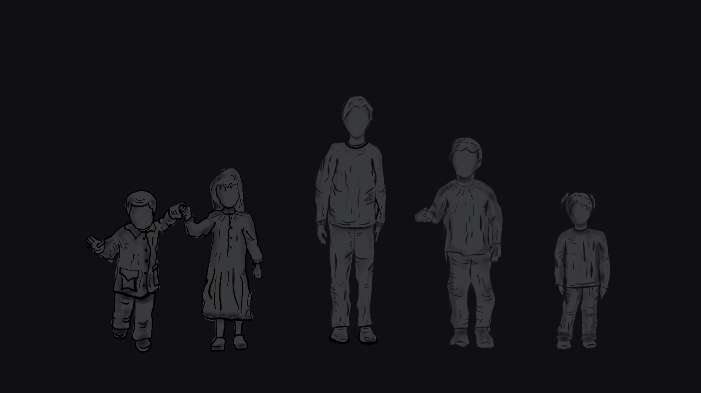
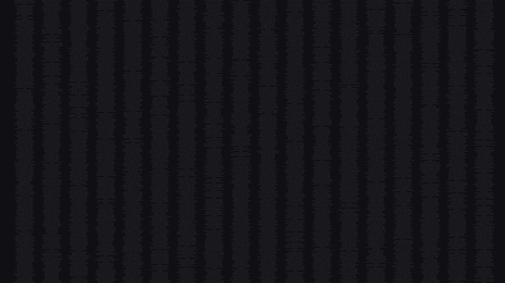

CONOCE SUS NOMBRES
Niños palestinos asesinados en ataques israelíes contra Gaza
La Franja de Gaza es un cementerio para miles de niños, ha dicho las Naciones Unidas.
Desde el 7 de octubre, los ataques israelíes han matado al menos a 14.500 niños, según funcionarios palestinos.Esto equivale a un niño palestino asesinado cada 15 minutos, o aproximadamente uno de cada 100 niños en la Franja de Gaza.
Miles más están desaparecidos bajo los escombros, a la mayoría de ellos se les da por muertos.
25.000 de ellos quedaron huérfanos de padre, madre o ambos.
Los niños supervivientes, que han soportado el impacto traumático de múltiples guerras, han pasado sus vidas bajo la sombra de un bloqueo israelí,
que ha influido en todos los aspectos de su existencia desde su nacimiento.
“Queremos vivir. Tenemos derecho a vivir en paz. Queremos comida, medicinas y educación. No bombas”.
Hace más de siete meses, los niños de Gaza suplicaron al mundo que les ayudara.
Desde entonces, Israel ha matado a un niño Palestino cada 15 minutos.

Aquí están los nombres de algunos de los niños asesinados.
Abd al-Jawad Mizar Jamal Hoso (0 años)
Abdel Khaleq Fadi Khaled Al Baba (0 años)
Abdel Rahim Ahmed Abdel Rahim Awad (0 años)
Abdel Rahman Ahmed Essam Salah (0 años)
Abdel Rahman Samir Salama Saad (0 años)
Abdel Raouf Ibrahim Abdel Raouf Al-Farra (0 años)
Abdul Karim Abdullah Omar Shehab (0 años)
Abdul Karim Kamel Zidane Al-Hawajri (0 años)
Abdullah Ahmed Khalil Zorob (0 años)
Abdullah Amir Abdullah Al Khor (0 años)
Abdullah Muhammad Abdul Hamid Muhanna (0 años)
Adam Magdy Jaber Al-Dahdouh (0 años)
Adam Muhammad Fouad Al Agha (0 años)
Adam Muhammad Samir Abu Ajwa (0 años)
Ahmed Moamen Ahmed Daloul (0 años)
Ahmed Mohamed Amin Nofal (0 años)
Ahmed Muhammad Yasser Dardouna (0 años)
Ahmed Saeed Ahmed Fouda (0 años)
Ahmed Shadi Talal Al-Haddad (0 años)
Ahmed Talaat Ali Barhoum (0 años)
Aisha Jihad Jalal Shaheen (0 años)
Alia Abdel Nour Sami Al-Souri (0 años)
Alma Adnan Jamal Al-Qatrawi (0 años)
Alma Moamen Muhammad Hamdan (0 años)
Alma Qais Abdul Karim Al-Zahrani (0 años)
Alyan Abdul Rahman Alyan Al-Ashqar (0 años)
Amal Mahmoud Mohamed Saleha (0 años)
Amal Muhammad Ahmed Al-Bayouk (0 años)
Amir Mahmoud Zuhdi Al-Masry (0 años)
Anas Abdul Aziz Muhammad Zahir (0 años)
Anas Abdullah Bahaa Al-Din Sukayk (0 años)
Anas Tariq Muhammad Al-Hasanat (0 años)
Anisa Mahmoud Ahmed Ali (0 años)
Anwar Muhammad Ahmed Al Hindi (0 años)
Aseed Hussein Muhammad Abu Hamad (0 años)
Aseel Amir Ali Al-Ashi (0 años)
Aseel Muhammad Jumah Dhair (0 años)
Aws Muhammad Hussein Al-Aleel (0 años)
Ayat Abdul Aziz Omar Farwaneh (0 años)
Ayla Uday Abdel Jawad Abu Ras (0 años)
Badr Yasser Rafiq Abu Habib (0 años)
Bahaa Mustafa Jamal Musa (0 años)
Basil Muhammad Hossam Abu Jasser (0 años)
Bilal Khaled Muhammad Sobh (0 años)
Bilal Muhammad Kamal Hamdan (0 años)
Celine Abdel Hadi Adel Daher (0 años)
Celine Ihab Ayman Al-Bahtiti (0 años)
Hija de Dina Abdel Hakim Ayoub Natat (0 años)
Hija de Zainab Muhammad Al-Abd Nawas (0 años)
Diaa Ahmed Abdel Ati Saleh Musa (0 años)
Diaa Majed Ahmed Kishko (0 años)
Elena Momen Riad Al-Rifi (0 años)
Eliana Muhammad Nabil Mekheimer (0 años)
Ella Muhammad Salem Al-Drimli (0 años)
Essam Mohammed Essam Farag (0 años)
Etaf Hassan Riyadh (0 años)
Ezzat Asaad Ezzat Saq Allah (0 años)
Fadl Maysara Muhammad Abu Hasira (0 años)
Fahd Uday Imad Al-Ajez (0 años)
Farah Hammam Youssef Bahr (0 años)
Farah Hossam Abdel Karim Hanoun (0 años)
Farah Suleiman Raed Abu Shabab (0 años)
Fatima Louay, Rafiq Al-Sultan (0 años)
Fátima Moatasem Amin Nofal (0 años)
Fátima Muhammad Rizq Al-Wawi (0 años)
Fatima Saleh Yasser Al-Hout (0 años)
Fayrouz Fadi Hamada Abu Salima (0 años)
Firas Muhammad Abdel Aziz Tamraz (0 años)
George Sobhi George Al-Souri (0 años)
Ghaith Khattab Omar Al-Bahloul (0 años)
Ghaith Yasser Nabil Nofal (0 años)
Ghazal Asaad Maher Abu Lashin (0 años)
Ghazal Mahmoud Saeed Al-Haddad (0 años)
Hala Yasser Hamed Al-Sanwar (0 años)
Hamza Muhammad Abdel Hamid Ashour (0 años)
Hassan Hamza Hassan Al-Amsi (0 años)
Hassan Muhammad Hassan Abu Daqqa (0 años)
Haya Sharif Bakr Al-Batniji (0 años)
Hind Khaled Ahmed Jahjouh (0 años)
Hoda Mustafa Hatem Abu Seif (0 años)
Hoor Muhammad Ibrahim Al-Mamlouk (0 años)
Hoor Omar Mahmoud Al-Azaib (0 años)
Hoor Rashad Saeed Habib (0 años)
Hoor Yassin Ahmed Sheikh Al-Eid (0 años)
Ibrahim Ahmed Nasser Shaqura (0 años)
Ibrahim Al-Muatasem Walid Al-Quqa (0 años)
Ibrahim Ammar Saad Al-Qara (0 años)
Iman Muhammad Abdel Fattah Al-Hinnawi (0 años)
Ismail Ahmed Ismail Farhat (0 años)
Issa Mahmoud Muhammad Qarmout (0 años)
Iyad Abdel Rahman Jihad Muheisen (0 años)
Jamal Muhammad Jamal Al-Maghari (0 años)
Jannah Hisham Muhammad Hamouda (0 años)
Jannat Naji Abdel Rahman Abu Hammad (0 años)
Jihad Muhammad Raafat Al-Dalis (0 años)
Joan Ali Nasr Amer (0 años)
Joel Atallah Ibrahim Al-Amsh (0 años)
Joud Bahaa Al-Din Haider Al-Nadim (0 años)
Juri Ammar Ibrahim Al-Jarousha (0 años)
Juri Ayed Ismail Al-Najjar (0 años)
Juri Darwish Hamed Abu Khatla (0 años)
Juri Ramadan Muhammad Miqdad (0 años)
Karim Muhammad Fayez Al-Madhoun (0 años)
Karima Muhammad Majid Al-Ghoul (0 años)
Kenan Amin Marwan Abu Shakyan (0 años)
Khaled Bilal Muhammad Abu Al-Amrain (0 años)
Khaled Fadi Khaled Al Baba (0 años)
Lana Yasser Nassif Hegazy (0 años)
Lana Youssef Emad Loulou (0 años)
Layan Muhammad Youssef Hussein (0 años)
Layan Rami Anwar Faisal (0 años)
Louay Mahmoud Saleh Al-Ajrami (0 años)
Maha Fadi Khaled Al Baba (0 años)
Mahmoud Eid Muhammad Nabhan (0 años)
Mahmoud Fadi Khaled Al-Baba (0 años)
Mahmoud Youssef Muhammad Abu Shawish (0 años)
Mai Hatem Asaad Qita (0 años)
Malak Abdul Rahman Ayesh Darwish (0 años)
Malak Abdul Salam Ali Abu Saif (0 años)
Malak Mahmoud Atef Halawa (0 años)
Malik Mahdi Ahmed Shalouf (0 años)
Malik Muhammad Shafiq Abu Al-Kass (0 años)
Malik Sami Mohamed Maghari (0 años)
Manal Moamen Majed Abu Al-Awf (0 años)
Marah Hammam Youssef Bahr (0 años)
María Ahmed Salah Kurdieh (0 años)
María Khaled Zakaria Al-Shanti (0 años)
María Yasser Kamal Al-Masry (0 años)
Maryam Ahmed Mahmoud Saidam (0 años)
Maryam Ahmed Ziad Ashour (0 años)
Maryam Noureddine Wael Daban (0 años)
Masa Jalal Moin Al-Harkali (0 años)
Masa Muhammad Youssef Nasr (0 años)
Maymouna Saher Saeed Al-Sayed (0 años)
Mecca Ahmed Eid Abu Sharkh (0 años)
Mian Yahya Yusuf Al-Astal (0 años)
Mira Abdel Rahman Fathi Radwan (0 años)
Moamen Ahmed Mahfouz Salah (0 años)
Moamen Essam Hussein Saleha (0 años)
Moamen Ibrahim Sabry Abu Shamas (0 años)
Moatasem Billah Moaz Hammad Hammad (0 años)
Moatasem Kanaan Farid El Gamal (0 años)
Moaz Abdel Fattah Khaled Al-Zuhairi (0 años)
Moaz Hani Muhammad Al-Aidi (0 años)
Moaz Muhammad Jawad Al-Wadiya (0 años)
Muhammad Abdel Samad Maher Mohsen (0 años)
Muhammad Ahmed Salem Al-Qanou (0 años)
Muhammad Al-Jabari Saed Misbah Al-Khor (0 años)
Muhammad Amr Muhammad Maghari (0 años)
Muhammad Basil Mahmoud Al-Khayyat (0 años)
Muhammad Fadi Jihad Radwan (0 años)
Muhammad Hamed Nidal Aliwa (0 años)
Muhammad Hani Muhammad Al-Zahar (0 años)
Muhammad Hussein Muhammad Abu Hamad (0 años)
Muhammad Ihab El-Din Khaled Awaida (0 años)
Muhammad Mahmoud Dhifallah Al-Nadaiyat (0 años)
Muhammad Mamdouh Muhammad Abu Jazar (0 años)
Muhammad Mustafa Khalil Tammos (0 años)
Muhammad Nidal Hisham Atallah (0 años)
Muhammad Nour al-Din Yahya al-Akkad (0 años)
Muhammad Omar Mustafa Shehab (0 años)
Muhammad Saeed Adel Abu Al-Rous (0 años)
Muhammad Saleh Mahmoud Al-Dairi (0 años)
Muhammad Taher Ahmed Abu Younis (0 años)
Muhammad Tamer Musleh Al-Qanou (0 años)
Murad Eid Youssef Abu Saifan (0 años)
Almizcle Abdul Hay Sami Al-Halabi (0 años)
Almizcle Mahmoud Ibrahim Hegazy (0 años)
Almizcle Muhammad Khalil Gouda (0 años)
Mustafa Hani Essam Saqallah (0 años)
Nabil Bilal Nabil Al-Aidi (0 años)
Najwa Ahmed Fathi Radwan (0 años)
Najwa Mahmoud Fathi Radwan (0 años)
Nasr Alaa Nasr Jarghoun (0 años)
Nasr Yahya Nasr Al-Rakhawy (0 años)
Nisreen Muhammad Muhammad Al-Najjar (0 años)
Nour Ahmed Zakaria Al-Derini (0 años)
Nour Youssef Bassam Abu Hasira (0 años)
Nourz Ahmed Shaaban Halasa (0 años)
Obaida Bilal Youssef Abu Muailiq (0 años)
Omar Ahmed Abdel Nasser Shamlakh (0 años)
Omar Ismail Omar Sharaf (0 años)
Omar Jihad Omar Al-Bahtini (0 años)
Omar Youssef Salah al-Din Abu Jadallah (0 años)
Osama Muhammad Adeeb Aslim (0 años)
Qais Ali Nabil Al-Aidi (0 años)
Qais Muhammad Ramadan Abaid (0 años)
Raafat Ibrahim Raafat Al-Azami (0 años)
Raafat Khalil Raafat Anan (0 años)
Raed Ihab Raed Salman Alai (0 años)
Raed Khaled Raed Rajab (0 años)
Rafif Mahmoud Aref Al-Faqawi (0 años)
Rafif Walid Sabri Al-Nabahin (0 años)
Raghad Ahmed Odeh Abu Khattab (0 años)
Rakan Hossam Hussein Musa (0 años)
Ratel Yasser Jumaa Abu Al-Fitah (0 años)
Rayan Abdel Rahim Jamal Al-Qatrawi (0 años)
Rayan Abdullah Zakaria Al-Astal (0 años)
Retal Khalil Yahya Al-Batsh (0 años)
Rima Muhammad Sabry Al-Buraim (0 años)
Rose Abdul Aziz Muhammad Al-Ghoul (0 años)
Saba Ahmed Ali Al-Qazzaz (0 años)
Saba Muhammad Imad Shalaq (0 años)
Salam Wael Ahmed Al-Astal (0 años)
Salama Muhammad Marwan Abu Atiwi (0 años)
Salma Amr Abdullah Nassar (0 años)
Salma Ibrahim en nombre de Shaaban (0 años)
Sama Ibrahim Majid Al-Wadiya (0 años)
Samira Osama Youssef Al-Zahhar (0 años)
Sanad Ahmed Mahmoud Abu Al-Omrain (0 años)
Sanad Bilal Nabil Amara (0 años)
Sanad Yassin Mustafa Al-Zinati (0 años)
Sarah Abdel Rahman Mohamed Hammad (0 años)
Sarah Fathi Abdel Karim Al-Farra (0 años)
Sarah Mahmoud Fayez Ahl (0 años)
Septiembre Omar Kamel Abu Rahma (0 años)
Sewar Khaled Saber Abu Qashlan (0 años)
Sewar Mounir Harb Dawas (0 años)
Sewar Suleiman Daoud Halas (0 años)
Shaima Saeed Nabil Al-Laham (0 años)
Sham Ahmed Fawzi Al-Qufaidi (0 años)
Sham Muhammad Saleh Al-Sawalha (0 años)
Sham Raif Mahmoud Khalil (0 años)
Sila Muhammad Suleiman Abu Amsha (0 años)
Sobhi Hamdan Sobhi Hassouna (0 años)
Sobhi Ramzi Subhi Al-Ajl (0 años)
Hijo de Anwar Ahmed Muhammad Darwish (0 años)
Hijo de Israa Jamal Salem Abu Mathkur (0 años)
Hijo de Nabila Nasr Muhammad Nofal (0 años)
Hijo de Rahima Saadi Muhammad Shaheen (0 años)
Sondos Muhammad Hammad Abu Baraka (0 años)
Sondos Muhammad Subhi Samara (0 años)
Suzan Iyad Muhammad Al-Ashi (0 años)
Tahani Ezz El-Din Ahmed Zoroub (0 años)
Tala Muhammad Rafiq Abu Ghali (0 años)
Tariq Ziyad Humaidan Abu Omra (0 años)
Tasneem Ramzi Odeh Qaraman (0 años)
Tayem Samer Suleiman Jaarour (0 años)
Tia Mamdouh Muhammad Abu Jazar (0 años)
Toleen Ibrahim Jihad Al-Maghari (0 años)
Toleen Muhammad Tawfiq Al-Taaban (0 años)
Tuqa Musa Khalil Abu Nuseira (0 años)
Uday Muhammad Rafiq Al-Sultan (0 años)
Uday Muhammad Saadi Abu Hamada (0 años)
Watan Muhammad Abd al-Rahim al-Madhoun (0 años)
Watin Ahmed Khaled Al-Saidi (0 años)
Watin Baraa Abd al-Rahman al-Hawar (0 años)
Watin Yahya Khaled Abu Hilal (0 años)
Yasmine Ramez Abdel Razzaq El Masry (0 años)
Yassin Adel Musa Zanoun (0 años)
Youmna Omar Riad Al-Rifi (0 años)
Younis Wissam Abdullah Afaneh (0 años)
Youssef Ahmed Jamal Musa (0 años)
Youssef Haitham Youssef Abu Mahdi (0 años)
Zaid Khaled Juma Al-Bahbahani (0 años)
Zein al-Din Suleiman Moin al-Najjar (0 años)
Zein Amer Ibrahim Al-Jarousha (0 años)
Zeina Ahmed Mohamed Shatat (0 años)
Gaza vuelve a ser “el lugar más peligroso del mundo para ser niño”
- Directora Ejecutiva de UNICEF, Catherine Russell
1 año
Asesinados antes de que pudieran dar sus primeros pasos.
Abdel Rahman Iyad Abdel Rahman Abu Jalal (1 año)
Abdul Rahman Abdul Aziz Yahya Al Balawi (1 año)
Abdullah Ibrahim Khaled Al-Dali (1 año)
Abdullah Khalil Abdullah Abu Hayya (1 año)
Abeer Ibrahim Khalil Meema (1 año)
Adam Bakr Nasr Al-Sarhi (1 año)
Adam Ezzat Muhammad Warsh Agha (1 año)
Adam Shawkat Mahmoud Al-Rantisi (1 año)
Adi Adam Jamal Abu Al-Naga (1 año)
Ahmed Amin Ahmed Abdel-Al Muharram (1 año)
Ahmed Mahmoud Ayman Al-Jayeh (1 año)
Ahmed Mohammed Mohammed Khalifa (1 año)
Ahmed Mustafa Ahmed Sheikh Al-Eid (1 año)
Ahmed Nazir Shawqi Shaaban (1 año)
Ahmed Thaer Sobhi Ghareeb (1 año)
Ahmed Yasser Ahmed Abu Halhoul (1 año)
Akram Muhammad Moin Al-Harkali (1 año)
Al-Baraa Muhammad Samir Abu Taima (1 año)
Ali Tariq Mahmoud Radwan (1 año)
Alma Khaled Kamal Rashwan (1 año)
Alyan Muhammad Alyan Al-Bayouk (1 año)
Amir Iyad Saeed Al-Naffar (1 año)
Amir Muhammad Mustafa Othman (1 año)
Amir Omar Zakaria Al-Astal (1 año)
Amir Rifaat Omar Abu Shab (1 año)
Amira Ibrahim Salah Abu Awad (1 año)
Amira Muhammad Samir Abu Ajwa (1 año)
Amna Shawqi Rajab Iqdih (1 año)
Anas Muhammad Mahmoud Al-Derawi (1 año)
Aseel Ahmed Mahmoud Radwan (1 año)
Aseel Iyad Nabil Omran (1 año)
Aseel Muhannad Amin Al Agha (1 año)
Asia Hassan Hamdi Al-Hinnawi (1 año)
Atef Mohamed Atef Muammar (1 año)
Atta Mohieddin Atta Darwish (1 año)
Aya Ahmed Nawaf Al-Najjar (1 año)
Aya Muhammad Hussein Ashour (1 año)
Ayla Ahmed Ali Obaid (1 año)
Ayla Saeed Saleh Abuelaish (1 año)
Ayman Ahmed Ramadan Al-Masry (1 año)
Ayman Muhannad Ayman Ismail (1 año)
Badr al-Din Badr Muhammad al-Amrain (1 año)
Baraa Mahmoud Nasser Shehadeh (1 año)
Baraa de Muhammad Walid Abu Shuaib (1 año)
Basma Muhammad Ibrahim Abu Sharia (1 año)
Bilsan Noman Suleiman Haboush (1 año)
Carmel Hamid Khaled Al-Bayaa (1 año)
Celine Ismail Muhammad Al-Mutawq (1 año)
Celine Saed Hassan Al Khatib (1 año)
Dahab Muhammad Zaki Al-Akhras (1 año)
Dana Muhammad Tayseer Abu Shammala (1 año)
Daniel Abdullah Dunian Mansour (1 año)
Dilla Jihad Hamada Al-Bakri (1 año)
Dima Muhammad Khaled Ghanem (1 año)
Eileen Maher Asaad Al-Akhras (1 año)
Elaf Khalil Yahya Al-Batsh (1 año)
Elaine Muhammad Sami Abu Naja (1 año)
Ezz Abdel Aziz Ezz Hegazy (1 año)
Ezz El-Din Suhaib Ezz El-Din Al-Haddad (1 año)
Fátima Hamza Subhi Al-Ajl (1 año)
Fawaz Ibrahim Fawaz Musleh (1 año)
Firas Adel Nabil Al-Qishawi (1 año)
Ghaith Iyad Muhammad Abu Draiqa (1 año)
Ghana Omar Hassan Abu Jazar (1 año)
Habiba Shehdeh Hassan Dhahir (1 año)
Habiba Suleiman Sami Abu Naja (1 año)
Hala Ahmed Atef Al Badrasawy (1 año)
Hala Hossam Jamil Al-Zaanin (1 año)
Hamsa Bilal Khalil Zoroub (1 año)
Hamza Alaa Ibrahim Abu Zuhair (1 año)
Hamza Ihab Jamil Al-Baz (1 año)
Hamza Muhammad Zaki Awaida (1 año)
Hamza Omar Hatem Al-Sadoudi (1 año)
Hassan Hossam Hassan Al-Ghafir (1 año)
Hazem Rajab Hazem Abu Saif (1 año)
Heidi Mohamed Alaa El-Din Ahmed (1 año)
Hoda Ahmed Jamal Jarad (1 año)
Hoda Muhammad Ali Al-Louh (1 año)
Hoor Abdul Shafi Muslim Mahani (1 año)
Hoor Mustafa Muhammad Al-Naqib (1 año)
Hossam Ismail Jumah Abu Zari'an (1 año)
Ibrahim Abdullah Musa Zorob (1 año)
Ibrahim Mahmoud Ibrahim Salem (1 año)
Imad Abdel Qader Imad Al-Bayouk (1 año)
Imad Iyad Imad Al-Arair (1 año)
Iman Muhammad Ishaq Al-Sayyid Ahmed (1 año)
Ismail Ali Ismail Hamad (1 año)
Jamil Ali Jamil Eid (1 año)
Jihad Abdul Rahman Jihad Muhaisen (1 año)
Jinan Hamed Nasser Al-Astal (1 año)
Joud Alaa Muhammad Al-Hassi (1 año)
Joud Saleh Khamis Nasrallah (1 año)
Julia Fawzi Saeed Al-Kurd (1 año)
Juliet Sobhi George Al-Souri (1 año)
Jumana Nabil Saeed Al-Qanfud (1 año)
Juri Muhammad Mansour Abdel Gawad (1 año)
Karam Ibrahim Muhammad Al-Souri (1 año)
Karim Mahmoud Jamil Al-Dahdouh (1 año)
Kenan Ibrahim Rami Al-Naji (1 año)
Kenan Saqr Nasr Al-Sarhi (1 año)
Kenan Tamer Khalil Ghariz (1 año)
Kenzi Fadi Salem Al Nabih (1 año)
Khaled Omar Sami Miqdad (1 año)
Khalil Ibrahim Fawzi Al-Nafar (1 año)
Khalil Musab Khalil Al-Ashqar (1 año)
Khamis Hassan Khamis Abu Tahoun (1 año)
Lama Mahmoud Muhammad Muslim (1 año)
Lana Ezz El-Din Ahmed Zoroub (1 año)
Lana Tariq Ziad Al-Hour (1 año)
Layan Mohamed Ismail Salah (1 año)
Lian Muhammad Abdel Jawad Abu Ras (1 año)
Louay Ihab Subhi Al-Ajl (1 año)
Mahmoud Basil Mahmoud Al-Khayyat (1 año)
Mahmoud Basil Ramadan Abed (1 año)
Mahmoud Mohieddin Mahmoud Al-Sebaei (1 año)
Mahmoud Muhammad Ahmed Abu Oreiban (1 año)
Majd Ahmed Salem Al-Qanou (1 año)
Majd Muhammad Amin Al-Dahdouh (1 año)
Majid Amjad Majid Al-Ghoul (1 año)
María Ahmed Ali Bustan (1 año)
María Moataz Mazen Aslan (1 año)
María Zaid Nafez Abu Taima (1 año)
Marwa Hamza Nasser Al-Astal (1 año)
Marwan Radwan Marwan Al-Masry (1 año)
Maryam Alaa Abdel Qader Abu Joudeh (1 año)
Maryam Muhammad Kamel Mohsen (1 año)
Masa Abdullah Mufid Hegazy (1 año)
Masa Ayman Samir Moussa (1 año)
Masa Marwan Mahmoud Hamad (1 año)
Masa Muhammad Adnan Al-Habashi (1 año)
Masa Muhammad Hassan Ashour (1 año)
Mayar Musab Muhammad Daloul (1 año)
Mayas Moaz Amin Nofal (1 año)
Mays Bahaa El-Din Khaled Aweida (1 año)
Mecca Imad Tawfiq Al-Farra (1 año)
Menat Allah Mahmoud Nayef Abu Shammala (1 año)
Menat Allah Mattar Ahmed Aliwa (1 año)
Menna Mahmoud Ismail Hamad (1 año)
Mian Muhammad Riad Abu Haddayd (1 año)
Mihraman Suleiman Moin Al-Najjar (1 año)
Mira Youssef Ibrahim Musleh (1 año)
Moamen Ihab Saadallah Al-Helou (1 año)
Mohamed Hossam Mahmoud Hamad (1 año)
Muhammad Abdullah Yaqoub Al-Hawar (1 año)
Muhammad Ahmed Ibrahim Al-Jarousha (1 año)
Muhammad Ahmed Suhail Al-Kahlot (1 año)
Muhammad Fathi Suleiman Al-Jarjawi (1 año)
Muhammad Iyad Ziyad Abu Mohsen (1 año)
Muhammad Mansour Nasr al-Din Abu Nimah (1 año)
Muhammad Muhammad Talal Al-Gharabli (1 año)
Muhammad Omar Salem Al-Shawi (1 año)
Muhammad Shadi Samir Qarqaz (1 año)
Muhannad Hani Khaled Abu Al-Naga (1 año)
Munir Fadi Munir Shabat (1 año)
Musa Ahmed Musa El-Zanati (1 año)
Almizcle Ahmed Abdullah Yassin (1 año)
Almizcle Ali Hassan Al-Rantisi (1 año)
Mustafa Musa Azmi Al-Jamal (1 año)
Najwa Sameh Hani Al-Madhoun (1 año)
Naya Attia Awad Muslim (1 año)
Neema Abdullah Castro Abu Ashayba (1 año)
Nevin Khaled Saleh Hassouna (1 año)
Nevin Muhammad Yahya Al-Akkad (1 año)
Nisreen Muhammad Shaaban Afana (1 año)
Noman Salamah Noman Mushtaha (1 año)
Nour Hamdan Muhammad Al-Buhaisi (1 año)
Noura Saeed Atallah Al-Ajili (1 año)
Nusayba Samer Salem Salem (1 año)
Obaida Mahmoud Abdel Karim Haniyeh (1 año)
Omar Hossam Hassan Al-Ghafir (1 año)
Osama Mahmoud Muhammad Labad (1 año)
Owais Amer Yahya Al-Balaawi (1 año)
Qusay Muhammad Hamza Abu Hilal (1 año)
Ramez Muhammad Ramez Awad (1 año)
Rana Majd Ramzi Almuqayad (1 año)
Revan Ezz El-Din Ahmed Al-Saeeda (1 año)
Rima Hamed Kamal Abu Aoun (1 año)
Rivana Walid Sabri Al-Nabahin (1 año)
Rizq Muhammad Gharib Gharib (1 año)
Rosa Khalil Ibrahim Khader (1 año)
Rowad Bashir Jamil Abu Saeed (1 año)
Saad Mahmoud Ayman Labad (1 año)
Sabreen Fahd Mahmoud Bashir (1 año)
Saeed Sameh Muhammad Abu Khousa (1 año)
Saeed Zaid Saeed Zaqoul (1 año)
Safa Suleiman Salman Al-Najjar (1 año)
Sahar Ahmed Omar Abu Sultan (1 año)
Saja Moayed Subhi Samara (1 año)
Saja Musa Muhammad Al-Aidi (1 año)
Sajid Ismail Hamdan Totah (1 año)
Salah al-Din Osama Khalil Abu Laila (1 año)
Sally Hassan Marzouk Al-Kahlot (1 año)
Salma Hisham Mahmoud Joyfel (1 año)
Salma Muhammad Muhammad Ali (1 año)
Samar Majid Suhail Al-Nahhal (1 año)
Sanad Muhammad Fathi Abu Ajwa (1 año)
Sanad Shadi Sharif Al-Sarhi (1 año)
Sarah Khaled Jihad Abu Jabbara (1 año)
Sarah Mahmoud Samir Akl (1 año)
Sarah Majd Abdel Latif Al-Hajj (1 año)
Sarah Muhammad Yahya Jabr (1 año)
Sarah Musa Hamdi Akhil (1 año)
Sawsan Mustafa Mahmoud Barbakh (1 año)
Sewar Ehab Ahmed Arif (1 año)
Sewar Fouad Mahmoud Tabasi (1 año)
Sewar Ibrahim Abdel Raouf Al-Farra (1 año)
Sewar Rami Muhammad Fadl Hassouna (1 año)
Shaaban Khaled Shaaban Ziadeh (1 año)
Sham Abdul Karim Ibrahim Al-Hato (1 año)
Sham Ahmed Isbitan Abu Sido (1 año)
Sham Muhammad Ziyad Abu Namous (1 año)
Sham Tamer Hosni Azzam (1 año)
Sharif Muhammad Sharif Ghazal (1 año)
Sidra Muhammad Saadi Qashta (1 año)
Siham Ibrahim Abdel Karim Al-Kahlot (1 año)
Sila Ahmed Hussein Madi (1 año)
Sila Dhafer Ahmed Abu Younis (1 año)
Siraj Abdullah Ayesh Darwish (1 año)
Siraj Mahdi Jawad Ali (1 año)
Taim Allah Muhammad Abdul Karim Jumah (1 año)
Tamim Nidal Ismail Abu Ajami (1 año)
Tayem Ahmed Samir Al-Fasih (1 año)
Tuqa Salem Muhammad Abu Maarouf (1 año)
Uday Mahmoud Fouad Hana (1 año)
Waad Ahmed Ibrahim Al-Masaraei (1 año)
Wadih Ahmed Wadih Hamdan (1 año)
Wateen Muhammad Khurshid Saeed Saq Allah (1 año)
Yahya Gohar Yahya Al-Balaawi (1 año)
Yamen Sami Saber Abu Wadi (1 año)
Yaqin Badr Eid Abu Jabal (1 año)
Yaqut Anas Hassan Dhahir (1 año)
Yara Muhammad Fayez Al-Hassani (1 año)
Yasser Saleh Yasser Al-Hout (1 año)
Yazan Ahmed Ibrahim Bardawil (1 año)
Youmna Moeen Abdel Mohsen Al-Hasanat (1 año)
Youssef Ayman Marzouk Sammour (1 año)
Youssef Saleh Ibrahim Aslim (1 año)
Zaher Adi Hamada Al-Bakri (1 año)
Zakaria Ahmed Muhammad Abu Jahjouh (1 año)
Zeina Hazem Abdel Hamid Muhanna (1 año)
Zuhair Ramadan Mahmoud Al-Dahuk (1 año)
Uno de cada 100 niños en Gaza ha muerto por ataques israelíes.
2 años
No pudieron pronunciar sus primeras palabras.
Abd al-Rahman Baraa Abd al-Rahman al-Hawar (2 años)
Abdel Hamid Mohamed Abdel Hamid Ashour (2 años)
Abdel Nasser Ahmed Abdel Nasser Shamlakh (2 años)
Abdel Nour Amin Marwan Abu Shakyan (2 años)
Abdel Rahman Abdel Nasser Daoud Al-Halisi (2 años)
Abdel Rahman Ahmed Fathi Radwan (2 años)
Abdul Aziz Amr Abdul Aziz Abu Amr (2 años)
Abdul Aziz Kamal Mansour Sobh (2 años)
Abdul Rahman Alaa Imad Al-Ajl (2 años)
Abdul Rahman Ayman Sabry Barhoum (2 años)
Abdullah Nour El-Din Shaker Abdel-Al (2 años)
Abdullah Rami Suleiman Hamdan (2 años)
Adam Abdel Karim Kamel Abu Rahma (2 años)
Adam Hossam Amin Hassouna (2 años)
Ahmed Abdel Rahman Abdel Nasser Awad (2 años)
Ahmed Ahmed Musa Sheikh Al-Eid (2 años)
Ahmed Ezz El-Din Ibrahim Abu Amer (2 años)
Ahmed Imad Farag Al-Zatma (2 años)
Ahmed Mamdouh Salem Hajji (2 años)
Ahmed Muhammad Saleh Abu Wardah (2 años)
Ahmed Odeh Muhammad Hussein (2 años)
Akram Saleh Saeed Abu Shamalah (2 años)
Al-Moataz Ahmed Karam Muhammad Al-Ghaleed (2 años)
Al-Shaima Ali Hisham Al-Qarinawi (2 años)
Ali Ahmed Mahmoud Al-Ran (2 años)
Alina Khaled Saeed Al-Ramlawi (2 años)
Amal Hamada Othman Al-Najjar (2 años)
Amal Muhammad Iyad Badawi (2 años)
Amani Omar Imad Al-Arair (2 años)
Amer Bilal Hassan Al Tatar (2 años)
Amer Salem Sami Al-Adini (2 años)
Amina Muhammad Salem Al Nabih (2 años)
Amir Ahmed Abdel Jawad Abu Ras (2 años)
Amir Ahmed Khader Qanan (2 años)
Amir Saeed Atta Abu Safra (2 años)
Anas Hamed Fayez Ahl (2 años)
Anas Hatem Hussein Al-Khatib (2 años)
Anas Muhammad Fahmy Al-Najjar (2 años)
Anas Osama Nafez Al-Maghari (2 años)
Anya Ahmed Zakaria Barakat (2 años)
Aseel Muhammad Khader Abu Touha (2 años)
Ayatolá Salem Odeh Abu Rawida (2 años)
Baraa Iyad Ibrahim Zorob (2 años)
Baraa Muhammad Adeeb Aslim (2 años)
Basma Saadi Muhammad Abu Hamada (2 años)
Batoul Abdel Fattah Khaled Al-Zuhiri (2 años)
Batoul Ismail Ibrahim Abu Zuhair (2 años)
Bilsan Ahmed Fawzi Abu Nimah (2 años)
Canadá Naji Hatem El Nadeem (2 años)
Eileen Jihad Hamada Al-Bakri (2 años)
Elaf Hussein Ahmed Al-Astal (2 años)
Elaine Muhammad Fayez Abu Odeh (2 años)
Essam Ihab Muhammad Abu Youssef (2 años)
Ezz El-Din Abdel-Rahman Fathi Radwan (2 años)
Fadl Muhammad Fadl Al-Agha (2 años)
Farah Muhammad Jumah Abu Deeb (2 años)
Faryal Muhammad Ahmed Musa (2 años)
Fátima Muhammad Abdel Hakim Asfour (2 años)
Fátima Numan Suleiman Haboush (2 años)
Fayrouza Mahdi Ahmed Shalouf (2 años)
Quds Fouad Mustafa Allawh (2 años)
Ghaith Khaled Radwan Shabat (2 años)
Ghanem Mahmoud Ghanem Abu Kamil (2 años)
Hala Abdul Rahman Muhammad Al Khalidi (2 años)
Hammad Muhammad Hammad Abu Baraka (2 años)
Hani Ahmed Rabhi Netil (2 años)
Hanzada Ahmed Mahmoud Al-Masry (2 años)
Hatem Ahmed Hatem Al-Hassi (2 años)
Haya Fadi Ayman Abu Ghalioun (2 años)
Hisham Abdo Fayez Al-Banna (2 años)
Hoor Hossam Fawzi Al-Bawab (2 años)
Imad al-Din Hazem Muhammad al-Bardawil (2 años)
Imad Saleh Maher Farwaneh (2 años)
Iman Khalil Ahmed Shaheen (2 años)
Iman Muhammad Ali Abu Nada (2 años)
Iman Muhammad Farid Qandil (2 años)
Islam Hazem Khalil Zaqout (2 años)
Islam Ihsan Osama Al-Gazzar (2 años)
Islam Rami Zuhair Arafat (2 años)
Ismail Hassan Nayef Abu Shammala (2 años)
Iyad Muhammad Hassan Maarouf (2 años)
Iyad Muhammad Shaaban Abu Sharifa (2 años)
Izz al-Din Muhannad Izz Afaneh (2 años)
Jaber Abdul Jaber Nimr Abu Khousa (2 años)
Jad Youssef Awad Shaaban (2 años)
Jana Hassan Mahmoud Al-Najjar (2 años)
Jihad Ibrahim Jihad Al-Maghari (2 años)
Jihad Khaled Jihad Abu Amer (2 años)
Jinan Ibrahim Kamal Rashwan (2 años)
Judy Abdullah Dunian Mansour (2 años)
Judy Hussein Fayek Abu Eida (2 años)
Julia Abdel Rahim Saadi Mansour (2 años)
Julia Amjad Jamil Abu Hussein (2 años)
Julia Muhammad Mahmoud Abu Assi (2 años)
Jumana Naji Abdel Rahman Abu Hammad (2 años)
Juri Muhammad Arif Shalayil (2 años)
Karam Ahmed Mahmoud Al-Riyati (2 años)
Karam Hossam Musa Abu Ishaq (2 años)
Karam Muhammad Abd al-Rahim al-Madhoun (2 años)
Karam Mustafa Jamil Eid (2 años)
Karim Mahmoud Majed Mushtaha (2 años)
Karim Mahmoud Moeen Ayyash (2 años)
Kenan Dia Munther Hassan (2 años)
Kenan Khalil Ibrahim Khadr (2 años)
Kenan Muhammad Mahmoud Farhat (2 años)
Kenzi Muhammad Samir Al-Bahnasawy (2 años)
Khaled Ahmed Bashir Shamlakh (2 años)
Khalil Moaz Khalil Ayyash (2 años)
Kinda Ahmed Mahmoud Al-Riyati (2 años)
Kinda Khamis Nasser Al-Tahrawi (2 años)
Laila Muhammad Hisham Thari (2 años)
Lama Bilal Abdul Rahman Al-Hawar (2 años)
Lamar Ali Mahmoud Qeshta (2 años)
Lana Omar Kamel Jundi (2 años)
Lara Ayoub Zafer Al-Helou (2 años)
Layan Muhammad Sayed Al-Aker (2 años)
Linda Musab Taher Al-Suwerki (2 años)
Lyar Jamal Al-Din Khaled Abu Saeed (2 años)
Lynn Ghassan Mahmoud Al-Qanou (2 años)
Mahmoud Muhammad Awad Al-Araj (2 años)
Mai Taher Ahmed Abu Younis (2 años)
Malak Abdul Rahman Muhammad Hammad (2 años)
Malak Gomaa Abdel Fattah El Shaarawy (2 años)
Malak Mahmoud Ibrahim Salem (2 años)
Malak Moisés Nahed Al-Fasih (2 años)
Malak Muhammad Majid Al-Daqs (2 años)
Malak Muhammad Youssef Al-Saidi (2 años)
Malik Aqeel Nazmi Qalja (2 años)
Malik Karam Rafiq Hamdouna (2 años)
Malik Mahmoud Atef Halawa (2 años)
Malik Muhammad Mahmoud Abu Ayada (2 años)
Marah Ahmed Ramzi Attouh (2 años)
María Muhammad Kamel Abu Hujair (2 años)
María Muhammad Sabri Al-Braym (2 años)
Maryam Khaled Raed Rajab (2 años)
Maryam Tamer Fathi Al-Nabahin (2 años)
Masa Louay Ibrahim Khader (2 años)
Masa Thaer Wael Al-Majayda (2 años)
Mila Muhammad Rafiq Abu Ghali (2 años)
Mira Abdullah Mounir Ghabayen (2 años)
Moatasem Billah Youssef Fathi Akl (2 años)
Moataz Radwan Marwan Al-Masry (2 años)
Moaz Walid Abdel Haq Al Mahlawi (2 años)
Mona Ahmed Mahmoud Kashko (2 años)
Muhammad Ahmed Jabr Abu Musa (2 años)
Muhammad Ahmed Shukri Hammad (2 años)
Muhammad Fadi Dhiyab Musa (2 años)
Muhammad Hamdan Ibrahim Al-Maqadma (2 años)
Muhammad Hassan Muhammad Al-Akhras (2 años)
Muhammad Ihab Awad Al-Muqayd (2 años)
Muhammad Lafi Muhammad Abu Malih (2 años)
Muhammad Mahmoud Youssef Al-Hassi (2 años)
Muhammad Mahmoud Youssef Hussein (2 años)
Muhammad Munir Harb Dawas (2 años)
Muhammad Rajab Muhammad Al-Naqib (2 años)
Muhammad Ramzi Sobhi Al-Ajl (2 años)
Muhammad Yassin Ahmed Sheikh Al-Eid (2 años)
Muhannad Zaki Musa Asalia (2 años)
Musk Abdel Karim Mounir Ghabayen (2 años)
Mustafa Islam Ali Abu Singer (2 años)
Mustafa Mohamed Omar Jalambo (2 años)
Nabil Iyad Nabil Omran (2 años)
Nabil Yasser Nabil Nofal (2 años)
Nadine Muhammad Amin Matar (2 años)
Naji Imad Jamil Abu Assi (2 años)
Neema Issam Farag Al-Fafsous (2 años)
Negma Saher Saeed Al-Sayed (2 años)
Nesma Anwar Abdel Latif Fayyad (2 años)
Nesma Mahmoud Abdel Karim Salman (2 años)
Nesma Samer Maher Al-Muqayed (2 años)
Nevin Muhammad Raed Al-Saati (2 años)
Nour Amr Muhammad Maghari (2 años)
Nour Asim Nabil Abu Shammala (2 años)
Obaida Raafat Alaa El-Din Ahmed (2 años)
Omar Ahmed Ziad Ashour (2 años)
Omar Ali Muhammad Qazi (2 años)
Omar Bashir Ahmed Abu Sharia (2 años)
Omar Thaer Munther Al-Hanafi (2 años)
Omneya Yahya Khaled Al-Wakhiri (2 años)
Osama Abdel Aziz Ahmed Salem Daoud (2 años)
Qusay Mansour Adham Al-Falouji (2 años)
Rafif Mazen Muhammad Maarouf (2 años)
Rafifan Nouri Rafifan Tanboura (2 años)
Rafiq Muhammad Rafiq Al-Sultan (2 años)
Raghad Hani Khaled Abu Al-Naga (2 años)
Rajab Ahmed Hatem Al-Hassi (2 años)
Rakan Shadi Atallah Al-Aidi (2 años)
Ramadán Musk Abdul Karim Al-Ashi (2 años)
Razan Alaa Muhammad Jasser Al-Qatati (2 años)
Rehab Essam Hussein Saleha (2 años)
Retal Ahmed Essam Salah (2 años)
Rima Imad Abdel Majeed Aslim (2 años)
Roaa Salim Yassin Al-Astal (2 años)
Sabah Abdul Latif Youssef Abu Saad (2 años)
Safa Bilal Muhammad Al-Ramlawi (2 años)
Salah Ezz El-Din Al-Qassam Musa Ashour (2 años)
Saleh Mahmoud Youssef Abu Nasser (2 años)
Salim Youssef Nabil Abu Saif (2 años)
Salma Hassan Khaled Abu Shuqair (2 años)
Salma Muhammad Khader Al-Azaib (2 años)
Salma Muhammad Khalil Abu Al-Ala (2 años)
Sama Muhammad Zuhair Al-Sharafa (2 años)
Samira Sultan Naeem Al Qaraan (2 años)
Sarah Abdullah Atta Al-Hamayda (2 años)
Sarah Muhammad Jamal Al-Maghari (2 años)
Selina Ibrahim Muhammad Al-Nouri (2 años)
Sham Ahmed Shamekh Jarad (2 años)
Sham Muhammad Abdel Nasser Al-Masry (2 años)
Sham Rabie Jumah Abu Jazar (2 años)
Siham Nidal Ismail Abu Ajami (2 años)
Sila Mahmoud Hassan Al Khawaja (2 años)
Siraj Muhammad Fathi Akl (2 años)
Sondos Ramez Nabil Shaqoura (2 años)
Suhaib Saeed Misbah Madi (2 años)
Suleiman Abdullah Shaaban Eid (2 años)
Tala Ahmed Hassan Al-Khatib (2 años)
Talal Osama Talal Al-Shafi'i (2 años)
Talin Muhannad Amin Al-Agha (2 años)
Tayem Samed Muhammad Al-Akkad (2 años)
Tía Mustafa Muhammad Al-Hanafi (2 años)
Toleen Ahmed Zaki Al-Sharafa (2 años)
Toleen Muhammad Khaled Al-Bayaa (2 años)
Wafa Karam Muhammad Bakr (2 años)
Walid Khaled Juma Al-Behbahani (2 años)
Ward Ahmed Fawzi Al-Qufaidi (2 años)
Ward Hamto Ahmed Al-Satri (2 años)
Ward Muhammad Hussein Al-Aal (2 años)
Waseem Mohamed Ramadán Eid (2 años)
Watin Ahmed Ibrahim Samaan (2 años)
Watin Muhammad Salem Al-Hashash (2 años)
Yacoub Ahmed Yacoub Ayyash (2 años)
Yara Muhammad Ezzat Abdel Latif (2 años)
Yazid Ahmed Atef Al-Kurd (2 años)
Yousry Muhammad Abdel Qader Al-Siksek (2 años)
Youssef Abdullah Muhammad Abdul Hadi (2 años)
Youssef Muhammad Jibril Jibril (2 años)
Zaid Hilal Muhammad Abu Al-Amrain (2 años)
Zain Muhammad Ziyad Al-Hur (2 años)
Zain Ziyad Ahmed Al-Muqayd (2 años)
Zakaria Abdullah Zakaria Al-Astal (2 años)
Zakaria Ezzedine Suleiman Haboush (2 años)
Zein al-Din Muhammad Maher al-Kahlot (2 años)
Zeina Ahmed Nizar Shehadeh (2 años)
Zeina Ashraf Essam Eid (2 años)
Zeina Muhammad Mahmoud Hamad (2 años)
Zeina Ziad Adel Nashbat (2 años)
Zuhair Abdel Fattah Zuhair Al-Kurd (2 años)
Más de 1.000 niños han perdido una o ambas piernas desde el 7 de octubre.
3 años
Murio siendo un niño.
Abdul Rahman Abdullah Fayek Mahmoud (3 años)
Abdul Rahman Ahmed Essam Shaat (3 años)
Abdul Rahman Ahmed Marwan Abu Taim (3 años)
Abdul Rahman Deeb Abdullah Rifaat Abu Al-Qumsan (3 años)
Abdul Rahman Youssef Salah al-Din Abu Jadallah (3 años)
Abdullah Abdul Rahman Abdul Karim Al-Salak (3 años)
Abdullah Osama Khader Abu Suriya (3 años)
Adam Muhammad Mahmoud Abu Samra (3 años)
Adam Nader Harby Al-Helou (3 años)
Adam Rizq Jumaa Al-Nahal (3 años)
Adham Diaa Muhammad Al-Qahwaji (3 años)
Ahmed Amjad Majed Abu Odeh (3 años)
Ahmed Basil Ramadan Abed (3 años)
Ahmed Hakim Mahmoud Al-Helu (3 años)
Ahmed Hamto Ahmed Al-Satri (3 años)
Ahmed Ibrahim Ahmed Al-Sawalhi (3 años)
Ahmed Ismail Jumah Abu Zari'an (3 años)
Ahmed Jamal Adnan Al-Rayes (3 años)
Ahmed Mahmoud Ahmed Tabasi (3 años)
Ahmed Mahmoud Nabil Matar (3 años)
Ahmed Mohamed Abdel Hamid Ashour (3 años)
Ahmed Mohamed Abdel Rahim Haider (3 años)
Ahmed Raafat Mahmoud Al-Zein (3 años)
Ahmed Raed Nabil Farhat (3 años)
Ahmed Saeed Muhammad Al-Tahla (3 años)
Aisha Omar Mustafa Shehab (3 años)
Aisha Salah Al-Din Ismail Abu Shammala (3 años)
Alaa Alaa Niaz Nasir (3 años)
Ali Amer Ali Zaqout (3 años)
Ali Ismail Mahmoud Al-Derawi (3 años)
Ali Mahmoud Khalil Al-Shaer (3 años)
Ali Muhammad Ali Al-Mubayed (3 años)
Ali Muhammad Zakaria Al-Astal (3 años)
Alma Taha Amer Al-Majayda (3 años)
Amani Muhammad Abd al-Rahim al-Madhoun (3 años)
Amin Muhammad Amin Matar (3 años)
Amir Muhammad Jumah Dhahir (3 años)
Amira Muhammad Salim Al-Sawarka (3 años)
Amjad Khaled Kamal Rashwan (3 años)
Anas Muhannad Sami Aslim (3 años)
Aseel Muhammad Mazen Shaldan (3 años)
Asim Magdy Mustafa Ali (3 años)
Athal Qais Abdul Karim Al-Zahrani (3 años)
Ayman Mahmoud Ayman Al-Jayeh (3 años)
Ayman Younis Attouh Abu Namous (3 años)
Aysel Hamdi Hikmet Ghaben (3 años)
Azad Tariq Muhammad Al-Maghari (3 años)
Bálsamo Omar Jamil Al-Zaanin (3 años)
Bana Iyad Gamal Nasr (3 años)
Bassam Sameh Muhammad Al-Sankari (3 años)
Bassem Hassan Muhammad Abu Riala (3 años)
Batoul Mahmoud Dababesh (3 años)
Bayan Medhat Abdel Fattah Dhaif (3 años)
Beirut Muhammad Iyad Abu Shammala (3 años)
Bilal Ahmed Khalil Zorob (3 años)
Bilal Mahmoud Muhammad Al-Sadoudi (3 años)
Bisan Muhammad Sami Al-Nawas (3 años)
Bisan Osama Salama Hussein Ali (3 años)
Dahoud Magdy Tayseer Abu Shahma (3 años)
Dalal Majid Ismail Abu Shammala (3 años)
Dia Saeed Anan Tanboura (3 años)
Diala Rani Mahmoud Muammar (3 años)
Dima Jihad Hamed Abu Awaimer (3 años)
Eileen Amjad Alian Abu Ayada (3 años)
Elaine Osama Muhammad Dabour (3 años)
Enas Khabbab Muhammad Nabil Al-Mutawq (3 años)
Ensar Mohamed Sobhi Samara (3 años)
Ezz El-Din Saeed Nabil Al-Laham (3 años)
Fadi Khaled Muhammad Al-Bardawil (3 años)
Farah Hazem Abdel Hamid Muhanna (3 años)
Farah Muhammad Ahmed Abu Oreiban (3 años)
Fátima Asim Hassan Abu Musameh (3 años)
Fayez Mahmoud Fayez Ahl (3 años)
Ghala Hamza Mufid Hegazy (3 años)
Gharam Hassan Samir Akl (3 años)
Ghazal Imad al-Din Ismail Abu al-Qumsan (3 años)
Ghazal Jameel Moein Atallah (3 años)
Habiba Al-Rahman Musab Basim Al-Kurd (3 años)
Hala Muhammad Younis Al-Agha (3 años)
Hala Raed Ibrahim Al-Sawalhi (3 años)
Hamed Darwish Hamed Abu Khatla (3 años)
Hamza Alaa Nasr Jarghoun (3 años)
Hamza Muhammad Nahed Al-Fasih (3 años)
Hamza Rami Nidal Aliwa (3 años)
Hamza Wael Ahmed Al-Astal (3 años)
Hana Moamen Mahmoud Al-Talaa (3 años)
Hassan Hani Hassan bin Saeed (3 años)
Hassan Mutee Bassam Al-Ghafir (3 años)
Haya Ahmed Saleh Hamed (3 años)
Hola Hassan Fawzi Al-Bawab (3 años)
Hoor Muhannad Abdul Qader Al-Attar (3 años)
Hosni Mohamed Hosni Muhareb (3 años)
Ibrahim Nael Bashir Al-Rahn (3 años)
Ibtisam Noman Suleiman Haboush (3 años)
Imad Alaa Imad Al-Ajl (3 años)
Iman Khaled Mahfouz Kishko (3 años)
Islam Sameh Hani Al-Madhoun (3 años)
Iyad Ahmed Amer Al-Majayda (3 años)
Izz al-Din Abdul Misbah al-Khor (3 años)
Jad Hazem Muhammad Al-Bardawil (3 años)
Jad Samer Muhammad Al-Mubasher (3 años)
Jannat Hamza Subhi Al-Ajl (3 años)
Jinan Ammar Youssef Abu Muayliq (3 años)
Joud Abdel Halim Ezzat Abdel Latif (3 años)
Joud Muhammad Eyadah Al-Rifi (3 años)
Judy Asaad Maher Abu Lashin (3 años)
Judy Muhammad Asaad Abu Shawqa (3 años)
Karam Musa Youssef Al-Hassi (3 años)
Karim Hussein Akram Al-Malh (3 años)
Karim Karam Muhammad Bakr (3 años)
Karim Muhammad Abdel Aziz Tamraz (3 años)
Karim Tariq Abdul Hakim Al-Mutawq (3 años)
Karim Tariq Awad (3 años)
Kenan Ashraf Tayseer Al-Herbawi (3 años)
Kenan Muhammad Ibrahim Darwish (3 años)
Kenan Muhammad Salim Nabhan (3 años)
Kenzi Haitham Zaki Awaida (3 años)
Khaled Abdullah Waheed Al-Tabash (3 años)
Khaled Yahya Khaled Abu Hilal (3 años)
Laila Saeed Atta Abu Safra (3 años)
Lana Muhammad Nasser Al-Samri (3 años)
Lara Ahmed Samir Abu Shammala (3 años)
Layan Khalil Shawqi Abed (3 años)
Layan Saeed Abdel Nasser Al-Taweel (3 años)
Lina Mahmoud Muhammad Qanan (3 años)
Lynn Abdel Rahman Eayish Ramadán (3 años)
Lynn Saeed Mahmoud Al-Madhoun (3 años)
Mahmoud Fahd Mahmoud Bashir (3 años)
Mahmoud Hossam Mahmoud Hamad (3 años)
Mahmoud Mohamed Hamdy Deeb (3 años)
Mahmoud Muhammad Mahmoud Al-Derawi (3 años)
Mahmoud Rani Mahmoud Abu Saada (3 años)
Majd Mohamed Ismail Salah (3 años)
Majd Muhammad Hamdan Totah (3 años)
Makram Mustafa Ibrahim Al-Latta (3 años)
Malak Ismail Rabih Habboub (3 años)
Malak Khalil Ibrahim Al-Hato (3 años)
Malak Nabel Wageh Al-Namnam (3 años)
Malik Hisham Musa El-Zanati (3 años)
María Gabriel Abu Al-Atta (3 años)
María Hudhayfah Salah Abu Shakyan (3 años)
María Muhammad Arafat Al-Bahtini (3 años)
Maryam Abdel Aziz Omar Farwaneh (3 años)
Maryam Abdel Rahman Maher Al-Mutawaq (3 años)
Maryam Ahmed Abdel Raouf Al-Halabi (3 años)
Maryam Ahmed Mahmoud Al-Ran (3 años)
Maryam Amjad Majid Al-Ghoul (3 años)
Maryam Mahdi Ashraf Barghouth (3 años)
Maryam Maher Salah Othman (3 años)
Maryam Muhammad Tayseer Abu Shammala (3 años)
Maryam Wael Abdel Rahman Al-Khudari (3 años)
Masa Ihab El-Din Khaled Aweida (3 años)
Mayar Muhammad Fawzi Ahl (3 años)
Menat Allah Maher Khaled Abu Obaid (3 años)
Milana Ayman Samir Moussa (3 años)
Mira Muhammad Saeed Washah (3 años)
Miral Muhammad Fawzi Ahl (3 años)
Mirna Ahmed Louay Al-Minawi (3 años)
Mirna Ali Mahmoud Qeshta (3 años)
Moamen Amen Moamen Aljarah (3 años)
Moatasem Billah Raed Ahmed Kashko (3 años)
Mohamed Tamer Mohamed Al-Sayed (3 años)
Muhammad Abdel Rahim Omar Sharaf (3 años)
Muhammad Abdullah Ibrahim Gouda (3 años)
Muhammad Adel Muhammad Musa (3 años)
Muhammad Basil Abdel Azim Al-Hajj (3 años)
Muhammad Bilal Muhammad Abu Al-Amrain (3 años)
Muhammad Ihab Farouk Al-Aqez (3 años)
Muhammad Moataz Obaid Yassin (3 años)
Muhammad Muhammad Basman Saqr (3 años)
Muhammad Nidal Muhammad Saleh Dardouna (3 años)
Muhammad Omar Nafez Al-Ghoul (3 años)
Muhammad Raafat Saleh Shalouf (3 años)
Muhammad Ramadan Muhammad Kamal Al-Nono (3 años)
Muhammad Shawkat Mahmoud Al-Rantisi (3 años)
Muhammad Waseem Samir Rashid (3 años)
Muhammad Yahya Sami Al-Jourani (3 años)
Muhammad Yasser Rafiq Abu Habib (3 años)
Muhammad Youssef Fayez Qasim (3 años)
Muhammad Youssef Muhammad Abu Shawish (3 años)
Musaab Mahmoud Nayef Abu Shammala (3 años)
Musk El-Khetam Ismail Awad Weshah (3 años)
Mustafa Muhammad Mustafa Al-Lilli (3 años)
Nada Abdel Rahman Nizar Shehadeh (3 años)
Nada Amin Ahmed Abdel-Al Muharram (3 años)
Nagham Refaat Omar Abu Shab (3 años)
Nahed Abdel Rahman Nahed Obaid (3 años)
Nasser Khamis Nasser Al-Tahrawi (3 años)
Nassim Mohammed Ahmed Jahjouh (3 años)
Noha Iyad Saeed Al-Naffar (3 años)
Nour El-Din Anwar Abdel Latif Fayyad (3 años)
Nour El-Din Hamada Ahmed Jarghoun (3 años)
Nour El-Din Hamza Omar Abu Odeh (3 años)
Nour Muhammad Iyad Barzeq (3 años)
Nour Youssef Omar Sharaf (3 años)
Noura Ahmed Deeb Radwan (3 años)
Noura Musab Kamal Abu Naim (3 años)
Ola Ahmed Muhammad Abu Jahjouh (3 años)
Omar Ahmed Nawaf Al-Najjar (3 años)
Omar Islam Khader Musa (3 años)
Omar Khamis Sidqi Al-Madhoun (3 años)
Omar Muhammad Khalil Abu Hamad (3 años)
Omar Youssef Rizq Abu Al-Layl (3 años)
Osama Bilal Nafez Maghari (3 años)
Qusay Muhammad Alaa Al-Din Ahmed (3 años)
Rabab Mahmoud Nafez Al-Aidi (3 años)
Rand Sameh Muhammad Abu Khousa (3 años)
Rayan Ayham Nihad Shawa (3 años)
Razan Adham Bashir Thabet (3 años)
Razan Muhammad Ahmed Bolan (3 años)
Reda Muawiyah Ahmed Khalla (3 años)
Reman Al-Muatasem Walid Al-Quqa (3 años)
Rima Ahmed Samir Qanita (3 años)
Riyad Muhammad Riad Totah (3 años)
Roaa Salah al-Din Muhammad al-Dalu (3 años)
Saba Abdul Rahman Muhammad Saleha (3 años)
Sabah Mahmoud Jamil Al-Khatib (3 años)
Sadan Abdul Hadi Riad Matar (3 años)
Saif Al-Din Saleh Abdullah Al-Arqan (3 años)
Salah Ahmed Salah Al-Ajrami (3 años)
Salma Ahmed Tawfiq Al-Madhoun (3 años)
Salma Maysara Iyad Sarsak (3 años)
Sama Ahmed Youssef Abu Rahma (3 años)
Samer Mohammed Mohammed Al-Mubashir (3 años)
Samir Muhammad Samir Tamraz (3 años)
Samira Muhammad Omar Hegazy (3 años)
Sanad Salah al-Din Hamdan al-Najjar (3 años)
Sanad Saqr Izzat Abu Rukba (3 años)
Sarah Bilal Muhammad Hassouna (3 años)
Sarah Firas Fahmy Al-Najjar (3 años)
Sarah Saeed Jaber Abu Huwaishil (3 años)
Shaaban Ahmed Shaaban Halasa (3 años)
Shahd Munther Muhammad Abu Sariya (3 años)
Shahd Yasser Ahmed Abu Halhoul (3 años)
Sham Hussein Muhammad Abu Hamad (3 años)
Sham Izz al-Din Saleh Abu Dahrouj (3 años)
Sham Khalil Abdul Hafez Al-Baghdadi (3 años)
Sham Mahmoud Nasr al-Din Abu Nimah (3 años)
Sham Marwan Abdel Hakim Al-Mutawq (3 años)
Sham Tariq Ziad Dahman (3 años)
Sobhi Abdullah Sobhi Hegazy (3 años)
Souad Mohamed Mohamed Gouda (3 años)
Suhaib Mahmoud Muhammad Shanaa (3 años)
Suhail Majid Suhail Al Nahal (3 años)
Suzan Muhammad Salman Abu Al-Atta (3 años)
Tamam Mustafa Amin Nofal (3 años)
Toleen Muhammad Fayez Al-Madhoun (3 años)
Tuqa Musab Khalil Al-Ashqar (3 años)
Uday Ahmed Muhammad Al-Aleel (3 años)
Ward Khalil Abdullah Abu Hayya (3 años)
Ward Mahmoud Ismail Harzallah (3 años)
Wissam Abdel Hadi Adel Daher (3 años)
Wissam Muhammad Ayed Adwan (3 años)
Yahya Muhammad Yahya Jabr (3 años)
Yaman Muhammad Ahmed Al-Ashqar (3 años)
Yamen Muhammad Ahmed Al-Ashqar (3 años)
Yamen Nidal Saleh Mishmish (3 años)
Yazan Moaz Hammad Hammad (3 años)
Yazan Ramez Muhammad Qashta (3 años)
Yazid Jabr Noman Hamid (3 años)
Youssef Fathi Suleiman Al-Jarjawi (3 años)
Youssef Fawzi Zuhair Al-Laham (3 años)
Youssef Hammam Mustafa Abu Toha (3 años)
Youssef Muhammad Fahmy Al-Najjar (3 años)
Zaid Adel Awni Al-Dous (3 años)
Zaid Ahmed Jihad Abu Jabbara (3 años)
Zaid Amer Akram Murtaja (3 años)
Zain Ahmed Abdel Aziz Abu Al-Kass (3 años)
Zain Azmi Mahmoud Abu Ayada (3 años)
Zain Mahmoud Totah (3 años)
Zain Saed Muhammad Muslim (3 años)
Zein al-Din Anwar Musa Jaber (3 años)
Zeina Muhammad Talal Al-Dahshan (3 años)
Zeina Nasser Hosni Moussa (3 años)
Estos son sólo los primeros 1.000 nombres, todos menores de cuatro años.
4 años
Privados de las alegrias del preescolar.
Abd al-Jawad Muhammad Abd al-Jawad Abu Ras (4 años)
Abdel Aziz Abdel Nasser Dawoud Al-Halisi (4 años)
Abdel Salam Mahmoud Jumah Abu Jazar (4 años)
Abdul Aziz Hatem Jabr Al-Rai (4 años)
Abdul Aziz Radwan Naeem Al-Helou (4 años)
Abdul Karim Jamal Salim Al-Ramlawi (4 años)
Abdul Khaleq Khaled Radwan Shabat (4 años)
Abdul Rahman Muhammad Awni Al-Mahlawi (4 años)
Abdul Rahman Muhammad Bassam Al-Jarjawi (4 años)
Abdullah Muhammad Fadl Hassouna (4 años)
Adam Ali Musa Hussein (4 años)
Adam Ayman Ismail Abu Shammala (4 años)
Adam Hussein Muhammad Al-Akhras (4 años)
Adam Muhammad Ahmed Tabasi (4 años)
Adam Raed Abdullah Yassin (4 años)
Adam Shaker Marzouk Al-Kahlot (4 años)
Adel Abdel Aziz Adel Dehliz (4 años)
Adel Rami Adel Jaber (4 años)
Adel Ziad Adel Dehliz (4 años)
Ahmed Ezz El-Din Mohamed El-Zinati (4 años)
Ahmed Hani Abdel Qader Al-Attar (4 años)
Ahmed Ismail Fayez Abu Muailiq (4 años)
Ahmed Ismail Mahmoud Al-Derawi (4 años)
Ahmed Iyad Ahmed Barika (4 años)
Ahmed Mahmoud Ahmed Ayyad (4 años)
Ahmed Mohamed Hassan Al-Zazou (4 años)
Ahmed Muhammad Alyan Al-Bayouk (4 años)
Ahmed Nour El-Din Ahmed Abu Lehia (4 años)
Ahmed Omar Hassan Abu Jazar (4 años)
Alaa Abdel Fattah Wajih Al-Herbawi (4 años)
Alaa Muhammad Fayez Al-Salak (4 años)
Alemán Shadi Walid Baroud (4 años)
Alma Ahmed Jamal Musa (4 años)
Amin Abdullah Amin Abu Al-Rous (4 años)
Amin Mahmoud Abdul Hakim Al-Ajrami (4 años)
Amir Atiya Haider Issa (4 años)
Amir Jumah Rajab es conocido (4 años)
Amir Nader Harbi Al-Helou (4 años)
Amir Shadi Atallah Al-Aidi (4 años)
Amira Ibrahim Atta Al-Zaanin (4 años)
Amira Ismail Muhammad Farina (4 años)
Amna Shadi Eid Abu Al-Layali (4 años)
Amr Muhammad Jamil Al-Zaanin (4 años)
Anas Abdullah Mahmoud Al Khayyat (4 años)
Anas Islam Ali Abu Singer (4 años)
Anas Izz al-Din al-Qassam Musa Ashour (4 años)
Anas Muhammad Mazen Shaldan (4 años)
Anas Nasser Shehdeh Abu Al-Fahm (4 años)
Arwa Qais Abdul Karim Al-Zahrani (4 años)
Aseel Nafez Mohammed Al-Natour (4 años)
Aya Salah Al-Din Hamdan Al-Najjar (4 años)
Ayat Muhammad Salama Al-Haddad (4 años)
Ayed Muhammad Ayed Adwan (4 años)
Ayesh Musab Ibrahim Al-Astal (4 años)
Ayoub Muhammad Suleiman Al-Nabahin (4 años)
Azzam Assem Azzam Shawa (4 años)
Bana Salah al-Din Muhammad al-Dalu (4 años)
Baraa Ibrahim Muhammad Al-Aidi (4 años)
Baraa Ziad Anwar Abu Mustafa (4 años)
Bayan Abdul Khaleq Radwan Shabat (4 años)
Bisan Abdullah Munir Ghabayen (4 años)
Bisan Hamad Sami Hegazy (4 años)
Dana Etemad Youssef Dalloul (4 años)
Dina Adnan Saeed Al-Haddad (4 años)
Eileen Tamer Mohamed Ahmed (4 años)
Elías Hani Muhammad Abu Jalhoum (4 años)
Elias Samed Muhammad Al-Akkad (4 años)
Elias Walid Muhammad Othman (4 años)
Faten Muhammad Youssef Nasr (4 años)
Faten Rajab Muhammad Al-Nakib (4 años)
Fathi Ziad Fathi Mansour (4 años)
Ghazal Ahmed Fathi Abu Ajwa (4 años)
Haider Abdel Shafi Muslim Mahani (4 años)
Hala Muhammad Muhammad Khalifa (4 años)
Hala Saadi Magdy Al-Dabaka (4 años)
Hamada Jihad Hamada Al-Bakri (4 años)
Hammam Muhammad Hussein Al-Aloul (4 años)
Hanan Mohamed Ismail Salah (4 años)
Hanan Muhammad Walid Abu Shuaib (4 años)
Hassan Ibrahim Abdullah Ashour (4 años)
Hoda Amin Ahmed Abdel-Al Muharram (4 años)
Hoda Muhammad Ismail Abu Naja (4 años)
Hoor Haitham Jamal Abu Sharkh (4 años)
Hoor Muhammad Hussein Ashour (4 años)
Ibtisam Abdullah Mahmoud Abudan (4 años)
Imtiaz Fawzi Kamel Abu Akar (4 años)
Israa Yasser Musa Abu Ishaq (4 años)
Iyad Abdel Aziz Muhammad Askar (4 años)
Iyad Muhammad Iyad Badawi (4 años)
Jalal Muhammad Tayseer Abu Wardeh (4 años)
Jamil Ayman Jamil Abu Al-Jalil (4 años)
Jana Sameh Adel Abu Haddaf (4 años)
Jannah Muhammad Rabah Hamdan (4 años)
Jannah Osama Ahmed Al-Kurd (4 años)
Joan Abdel-Al Hussein Abu Fatayer (4 años)
Joan Ahmed Rabhi Nateel (4 años)
Joan Ibrahim Kamal Rashwan (4 años)
Joan Mahmoud Ahmed Tabasi (4 años)
Joan Yahya Youssef Al-Astal (4 años)
Joud Ashraf Saeed Abu Hani (4 años)
Joud Hamid Nasser Al-Astal (4 años)
Joud Suleiman Moin Al-Najjar (4 años)
Julia Wagdi Ramadan El-Shabrawy (4 años)
Jumana Maher Muhammad Ibhar (4 años)
Juri Fadl Ziad Yassin (4 años)
Juri Rasmi Jabr Sobeih (4 años)
Juri Youssef Samir Sabre (4 años)
Karam Wissam Ahmed Abu Warda (4 años)
Kenan Musab Kamal Abu Naim (4 años)
Kenzi Mahmoud Darwish Ghabayen (4 años)
Khaled Ahmed Musa Al-Zanati (4 años)
Kinda Adel Nabil Al-Qishawi (4 años)
Lamar Adi Abdel Jawad Abu Ras (4 años)
Layan Moaz Khalil Ayyash (4 años)
Layan Muhammad Sobhi Abu Lashin (4 años)
Lina Louay Ibrahim Khader (4 años)
Lynn Abdel Fattah Zuhair Al-Kurd (4 años)
Mahmoud Abdel Aziz Muhammad Zahir (4 años)
Mahmoud Moamen Amin Nofal (4 años)
Mahmoud Saeed Hajjaj Al-Zarii (4 años)
María Ayman Samir Moussa (4 años)
Marwan Ahmed Mahmoud Abu Lebdeh (4 años)
Maryam Ibrahim Nabil Abu Saif (4 años)
Maryam Youssef Fathi Akl (4 años)
Masa Muhammad Naeem Okasha (4 años)
Mays Muhammad Amin Al-Dahdouh (4 años)
Mecca Fouad Mustafa Al-Louh (4 años)
Mira Abdullah Sayed Al-Mashukhi (4 años)
Mirna Samer Suleiman Jaarour (4 años)
Muhammad Abdullah Ahmed Hegazy (4 años)
Muhammad Ahmed Abdel Ati Saleh Musa (4 años)
Muhammad Ahmed Awad Nasr (4 años)
Muhammad Ahmed Issa Al-Nashar (4 años)
Muhammad Awad Zaki Al-Hawajri (4 años)
Muhammad Bahaa El-Din Awad Al-Kahlot (4 años)
Muhammad Bilal Zahir Ahmed (4 años)
Muhammad Ghassan Salah Al-Haj Ahmed (4 años)
Muhammad Ibrahim Muhammad Abu Haddaf (4 años)
Muhammad Ibrahim Radwan Shabat (4 años)
Muhammad Jamil Samir Agha (4 años)
Muhammad Magdy Nahed Abu Al-Lail (4 años)
Muhammad Muayyad Subhi Samara (4 años)
Muhammad Musa Issa Sammour (4 años)
Muhammad Mustafa Ahmed Sheikh Al-Eid (4 años)
Muhammad Nabil Wajih Al-Namnam (4 años)
Muhammad Saleh Salem Abu Mandil (4 años)
Muhammad Samed Muhammad Qashta (4 años)
Muhammad Saqr Nasr Al-Sarhi (4 años)
Muhammad Wissam Muhammad Ziada (4 años)
Muhannad Ziyad Mahmoud Al-Azaib (4 años)
Almizcle Munther Saadallah Al-Helou (4 años)
Almizcle Omar Kamel Abu Rahma (4 años)
Nabil Assem Nabil Abu Shamala (4 años)
Nada Thabet Rabhi Al Haddad (4 años)
Naji Muhammad Naji Baraka (4 años)
Nassim Fadi Rasmi Qudeih (4 años)
Nassim Maher Asaad Al-Akhras (4 años)
Nawal Ahmed Hussein Madi (4 años)
Nisreen Ahmed Ibrahim Samaan (4 años)
Noha Ramadan Khalil Joudeh (4 años)
Nour El-Din Mahmoud Abdel Karim Salman (4 años)
Nour Khaled Nasser Akhil (4 años)
Nouran Hassan Abdel Fattah Al-Majdalawi (4 años)
Omar Ahmed Zidan Al-Hawajri (4 años)
Omar Amer Akram Murtaja (4 años)
Omar Bilal Muhammad Al-Banna (4 años)
Omar Muhammad Abdel Karim Al-Nakla (4 años)
Omar Ziyad Zuhair Abdel Hadi (4 años)
Osama Fayek Muhammad Mahmoud (4 años)
Passant Yasser Mahmoud Sammour (4 años)
Qais Muhammad Jamal Al-Aloul (4 años)
Raghad Muhammad Abdel Karim Al-Ghalban (4 años)
Rahaf Sameh Muhammad Abu Khousa (4 años)
Rakan Ahmed Hisham Abu Dalal (4 años)
Rakan Jihad Hamid Abu Awaimer (4 años)
Rakan Muhammad Awni Al-Dous (4 años)
Rama Muhammad Bassam Abu Sharbin (4 años)
Randa Ibrahim Bassem Shaaban (4 años)
Rani Zayed Fathi Al Majdalawi (4 años)
Rania Muhannad Abdel Qader Al-Attar (4 años)
Razan Muhammad Fathi Abu Ajwa (4 años)
Reem Muhammad Odeh Sunaina (4 años)
Reman Omar Zakaria Al-Astal (4 años)
Rima Adnan Saeed Al-Haddad (4 años)
Rima Farouk Misbah Sakik (4 años)
Rizq Salah Fawaz Abu Rizq (4 años)
Ruqaya Muhammad Munir Al-Talaa (4 años)
Saba Gamal Sabry Al-Masry (4 años)
Sabri Muhammad Sabri Al-Buraim (4 años)
Sadeel Mansour Nasr al-Din Abu Nimah (4 años)
Saeed Hazem Saeed Al-Ramlawi (4 años)
Saeed Khurshid Muhammad Khurshid Saeed Saq Allah (4 años)
Saleh Muhammad Saleh Al-Qan (4 años)
Sally Ramez Muhammad Abu Muammar (4 años)
Sally Shehdeh Hassan Dhair (4 años)
Salma Hassan Nayef Abu Shamalah (4 años)
Salma Osama Hajjaj Al-Zarii (4 años)
Sama Mahmoud Dhaif Allah Al-Nadaiyat (4 años)
Sarah Amer Yahya Al-Balaawi (4 años)
Sewar Muhammad Khader Abu Toha (4 años)
Sewar Mustafa Khalil Tammos (4 años)
Sewar Rizq Suleiman Zorob (4 años)
Sham Jihad Abdullah Abu Rakab (4 años)
Sham Muhammad Ibrahim Al-Mamlouk (4 años)
Sidra Basil Ramadan Al-Shaer (4 años)
Sila Alaa Sami Al-Dayeh (4 años)
Sila Hassan Jamal Musa (4 años)
Sila Mahmoud Ahmed Akhil (4 años)
Sila Shadi Rasmi Hamdan (4 años)
Siraj Ezz El-Din Atef Hassan (4 años)
Suhad Hani Iyad Abu Shammala (4 años)
Suhaib Awad Ghalib Al-Sultan (4 años)
Suhaib Tariq Mahmoud Radwan (4 años)
Suzan Ahmed Nahed Masoud (4 años)
Taghreed Tariq Muhammad Al-Maghari (4 años)
Takween Muhammad Abdul Aziz Al-Taweel (4 años)
Tala Amin Marwan Abu Shakyan (4 años)
Tala Muhammad Mohieddin Sukayk (4 años)
Rabie Atef Al-Batsh (4 años)
Tala Salim Abdul Hakim Kahil (4 años)
Tala Walid Sabri Al-Nabahin (4 años)
Tamer Maysara Iyad Sarsak (4 años)
Taqi Ahmed Yahya Younis (4 años)
Toleen Muhammad Rajaa Al-Najjar (4 años)
Waad Imad Mustafa Al-Louh (4 años)
Yahya Alaa Muhammad Eid Badawi (4 años)
Yahya Bassem Hassan Abu Riyala (4 años)
Yahya Imad Muhammad Abu Ghaim (4 años)
Yahya Musa Khalil Abu Nuseira (4 años)
Yahya Saadi Misbah Helles (4 años)
Youmna Ahmed Nasser Shaqura (4 años)
Youssef Abdullah Mufid Hegazy (4 años)
Youssef Hisham Mahmoud Joyfel (4 años)
Youssef Hossam Hussein Musa (4 años)
Youssef Muhammad Hassouna Al-Jarjawi (4 años)
Zainab Fakhri Sabry Radi (4 años)
Zeina Ali Mustafa Dalloul (4 años)
Zeina Ismail Samir Abu Shammala (4 años)
Israel ha atacado repetidamente escuelas e incluso centros de atención neonatal.
5 años
No llegó a la escuela primaria.
Abdel Hamid Mohamed Abdel Hamid Ashour (5 años)
Abdul Aziz Abdullah Zaki Darwish (5 años)
Abdul Karim Youssef Ramadan Abu Al-Omrain (5 años)
Abdul Rahman Ahmed Mahmoud Saidam (5 años)
Abdul Rahman Haitham Jamal Abu Sharkh (5 años)
Abdul Rahman Khattab Omar Al-Bahloul (5 años)
Abdul Rahman Mazen Muhammad Maarouf (5 años)
Abdul Rahman Muhammad Abdul Jawad Abu Ras (5 años)
Abdul Rahman Raed Ahmed Kishko (5 años)
Abdul Salam Muhammad Eid Bakr (5 años)
Abdullah Muhammad Awni Abu Aoun (5 años)
Aby Ayman Ammar Al-Basiouni (5 años)
Adam Ahmed Saeed Radwan (5 años)
Adam Ismail Jumah Abu Zari'an (5 años)
Adel Taher Ahmed Abu Younis (5 años)
Ahd Muhammad Shehdeh Khidr (5 años)
Ahmed Abdel Hadi Adel Daher (5 años)
Ahmed Abdel Karim Mounir Ghabayen (5 años)
Ahmed Anwar Musa Jaber (5 años)
Ahmed Bilal Hassan Abu Musameh (5 años)
Aisha Misbah Samir Al-Hato (5 años)
Alemán Firas Fahmi Al-Najjar (5 años)
Ali Salem Ali Dhuwaib (5 años)
Aliwa Hamid Nidal Aliwa (5 años)
Alma Uday Abdel Jawad Abu Ras (5 años)
Amal Khalil Ibrahim Khadr (5 años)
Amer Saber Younis Radwan (5 años)
Amir Hammam Salem Al-Masry (5 años)
Amir Mahmoud Ziad Mahani (5 años)
Amira Muhammad Jumah Dhair (5 años)
Amira Sharif Saeed Albaa (5 años)
Amira Yahya Nasser Akhil (5 años)
Amr Alaa Bahjat Sukayk (5 años)
Anas Jihad Mahmoud Al-Akhras (5 años)
Anas Muhammad Khamis Abu Nimah (5 años)
Anas Naji Hatem Al-Nadim (5 años)
Anas Rashid Nidal Aliwa (5 años)
Asaad Muhammad Imad Shalaq (5 años)
Asmaa Ahmed Muhammad Daghmush (5 años)
Atta Abdullah Atta Al-Hamayda (5 años)
Aws Islam Muhammad Adhir (5 años)
Bahaa Muhammad Abdul Hakim Al-Ajrami (5 años)
Baraa Alaa Nasr Jarghoun (5 años)
Baraa Mahmoud Khaled Alwan (5 años)
Basma Omar Zuhair Al-Daour (5 años)
Batoul Abdel Nasser Daoud Al-Halisi (5 años)
Batoul Muhammad Atouh Abu Namous (5 años)
Bayan Tamer Saadi Hamid (5 años)
Bilal Louay Omar Alwan (5 años)
Bilal Muhammad Omar Hijazi (5 años)
Bilal Muhammad Rafifan Tanboura (5 años)
Bilsan Saadi Muhammad Abu Hamada (5 años)
Bisan Ali Bassam Al-Bahtiti (5 años)
Bisan Muslim Ibrahim Al-Amawi (5 años)
Celine Basil Mahmoud Al Khayyat (5 años)
Dana Ahmed Mohamed Al-Otal (5 años)
Dana Shadi Abdel Salam Al-Masry (5 años)
Dima Mahmoud Hassan Khattab (5 años)
Dina Abdullah Khader Musa (5 años)
Elías Anas Muhammad Dhahir (5 años)
Elías Muhammad Hamdan Totah (5 años)
Etaf Hudhayfah Salah Abu Shakyan (5 años)
Etmad Muhammad Khalifa Abu Sultan (5 años)
Ezzat Ramadan Muhammad Kamal Al-Nono (5 años)
Fadi Muhammad Ahmed Al-Sharif (5 años)
Farah Ayman Marzouk Sammour (5 años)
Farah Mansour Adham Al-Falouji (5 años)
Farah Muhammad Fathi Al-Fasih (5 años)
Farah Sammour Suleiman Jaarour (5 años)
Fátima Abdullah Sobhi Hegazy (5 años)
Fátima Hassan Ali Al-Kafarna (5 años)
Fátima Muhammad Fahmy Al-Najjar (5 años)
Fátima Muhammad Fayez Al-Salak (5 años)
Habiba Abdul Qader Zuhair Al-Kurd (5 años)
Habiba Muhammad Awad Shaaban (5 años)
Habiba Muhammad Mahmoud Abu Ayada (5 años)
Hadi Muhammad Riad Matar (5 años)
Hadi Rami Salah El-Din Ismail Abu Shammala (5 años)
Haitham Khaled Mahfouz Kashko (5 años)
Hala Khalil Fayez Barakat (5 años)
Hala Mahmoud Darwish Muhaisen (5 años)
Hamed Muhammad Afana Afana (5 años)
Hammad Moaz Hammad Hammad (5 años)
Hamza Abdel Hadi Adel Daher (5 años)
Hassan Ahmed Hassan Al-Ajrami (5 años)
Hatem Salem Odeh Abu Rawida (5 años)
Heba Ihab Saadallah Al-Helou (5 años)
Hoda Walid Abdel Haq Al Mahlawi (5 años)
Hoor Hazem Kamal Hamdan (5 años)
Hoor Mahmoud Ismail Hamad (5 años)
Ibrahim Abdullah Muhammad Abu Oreiban (5 años)
Ibrahim Mahmoud Ibrahim Al-Shami (5 años)
Ibrahim Muhammad Hassan Al-Sabakhi (5 años)
Ibrahim Saed Hassan Al-Khatib (5 años)
Ibrahim Shadi Fayez Al-Dakka (5 años)
Iman Mahmoud Fayez Ahl (5 años)
Ismail Youssef Muslim Mahani (5 años)
Israa Saeed Misbah Madi (5 años)
Izz al-Din Hassan Fawzi al-Bawab (5 años)
Jabr Muslim Odeh Abu Akar (5 años)
Jad Al-Haq Muhammad Sayed Al-Aker (5 años)
Jamil Muhammad Jamil Abu Hayya (5 años)
Jamila Mahmoud Abdullah Abu Zayed (5 años)
Jana Haitham Jamal Abu Sharkh (5 años)
Jannah Adel Samir Abu Ishaq (5 años)
Jihad Abdel Latif Abdel Rahman Abu Shaar (5 años)
Jihad Ahmed Jihad Abu Jabbara (5 años)
Joan Abdel Rahim Omar Sharaf (5 años)
Joan Ahmed Mahmoud Abu Labdeh (5 años)
Joan Nabil Saeed Al-Qanfud (5 años)
Joan Naji Abdel Rahman Abu Hammad (5 años)
Joud Alaa Shehda Abu Louli (5 años)
Judy Muhammad Abdel Rahman Shehab (5 años)
Judy Yahya Nimr Abu Al-Kass (5 años)
Jumaa Muhammad Saleh Abu Wardah (5 años)
Juri Abdullah Salah Abu Shakyan (5 años)
Juri Fadi Fayez Daoud (5 años)
Juri Jihad Anwar Al-Tahla (5 años)
Juri Khaled Yassin Al-Sidawi (5 años)
Juri Mamdouh Salem Hajji (5 años)
Juri Saeed Atta Abu Safra (5 años)
Juri Tariq Abdul Hakim Al-Mutawq (5 años)
Kamal Moataz Kamal Shakshak (5 años)
Karam Adnan Saeed Al-Haddad (5 años)
Karam Farid Abdullah Ghoneim (5 años)
Karam Youssef Omar Arouq (5 años)
Karim Abdel Aziz Mahmoud Ward (5 años)
Karim Mahmoud Abdel Hamid Gouda (5 años)
Karim Mohamed Shaker Al-Mughni (5 años)
Kenan Iyad Ibrahim Zoroub (5 años)
Khaled Abdullah Khaled Abu Huwaishil (5 años)
Khaled Thaer Rizq Ghareeb (5 años)
Khalil Rahman Asaad Khalil Arada (5 años)
Kinda Ayman Jamil Abu Al-Jalil (5 años)
Lama Amr Abdullah Nassar (5 años)
Lama Hamouda Mahrez Al-Namnam (5 años)
Lamia Moayed Ezzo Afaneh (5 años)
Lana Mahmoud Nasser Shehadeh (5 años)
Lara Mahmoud Fouad Abu Ghanima (5 años)
Layan Ahmed Issa Al-Nashar (5 años)
Layan Kamel Saeed Gomaa (5 años)
Len Kamal Hassan Ali (5 años)
Lillian Ibrahim Kamal Rashwan (5 años)
Lina Sameh Mohamed Shamia (5 años)
Louay Ahmed Louay Al-Minawi (5 años)
Lujain Moataz Obaid Yassin (5 años)
Luna Hossam Tayseer Abu Nada (5 años)
Lynn Basil Abdel Azim Al-Hajj (5 años)
Magda Muhannad Sami Aslim (5 años)
Maha Saeed Khaled Alwan (5 años)
Mahdi Muhammad Mahmoud Al-Maqadma (5 años)
Maher Asaad Maher Abu Lashin (5 años)
Mahmoud Maher Faisal Al-Awawda (5 años)
Majd Abdullah Muhammad Shaaban (5 años)
María Amjad Majed Abu Odeh (5 años)
María Muhammad Ali Al-Assar (5 años)
María Muhammad Tayseer Al-Ghouti (5 años)
María Shadi Rajab Kodeih (5 años)
Maryam Ahmed Hamdi Dalloul (5 años)
Maryam Al-Zaman Muhammad Saeed Washah (5 años)
Maryam Salah Ahmed Al-Ghazali (5 años)
Masa Ibrahim Abdullah Nassar (5 años)
Mays Hossam Jamil Al-Zaanin (5 años)
Mira Ali Mahmoud Qeshta (5 años)
Mira Amin Jamil Mansi (5 años)
Mira Atiya Ismail Zomlot (5 años)
Mira Mahmoud Ismail Al-Kurd (5 años)
Mira Muhammad Saleh Dawas (5 años)
Mira Rafiq Hamouda Badran (5 años)
Mira Sameh Mahmoud Saidam (5 años)
Moataz Ahmed Abdel Aziz Abu Al-Kass (5 años)
Mohamed Ahmed Saleh Hamed (5 años)
Mona Ammar Hassan Esifan (5 años)
Muawiya Ali Shaaban Al-Fayoumi (5 años)
Mufid Abdullah Mufid Hegazy (5 años)
Mufid Ahmed Mufid Genena (5 años)
Muhammad Ahmed Karam Muhammad Al-Ghaleed (5 años)
Muhammad Ahmed Mahmoud Hajjaj (5 años)
Muhammad Ahmed Youssef Masoud (5 años)
Muhammad Al-Muatasem Walid Al-Quqa (5 años)
Muhammad Ali Muhammad Ali (5 años)
Muhammad Amer Ibrahim Al-Jarousha (5 años)
Muhammad Assem Hassan Abu Musameh (5 años)
Muhammad Bahaa Rafifan Tanboura (5 años)
Muhammad Essam Mahmoud Al-Kahlot (5 años)
Muhammad Haitham Fayez Al-Salak (5 años)
Muhammad Hassan Deeb Al-Nawajah (5 años)
Muhammad Jawad Hosni Musa (5 años)
Muhammad Khaled Muhammad Maghari (5 años)
Muhammad Mahmoud Muhammad Saleha (5 años)
Muhammad Muhammad Abd Muhaisen (5 años)
Muhammad Nofal Youssef Al-Salak (5 años)
Muhammad Salim Muhammad Abu Qouta (5 años)
Muhammad Tariq Ahmed Gomaa (5 años)
Muhammad Youssef Bassam Abu Hasira (5 años)
Muhannad Ezz El-Din Ibrahim Abu Amer (5 años)
Mujahid Nasr Samir Rashid (5 años)
Munther Rashad Munther Mushtaha (5 años)
Musa Abdullah Musa Zorob (5 años)
Musaab Ibrahim Muhammad Al-Aidi (5 años)
Musaab Osama Khaled Abdel Rahman (5 años)
Falah Mustafa Jamil Eid (5 años)
Nada Essam Ahmed Salah (5 años)
Nasser Bahjat Abdel Nasser Al-Taweel (5 años)
Nesma Ahmed Osama Al-Shayah (5 años)
Nidal Thaer Ahmed Abu Jazar (5 años)
Nisreen Ibrahim Ahmed Al-Sawalhi (5 años)
Nour Abdel Rahman Ayesh Darwish (5 años)
Nour al-Din Saeed Faraj Junaid (5 años)
Nour El-Din Khalil Musa Al-Debs (5 años)
Nour Khamis Younis Al Agha (5 años)
Nour Nihad Hamdan Totah (5 años)
Obaida Ahmed Samir Quneita (5 años)
Ola Khaled Muhammad Maarouf (5 años)
Omar Abdullah Nabil Al-Wadiyah (5 años)
Omar Ahmed Abdel Latif Siam (5 años)
Omar Hamed Kamal Abu Aoun (5 años)
Omar Ihab Zuhair Khadra (5 años)
Omar Iyad Ibrahim Shaqura (5 años)
Omar Mahmoud Muhammad Qanan (5 años)
Omar Muhammad Ibrahim Al-Mamlouk (5 años)
Omar Musa Khalil Abu Nuseira (5 años)
Osama Imad Abdel Majeed Aslim (5 años)
Qais Muhammad Hani Abu Eid (5 años)
Qasim Imad Farid Salwat (5 años)
Rafiq Muhammad Rafiq Hajjaj (5 años)
Raghda Adel Muhammad Musa (5 años)
Rayan Tamer Fathi Al-Nabahin (5 años)
Razan Bilal Abdul Rahman Al-Hawar (5 años)
Razan Hani Abdel Rahman Abdel Wahab (5 años)
Reem Sultan Naeem Al-Quran (5 años)
Retal Attia Khaled Attia (5 años)
Retal Nidal Jihad Shabat (5 años)
Retal Saeed Hussein Al-Ramlawi (5 años)
Ronza Ahmed Adnan Al-Habashi (5 años)
Rose Tamer Mahmoud Al-Khayyat (5 años)
Saeed Sami Ahmed Al-Kurd (5 años)
Safaa Khaled Jihad Abu Jabbara (5 años)
Safia Muhammad Saleh Al-Hout (5 años)
Saja Muhammad Lafi Al-Dairi (5 años)
Sajid Mahmoud Fathi Al Shatli (5 años)
Salam Abdul Rahman Muhammad Salha (5 años)
Salam Ahmed Samir Abu Ishaq (5 años)
Saleh Ahmed Saleh Abu Lebdeh (5 años)
Salma Firas Saeed Washah (5 años)
Salma Omar Jamil Al-Zaanin (5 años)
Salma Zaki Muhammad Emad El-Din (5 años)
Sama Zareef Fayez Al-Harazin (5 años)
Sameh Sameh Muhammad Al-Sankari (5 años)
Samer Iyad Muhammad Al-Ashi (5 años)
Samir Mahmoud Samir Akl (5 años)
Sarah Hassan Hamdi Al-Hinnawi (5 años)
Sarah Tariq Bashir Abu Wardah (5 años)
Sewar Ibrahim Mahmoud Dalloul (5 años)
Sewar Ibrahim Muhammad Al-Mabhouh (5 años)
Sewar Mahmoud Muhammad Al-Sadoudi (5 años)
Sewar Muhammad Khalil Abu Al-Ala (5 años)
Sewar Ramzi Subhi Al-Ajl (5 años)
Shahd Saqr Ezzat Abu Rakba (5 años)
Shaheen Murad Walid Shaheen (5 años)
Sham Ahmed Zaki Darwish (5 años)
Sham Ibrahim Nabil Abu Saif (5 años)
Sham Khalil Abdel Hay Abu Salama (5 años)
Sham Osama Muhammad Al-Jamasi (5 años)
Sherif Ashraf Sherif Hassouna (5 años)
Sidra Abdullah Waheed Al-Tabsh (5 años)
Sidra Muhammad Alaa El-Din Ahmed (5 años)
Siham Mahmoud Misbah Al Khor (5 años)
Sila Abdel Fattah Jaber Abu Zarqa (5 años)
Sila Khaled Nabil Amara (5 años)
Sila Mahmoud Wajih Abu Zayed (5 años)
Suhaib Muhammad Mahmoud Haroun (5 años)
Tala Amjad Alyan Abu Ayada (5 años)
Tala Muhammad Gharib Gharib (5 años)
Tayem Imad Naeem Hegazy (5 años)
Wafa Omar Bassam Abu Hasira (5 años)
Waseem Mahmoud Mazen Aslim (5 años)
Yahya Muhammad Mahmoud Hamad (5 años)
Yahya Muhammad Youssef Abed (5 años)
Yahya Nour El-Din Yahya Al-Akkad (5 años)
Yaman Muhammad Mahmoud Abu Assi (5 años)
Yamen Ahmed Omar Dababesh (5 años)
Yara Nouri Rafifan Tanboura (5 años)
Yasmine Abd Rabbo Muhammad Abu Al-Jidyan (5 años)
Yazan Muhammad Ali Hassouna (5 años)
Youmna Ahmed Omar Dababesh (5 años)
Youssef Karam Muhammad Bakr (5 años)
Youssef Muhammad Nasr al-Din Abu Nimah (5 años)
Youssef Muhammad Nasser Shehadeh (5 años)
Youssef Omar Youssef Abu Muailiq (5 años)
Youssef Rami Muhammad Fadl Hassouna (5 años)
Youssef Thaer Fayek Abu Al-Qumsan (5 años)
Zain Al-Abidin Muhammad Samir Hegazy (5 años)
Zain al-Din Muhammad Arafat al-Bahtini (5 años)
Zain Ali Muhammad Al-Qara (5 años)
Ziad Muhammad Ziad Al-Hur (5 años)
Ziad Tariq Ziad Dahman (5 años)
“Estamos siendo testigos de un genocidio en tiempo real” - portavoz de Defensa de los Niños Internacional - Palestina
6 años
Parques infantiles silenciosos.
Abdel Rahim Muhammad Abd al-Hafiz Abu Dhaher (6 años)
Abdel Rahman Ismail Abdel Qader Abu Joudeh (6 años)
Abdul Rahman Iyad Ibrahim Shaqura (6 años)
Abdul Rahman Jalal Moin Al-Harkali (6 años)
Abdul Rahman Mahmoud Naeem Haboush (6 años)
Abdul Rahman Musa Muhammad Al-Aidi (6 años)
Abdullah Muhammad Abdullah Shaqura (6 años)
Abdullah Muhammad Fathi Abu Ajwa (6 años)
Abdullah Muhammad Hassan Al-Zazou (6 años)
Abdullah Muhammad Jamal Abdel Nasser Al-Azayza (6 años)
Adam Osama Muhammad Al-Jamasi (6 años)
Adam Shadi Hamdi Asfour (6 años)
Adam Youssef Muhammad Al-Hila (6 años)
Ahed Mahmoud Nafez Al-Aidi (6 años)
Ahmed Abdullah Ahmed Hegazy (6 años)
Ahmed Abdullah Muhammad Al-Sadoudi (6 años)
Ahmed Hani Khaled Abu Al-Naga (6 años)
Ahmed Hassan Ahmed Abu Seif (6 años)
Ahmed Muhammad Ishaq Al-Sayyid Ahmed (6 años)
Ahmed Naeem Abdel Fattah Ali (6 años)
Ahmed Nimer Attia Samaan (6 años)
Ahmed Rami Farah Abed (6 años)
Aisha Alaa Abdel Qader Abu Joudeh (6 años)
Al-Hassan Anwar Ahmed Faraj Allah (6 años)
Alaa Ahmed Ramadan Maghari (6 años)
Ali Muhammad Khalil Abu Hamad (6 años)
Ali Muhammad Mohieddin Sukayk (6 años)
Alma Diab Khaled Afana (6 años)
Amal Abdullah Khader Musa (6 años)
Amal Yasser Musa Abu Ishaq (6 años)
Amer Ebadah Saladin Al-Raqab (6 años)
Amer Fouad Omar El Zein (6 años)
Amir Sa'id Nofal Nofal (6 años)
Amna Moatasem Amin Nofal (6 años)
Anas Jamil Moeen Atallah (6 años)
Aseel Basil Ramadan Abed (6 años)
Awad Ahmed Awad Nasr (6 años)
Aya Azmi Abdullah Abu Armanah (6 años)
Aya Muhammad Abdel Hakim Asfour (6 años)
Aya Muhammad Awni Abu Aoun (6 años)
Ayat Alaa Nasr Jarghoun (6 años)
Bahaa Yasser Naeem Okasha (6 años)
Batoul Nazir Shawqi Shaaban (6 años)
Bayan Faisal Ali Al-Naami (6 años)
Bilal Abdel Rahman Rabie Shehab (6 años)
Bilal Nidal Amer Hamida (6 años)
Celine Arafat Talal Abu Atiwi (6 años)
Dalia Iyad Ziyad Abu Mohsen (6 años)
Dana Osama Muhammad Dabour (6 años)
Dania Abdullah Dunian Mansour (6 años)
Diab Muhammad Diab Abu Bayd (6 años)
Ebadah Ahmed Youssef Abu Al-Qumsan (6 años)
Eileen Khalil Omar Matar (6 años)
Eliaa Lubin Saeed Al-Azayza (6 años)
Etaf Mustafa Salim Al-Bahloul (6 años)
Ezzedine Eid Aziz Nabhan (6 años)
Farah Saleh Ibrahim Aslim (6 años)
Fátima Muhammad Abd al-Rahim al-Madhoun (6 años)
Ghazal Ibrahim Adnan Abu Alwan (6 años)
Habiba Muhammad Awni Al-Mahlawi (6 años)
Haitham Tamer Mahfouz Kashko (6 años)
Hala Bilal Nabil Al-Aidi (6 años)
Hala Jihad Wajih Al-Agha (6 años)
Mahmoud Ali Awaja (6 años)
Hala Mahmoud Deif Allah Al-Nadaiyat (6 años)
Hamza Abdul Rahman Maher Al-Mutawq (6 años)
Hamza Imad Humaidan Abu Omra (6 años)
Hamza Muhammad Hamza Abu Hilal (6 años)
Hamza Muhammad Shehda Abu Mustafa (6 años)
Hamza Sabry Musleh Radi (6 años)
Hanan Anwar Abdel Latif Fayyad (6 años)
Hanan Hatem Jabr Al-Rai (6 años)
Haneen Ahmed Bassam Abu Sharbin (6 años)
Hazar Hussein Ahmed Al-Astal (6 años)
Heba Ahmed Moein Ayyash (6 años)
Hoda Mahdi Ashraf Barghouth (6 años)
Hoda Muhammad Shaker Al-Mughni (6 años)
Hoor Abdullah Musa Al-Astal (6 años)
Hoor Fadi Jihad Saleh (6 años)
Ibrahim Ahmed Salah Abu Omra (6 años)
Ibrahim Hossam Ibrahim Salem (6 años)
Ibtisam Abdel Rahman Nahed Obaid (6 años)
Iman Ibrahim Youssef Hussein (6 años)
Islam Moamen Amin Nofal (6 años)
Iyad Maysara Iyad Al-Sarsak (6 años)
Iyad Rami Atallah Al-Aidi (6 años)
Jamal Mustafa Jamal Musa (6 años)
Jana Ahmed Muhammad Zakaria Abu Al-Lail (6 años)
Jana Mazen Youssef Al-Selk (6 años)
Jana Shaaban Youssef Awadallah (6 años)
Joan Abdullah Bahaa El-Din Skaik (6 años)
Joan Nidal Saleh Mishmish (6 años)
Joud Ibrahim Radwan Al-Lamdani (6 años)
Joud Karam Noman Al-Sharif (6 años)
Joud Khaled Yassin Al-Sidawi (6 años)
Judy Hazem Saeed Al-Ramlawi (6 años)
Judy Hussein Muhammad Abu Hamad (6 años)
Judy Musa Mahmoud Zoroub (6 años)
Juri Bassam Mahmoud Abu Shawish (6 años)
Juri Muhammad Sami Al-Halabi (6 años)
Juri Tariq Adel Thabet (6 años)
Juri Youssef Ibrahim Musleh (6 años)
Karam Muhammad Mahmoud Abu Muammar (6 años)
Karim Ziad Muhammad Al-Muqayd (6 años)
Kenan Amin Ahmed Abdel-Al Muharram (6 años)
Kenan Medhat Khader Al-Ajl (6 años)
Kenan Muhammad Jamal Al-Aloul (6 años)
Kenan Tamer Fathi Al-Nabahin (6 años)
Khader Muhammad Muhammad Issa Hamada (6 años)
Khadija Suhail Zuhdi Al-Nahhal (6 años)
Khaled Ahmed Medhat Abu Bakr (6 años)
Kinda Haitham Zaki Awaida (6 años)
Lamia Youssef Omar Chiyah (6 años)
Lana Asaad Majed Mushtaha (6 años)
Lana Ghassan Shehadeh Radwan (6 años)
Lana Mutee Bassam Al-Ghafir (6 años)
Lana Walid Sabry Al-Nabahin (6 años)
Layan Abdel Nasser Saleh Abu Dahrouj (6 años)
Layan Muawiyah Ahmed Khalla (6 años)
Lina Hammam Mustafa Abu Toha (6 años)
Lina Tariq Ahmed Abu Younis (6 años)
Louay Muhannad Mahmoud Abed (6 años)
Lynn Ahmed Abdel Ati Saleh Moussa (6 años)
Lynn Ahmed Muhammad Ali (6 años)
Lynn Maher Asaad Al-Akhras (6 años)
Lynn Raed Nayef Al-Sharafi (6 años)
Mahmoud Abdullah Muhammad Al-Sadoudi (6 años)
Mahmoud Moamen Mahmoud Al-Talaa (6 años)
Mahmoud Ramadan Talal Ajour (6 años)
Majd Imad Mustafa Al-Louh (6 años)
Majd Muhammad Abdel Mohsen Abu Al-Rous (6 años)
Majed Abdel Wahab Bakr Al-Kahlot (6 años)
Malak Alaa Shehdeh Abu Louli (6 años)
Malak Mahmoud Moin Ayyash (6 años)
Malak Muhammad Amin Al-Dahdouh (6 años)
Malak Salem Muhammad Abdul Wahid (6 años)
Malek Islam Ali Abu Singer (6 años)
María Imad Muhammad Abu Ghaim (6 años)
María Saadi Magdy Al-Dabaka (6 años)
Maryam Ahmed Mahmoud Al-Rantisi (6 años)
Maryam Ayesh Nasser Al-Masry (6 años)
Maryam Mujahid Khader Abu Toha (6 años)
Mayada Gamal Ali Abu Khater (6 años)
Mays Khaled Awad Al-Sisi (6 años)
Menat Allah Abdel Salam Ali Abu Seif (6 años)
Menat Allah Mahmoud Mohamed Saleha (6 años)
Menat Allah Saeed Abdel Nasser Al-Taweel (6 años)
Mira Abdullah Khaled Abu Huwaishil (6 años)
Mira Muhammad Khalil Zidane (6 años)
Mira Salah Fawaz Abu Rizq (6 años)
Mira Saqr Izzat Abu Rakba (6 años)
Moatasem Mesbah Ibrahim Al-Atout (6 años)
Moatasem Raed Youssef Al-Lidawi (6 años)
Moaz Etemad Youssef Dalloul (6 años)
Moein Suleiman Moin Al-Najjar (6 años)
Mohamed Essam Ahmed Salah (6 años)
Mona Ahmed Mohamed Hassouna (6 años)
Muayyad Salem Odeh Abu Rawida (6 años)
Muhammad Abdel Aziz Adel Dehliz (6 años)
Muhammad Ahmed Imad Helles (6 años)
Muhammad Ahmed Jamal Musa (6 años)
Muhammad Ahmed Mahmoud Abu Lebdeh (6 años)
Muhammad Ahmed Musa, Jeque Al-Eid (6 años)
Muhammad Hamdan es el rey más feliz (6 años)
Muhammad Hassan Nayef Abu Shamalah (6 años)
Muhammad Hazem Khalil Al-Ashqar (6 años)
Muhammad Hossam Fawzi Al-Bawab (6 años)
Muhammad Ibrahim Jamil Thabet (6 años)
Muhammad Izz al-Din al-Qassam Musa Ashour (6 años)
Muhammad Karam Muhammad Bakr (6 años)
Muhammad Khaled Muhammad Al-Bardawil (6 años)
Muhammad Raed Nabil Farhat (6 años)
Muhammad Ramzi Odeh Qaraman (6 años)
Muhammad Samer Muhammad Al-Mubashir (6 años)
Muhammad Shehdeh Jabr Al-Ajrami (6 años)
Munir Muhammad Munir Al-Talaa (6 años)
Musaab Ezz El-Din Khader Abu Toha (6 años)
Nada Maher Khaled Abu Obaid (6 años)
Nada Musa Azmi El Gamal (6 años)
Najwa Abdullah Sobhi Hegazy (6 años)
Nisreen Yahya Khaled Abu Hilal (6 años)
Nour Abdul Qadir Saeed Banat (6 años)
Nour Al-Huda Salim Abdul Hakim Kahil (6 años)
Obaida Amer Yahya Al-Balaawi (6 años)
Obaida Muhammad Rajaa Al-Najjar (6 años)
Omar Abdel Shafi Muslim Mahani (6 años)
Omar Ahmed Nasr al-Din Abu Nimah (6 años)
Omar Ali Mahmoud Abbas (6 años)
Omar Bilal Bashir Al-Kahlot (6 años)
Omar Muhammad Bassam Abu Hasira (6 años)
Omar Musab Abdel Hamid Zaino (6 años)
Omar Musab Khalil Al-Ashqar (6 años)
Omnia Abdul Rahman Abdul Karim Al-Salak (6 años)
Rafan Iyad Ahmed Barika (6 años)
Rafif Muhammad Abdel Karim Al-Ghalban (6 años)
Rafif Riyad Ramadan Salman Al-Alay (6 años)
Rahaf Mahmoud Khalil Al-Shaer (6 años)
Rahaf Rami Sadiq Shaheen (6 años)
Razan Hazem Khalil Zaqout (6 años)
Razan Tariq Muhammad Al-Maghari (6 años)
Reem Muhammad Jamil Abu Hayya (6 años)
Remas Ahmed Mahmoud Dehliz (6 años)
Rolan Naim Bakr Muslim (6 años)
Rose Ahmed Mahmoud Al-Riyati (6 años)
Salah Ahmed Salah Abdullah (6 años)
Salama Osama Salama Hussein Ali (6 años)
Salim Islam Salim Abu Hatab (6 años)
Salma Muhammad Rasmi Al-Najjar (6 años)
Sama Fadi Jihad Radwan (6 años)
Samar Rami Muhammad Fadl Hassouna (6 años)
Samir Jamil Samir Agha (6 años)
Sarah Abdullah Ahmed Muamar (6 años)
Sewar Jihad Abdullah Abu Rakab (6 años)
Shadi Jamil Mahmoud Saleh Al-Sawalha (6 años)
Shaima Mahmoud Hani Rayhan (6 años)
Sham Muhammad Hussein Abu Obaid (6 años)
Sham Muhammad Saeed Al-Rifi (6 años)
Sham Muhammad Tayseer Zomlot (6 años)
Sham Wael Hamdan Al-Dahdouh (6 años)
Shams Muhammad Khalil Al-Suwerki (6 años)
Siraj Mounir Ahmed Abu Gemayzeh (6 años)
Slav Wagdy Ramadan El-Shabrawy (6 años)
Souad Mohammed Ahmed Jahjouh (6 años)
Suleiman Fathi Suleiman Al-Jarjawi (6 años)
Tamim Yusuf Muhammad Bashir (6 años)
Thafer Ayoub Dhafer Al-Helou (6 años)
Toleen Ihab El-Din Khaled Awaida (6 años)
Uday Abdul Rahman Haider Al Nadeem (6 años)
Wael Muhammad Khamis Al-Hams (6 años)
Wajeeh Mahmoud y Wajeeh Abu Zayed (6 años)
Ward Hatem Khalil Zidane (6 años)
Ward Taher Saeed Al-Azayza (6 años)
Yacoub Ali Abdel Shafi Al-Majayda (6 años)
Yahya Bilal Fathi Al-Majdalawi (6 años)
Yamen Abdullah Zakaria Al-Astal (6 años)
Yamen Rabie Jumah Abu Jazar (6 años)
Yara Samir Salama Saad (6 años)
Yasmine Youssef Omar Sharaf (6 años)
Yassin Alaa Muhammad Naji Rayan (6 años)
Yazan Ahmed Jihad Shaqura (6 años)
Youssef Abdel Rahman Hassan Al-Amsi (6 años)
Youssef Ahmed Samir Abu Shamalah (6 años)
Youssef Hazem Awad Abu Saif (6 años)
Youssef Mohammed Ahmed Al-Laham (6 años)
Youssef Muhammad Abdel Karim Al-Nakla (6 años)
Youssef Muhammad Hamid Abu Musa (6 años)
Youssef Nael Ismail Al-Kahlot (6 años)
Zaid Mahmoud Ramadan Al-Arair (6 años)
Zain Al-Omar Muhammad Basil Abu Ghaben (6 años)
Zain Jabr Noman Hamid (6 años)
Zakaria Magdy Ahmed Shalouf (6 años)
Zein al-Din Ramzi Muhammad al-Desouki (6 años)
Zeina Khader Samih Afana (6 años)
Zeina Ziad Aed Al-Ajrami (6 años)
Estos son sólo el 10 por ciento de los niños asesinados.
7 años
Amistades jóvenes rotas
Abdel Qader Ismail Abdel Qader Abu Joudeh (7 años)
Abdul Karim Saber Younis Radwan (7 años)
Abdul Rahman Ayman Samir Abu Shammala (7 años)
Abdul Rahman Muhammad Abd al-Hakim al-Qadrah (7 años)
Abdul Rahman Rami Mahmoud Khreis (7 años)
Abdullah Shaker Marzouk Al-Kahlot (7 años)
Abdullah Ziyad Ahmed Al-Muqayd (7 años)
Adam Fadi Fathi Al-Nabahin (7 años)
Ahmed Akram Hassan Akram Al-Dahshan (7 años)
Ahmed Ezz Muhammad Al-Qarman (7 años)
Ahmed Mahmoud Mazen Shaldan (7 años)
Ahmed Mesbah Hammad Kishko (7 años)
Ahmed Mohamed Gharib Gharib (7 años)
Ahmed Mohamed Hamdy Deeb (7 años)
Ahmed Mustafa Abd Rabbo Bashir (7 años)
Ahmed Othman Adnan, jeque Al-Eid (7 años)
Aida Muhammad Jamal Warsh Agha (7 años)
Aida Muhammad Nahed Al-Fasih (7 años)
Al-Muntasir Billah Moataz Obaid Yassin (7 años)
Ali Alaa Shehdeh Abu Luli (7 años)
Ali Bakr Nasr Al-Sarhi (7 años)
Ali Muhammad Ali Hassouna (7 años)
Ali Tariq Daoud Halisi (7 años)
Alma Hassan Ismail Abu Shaqfa (7 años)
Amir Alaa Fouad Huna (7 años)
Anas Abdel Karim Mounir Ghabayen (7 años)
Anas Mahmoud Tayseer Al-Halabi (7 años)
Aseel Suleiman Ahmed Sheikh Al-Eid (7 años)
Aser Hamdi Hikmat Ghaben (7 años)
Aya Abdel Misbah Al Khor (7 años)
Aya Mahmoud Abdel Hamid Gouda (7 años)
Aya Muhammad Atouh Abu Namous (7 años)
Balsam Saadi Muhammad Abu Hamada (7 años)
Bassam Muhammad Bassam Abu Hasira (7 años)
Batoul Ismail Amin Abu Hassanein (7 años)
Batoul Muhammad Omar Jalambo (7 años)
Batoul Murad Ismail Yassin (7 años)
Bilal Ismail Riad Sukkar (7 años)
Bisan Mansour Adham Al-Falouji (7 años)
Dana Ahmed Odeh Abu Khattab (7 años)
Dania Raafat Saleh Abu Shalouf (7 años)
Diaa al-Din Ismail Mahmoud al-Derawi (7 años)
Eileen Abdel Rahman Abdel Nasser Awad (7 años)
Essam Hani Essam Saqallah (7 años)
Farah Hisham Mahmoud Joyfel (7 años)
Farah Wael Amin Mohsen (7 años)
Fathi Salim Fathi Abu Ajwa (7 años)
Fátima Omar Nafez Al-Ghoul (7 años)
Fátima Salem Ali Dhouib (7 años)
Gamal Ibrahim Atiya Al-Nabahin (7 años)
Haddon Muhammad Ibrahim Al-Maqadmeh (7 años)
Hadeel Adnan Saeed Al-Haddad (7 años)
Hadi Mohamed Abdel Nasser Al-Masry (7 años)
Hala Raed Ahmed Kishko (7 años)
Hamza Abdel Kamel Bulbul (7 años)
Hamza Eid Salman Younis (7 años)
Hamza Rabie Atef Al-Batsh (7 años)
Hamza Raed Abdel Hadi Rajab (7 años)
Hamza Salah Omar Sharaf (7 años)
Haneen Mahmoud Abdullah Abu Zayed (7 años)
Hashem Mamdouh Salem Hajji (7 años)
Hassan Muhammad Bassam Abu Sharbin (7 años)
Hebat Allah Saleh Salem Abu Mandil (7 años)
Ibtisam Muhammad Mahmoud Radwan (7 años)
Ilham Hamza Badr Al-Bahtini (7 años)
Iman Hussein Khaled Odeh (7 años)
Islam Muhammad Ihsan Al-Lamdani (7 años)
Ismail Mohamed Ismail Salah (7 años)
Issa Hosni Ahmed Abu Naja (7 años)
Jana Hamada Mansour Sobh (7 años)
Jana Hani Muhammad Abu Al-Awar (7 años)
Jana Mustafa Khalil Tammos (7 años)
Jannah Wissam Zaki Awaida (7 años)
Jinan Attia Khaled Attia (7 años)
Joud Hassan Ali Hassouna (7 años)
Judy Moayed Subhi Samara (7 años)
Judy Noureddine Jamil Al-Shoubaki (7 años)
Juma Khaled Juma Al Khor (7 años)
Juri Muhammad Hamdan Totah (7 años)
Karam Awad Zaki Al-Hawajri (7 años)
Karam Salim Saadi Hamid (7 años)
Karam Sufyan Freij Abu Madin (7 años)
Karim Hamza Mufid Hegazy (7 años)
Karim Salim Saadi Hamid (7 años)
Kenan Muhammad Haider Al-Daour (7 años)
Kenzi Islam Youssef Abu Muailiq (7 años)
Khadija Muhammad Abdel Qader Abu Joudeh (7 años)
Khaled Bilal Zaki Al-Jazzar (7 años)
Khaled Muhammad Fathi Jabr (7 años)
Khaled Muhammad Jamil Al-Zaanin (7 años)
Khaled Rami Khaled Al-Hassi (7 años)
Kinda Islam Youssef Abu Muailiq (7 años)
Lama Mahmoud Nasser Shehadeh (7 años)
Lara Muhammad Jawad Al-Wadiya (7 años)
Lara Nabil Saeed Al-Qanfud (7 años)
Lara Salah Ibrahim Al-Satra (7 años)
Latifa Youssef Lutfi Hamdan (7 años)
Layan Ahmed Rabhi Nateel (7 años)
Layan Ezz El-Din Khader Abu Toha (7 años)
Layan Hussein Muhammad Abu Hamad (7 años)
Layan Sultan Naeem Al Qaraan (7 años)
Lian Omar Kamel Jundi (7 años)
Linda Muhammad Alaa El-Din Ahmed (7 años)
Lynn Fadi Samih Hashem (7 años)
Mahmoud Ahmed Mahmoud Al-Ran (7 años)
Malak Hamed Nidal Aliwa (7 años)
Malik Ahmed Osama Al-Shayah (7 años)
Malik Muhammad Abdul Hakim Al-Ajrami (7 años)
Manal Rashid Nidal Aliwa (7 años)
María Bilal Essam Abu Salima (7 años)
María Jihad Abdullah Abu Rakab (7 años)
María Malik Bassem Jundi (7 años)
María Muhammad Kamal Hamdan (7 años)
María Mustafa Muhammad Al-Hanafi (7 años)
Maryam Ahmed Abdel Karim Al-Laqta (7 años)
Maryam Akram Diab Abu Odeh (7 años)
Maryam Ali Fawzi Abu Hamad (7 años)
Maryam Wissam Ali Joudeh (7 años)
Mawaddah Muhammad Zayed Zaqmat (7 años)
Medhat Hammam Medhat Al-Amoudi (7 años)
Menat Allah Imad Muhammad Barika (7 años)
Menat Allah Muhammad Abdullah Sharab (7 años)
Mira Mahmoud Fouad Abu Ghanima (7 años)
Mira Osama Abdel Fattah Abu Al-Jidyan (7 años)
Moatasem Ahmed Saeed Radwan (7 años)
Moaz Muhammad Fawzi Al-Nadim (7 años)
Mona Fawzi Zuhair Al-Laham (7 años)
Mounir Mohamed Mounir Hamada (7 años)
Muhammad Abdullah Ahmed Abu Nada (7 años)
Muhammad Abdullah Musa Zorob (7 años)
Muhammad Ahmed Muhammad Jadallah (7 años)
Muhammad Akram Hamad Hegazy (7 años)
Muhammad Alaa Kamal Imad Al-Din (7 años)
Muhammad Hassan Ali Al-Zein (7 años)
Muhammad Ibrahim Abdullah Ashour (7 años)
Muhammad Ibrahim Mahmoud Daloul (7 años)
Muhammad Jamal al-Din Khaled Abu Saeed (7 años)
Muhammad Misbah Hammad Kashko (7 años)
Muhammad Muhammad Awad Al-Araj (7 años)
Muhammad Mustafa Khaled Al-Halul (7 años)
Muhammad Osama Hajjaj Al-Zari'i (7 años)
Muhammad Rizq Fayeq Helles (7 años)
Muhammad Saeed Nihad Al Shawa (7 años)
Muhammad Yasser Muhammad Hamdaga (7 años)
Muhannad Salim Muhammad Abu Qouta (7 años)
Musk Muhammad Ibrahim Darwish (7 años)
Musk Ramzi Sobhi Al-Ejl (7 años)
Mustafa Muhammad Essam Joyfel (7 años)
Nabil Abdullah Nabil Al-Wadiyah (7 años)
Nabil Adel Nabil Al-Qishawi (7 años)
Nabil Ibrahim Nabil Abu Saif (7 años)
Nada Muhammad Ahmed Abdel Ghafour (7 años)
Nada Wissam Amin Hassouna (7 años)
Nader Mazer Jamal Hoso (7 años)
Nadia Bilal Juma Al Khor (7 años)
Nasr Mahmoud Nasr Jarada (7 años)
Naya Thaer Rizq Ghareeb (7 años)
Neema Muhammad Samir Al-Bahnasawy (7 años)
Noha Bilal Abdul Rahman Al-Hawar (7 años)
Nour Ahmed Ashraf Al-Khodary (7 años)
Nour Iyad Mansour Al-Salak (7 años)
Obaida Firas Fahmy Al-Najjar (7 años)
Ola Magdy Mustafa Ali (7 años)
Omar Ahmed Mohammed Salehia (7 años)
Omar Amer Ibrahim Al-Jarousha (7 años)
Omar Hassan Shaaban Halasa (7 años)
Omar Hossam Abdel Karim Hanoun (7 años)
Osama Mahmoud Muhammad Shanaa (7 años)
Osama Rizq Jumaa Al-Nahal (7 años)
Qusay Ramadan Khalil Joudeh (7 años)
Raed Ibrahim Raed Abu Hayya (7 años)
Raghad Salah al-Din Muhammad al-Dalu (7 años)
Rahaf Mazen Muhammad Dabour (7 años)
Rahaf Mazen Muhammad Maarouf (7 años)
Rawan Ahmed Issa Al-Sharafi (7 años)
Rayan Ahmed Abdel Fattah Al-Sufi (7 años)
Reem Mahmoud Muhammad Qanan (7 años)
Reem Rami Ahmed Kishko (7 años)
Rehab Muhammad Abdel Hamid Ashour (7 años)
Retaj Abdul Karim Kamel Abu Rahma (7 años)
Retaj Muhammad Zakaria Radi (7 años)
Retaj Osama Youssef Al-Zahhar (7 años)
Retal Bilal Salah Abu Shakyan (7 años)
Retal Musa Hamdi Akhil (7 años)
Retal Shadi Muhammad Abu Laila (7 años)
Rima Samer Maher Al-Muqayd (7 años)
Roaa Murad Walid Shaheen (7 años)
Ruba Ayman Muhammad Saleha (7 años)
Saeed Firas Saeed Washah (7 años)
Saeed Taher Saeed Al-Azayza (7 años)
Sajid Yousef Salim Nabhan (7 años)
Sama Assem Azzam Al Shawa (7 años)
Sama Ramez Abdel Razzaq Al-Masry (7 años)
Sama Sharif Bakr Al-Batniji (7 años)
Sameh Abdel Kamel Bulbul (7 años)
Sanaa Muhammad Musa Barham (7 años)
Sarah Asaad Majid Mushtaha (7 años)
Sarah Muhammad Jawad Al-Wadiya (7 años)
Sareen Noman Suleiman Haboush (7 años)
Sewar Moeen Saleh Abu Suleiman (7 años)
Sewar Muhammad Majid Al-Namrouti (7 años)
Shahd Salem Riad Sukkar (7 años)
Sham Hazem Kamal Hamdan (7 años)
Sham Muhammad Montaser Shaaban Halasa (7 años)
Sila Saeed Jaber Abu Huwaishil (7 años)
Suhaib Osama Ibrahim Naji (7 años)
Tala Ahmed Fouad Abu Odeh (7 años)
Tala Karam Noman Al-Sharif (7 años)
Tala Muhammad Ali Abu Alwan (7 años)
Toleen Anas Mohamed Zomlot (7 años)
Uday Muhannad Mahmoud Abed (7 años)
Uday Saqr Nasr Al-Sarhi (7 años)
Walid Muhammad Walid Abu Shuaib (7 años)
Warda Mahmoud Salman Hamada (7 años)
Wissam Ali Nabil Al-Aidi (7 años)
Yazan Imad Al-Din Tawfiq Al-Erian (7 años)
Youssef Ezz El-Din Atef Hassan (7 años)
Youssef Mahmoud Ismail Hamad (7 años)
Youssef Muhammad Adnan Madi (7 años)
Zain Samed Muhammad Qashta (7 años)
Zayed Shadi Zayed Al-Aidi (7 años)
Zein al-Din Nihad Suleiman al-Nabahin (7 años)
Zeina Hossam Jamil Al-Zaanen (7 años)
Zeina Ismail Abdel-Jabbar Abu Lebdeh (7 años)
Zuhair Omar Zuhair Al-Daour (7 años)
“Sin agua potable, muchos más niños morirán por privaciones y enfermedades” - Directora Ejecutiva de UNICEF, Catherine Russell
8 años
Aulas vacías
Abdul Rahman Jasser Hamid Abu Musa (8 años)
Abdul Rahman Karam Khamis Abu Club (8 años)
Abdul Rahman Muhammad Othman Al-Ghalayini (8 años)
Abdul Rahman Nasser Hosni Musa (8 años)
Abdul Rahman Youssef Ibrahim Musleh (8 años)
Abdullah Abdel Nasser Daoud Al-Halisi (8 años)
Abdullah Hamza Mufid Hegazy (8 años)
Abdullah Mu'nis Muhammad Al-Buraim (8 años)
Abdullah Nafez Ramadan Maghari (8 años)
Abdullah Samir Salama Saad (8 años)
Abrar Majid Muhammad Saleh (8 años)
Adam Arafat Talal Abu Atiwi (8 años)
Adel Tariq Adel Thabet (8 años)
Ahmed Ayman Mohamed Salha (8 años)
Ahmed Gohar Yahya Al-Balawi (8 años)
Ahmed Ihab Mahrez Al Namnam (8 años)
Ahmed Mohamed Abdel Hakim Asfour (8 años)
Ahmed Nader Zaki Abu Naji (8 años)
Ahmed Rami Ayesh Al-Shandaghli (8 años)
Ahmed Riyad Abd Rabbo Abu Samra (8 años)
Aisha Yusuf Muslim Mahani (8 años)
Al-Hassan Imad Suleiman Al-Agha (8 años)
Ali Ahmed Hamza Obaid (8 años)
Ali Sami Ragheb Al-Taweel (8 años)
Amal Ahmed Mahmoud Haggag (8 años)
Amed Muhammad Naeem Okasha (8 años)
Amir Ahmed Samir Abu Shamalah (8 años)
Amir Muhammad Samir Al-Saafin (8 años)
Amira Yasser Ahmed Abu Halhoul (8 años)
Aseel Ibrahim Muhammad Abu Mutlaq (8 años)
Aseel Muhammad Walid Abu Shuaib (8 años)
Aya Hossam Amin Hassouna (8 años)
Aya Hossam Ibrahim Salem (8 años)
Aya Nidal Akram Abu Laila (8 años)
Ayoub Youssef Muhammad Al-Hila (8 años)
Bana Hussein Talal Hussein (8 años)
Baraa Ahmed Zuhair Khalifa (8 años)
Baraa Khamis Younis Al Agha (8 años)
Baraa Muhammad Fayez Al-Salak (8 años)
Batoul Ahmed Nasr al-Din Abu Nimah (8 años)
Batoul Hani Muhammad Abu Jalhoum (8 años)
Batoul Muhammad Fayez Al-Hassani (8 años)
Bilsan Ayed Muhammad Al-Mahrouq (8 años)
Dana Louay Omar Alwan (8 años)
Dania Iyad Ziyad Abu Mohsen (8 años)
Dania Munther Sobhi Shabir (8 años)
Dania Saeed Shehdeh Al-Behbahani (8 años)
Dima Mahmoud Darwish Ghabayen (8 años)
Doaa Ramzi Subhi Al-Ajl (8 años)
Donya Juma Rajab(8 años)
Khaled Jamal Al-Azbat (8 años)
Eileen Basil Mahmoud Al-Khayyat (8 años)
Elijah Muhammad Mustafa Nabil Aliwa (8 años)
Ellen Adel Zakaria Al-Fasih (8 años)
Fadel Essam Fadel Al-Daour (8 años)
Faraj Ismail Faraj Kariri (8 años)
Faryal Abdullah Muhammad Al-Sadoudi (8 años)
Fayez Shadi Fayez Al-Dakka (8 años)
Fayez Thaer Fayek Abu Al-Qumsan (8 años)
Firas Rami Kamal Abu Teer (8 años)
Fouad Muhammad Omar Quddus (8 años)
Ghalia Mahmoud Jumah Abu Jazar (8 años)
Ghana Muhammad Saud Al Karnaz (8 años)
Ghazal Ayman Marzouk Sammour (8 años)
Habiba Mahmoud Fahmy Abdel Qader (8 años)
Hadeel Yasser Mahmoud Sammour (8 años)
Hala Arafat Suleiman Agha (8 años)
Hala Muhammad Ziyad Al-Hur (8 años)
Hala Nofal Youssef Al-Salak (8 años)
Hamza Youssef Tayseer Khader (8 años)
Hamza Yusuf Muhammad Labad (8 años)
Hana Saed Raed Rayan (8 años)
Hani Mahmoud Hani Rayhan (8 años)
Hazem Hassan Marzouq Al-Kahlot (8 años)
Hiyam Ahmed Ibrahim Eid (8 años)
Hoda Ayman Jamil Abu Al-Jalil (8 años)
Hoda Muhammad Fadl Hamed Hassouna (8 años)
Amal Filastin Ihab Ahmed Arif (8 años)
Ibrahim Iyad Ibrahim Zorob (8 años)
Ibrahim Iyad Sobhi Bakhit (8 años)
Ibrahim Khalil Ibrahim Khadr (8 años)
Ibrahim Muhammad Ibrahim Al-Bayed (8 años)
Iman Osama Salama Hussein Ali (8 años)
Issa Ahmed Issa Al-Nashar (8 años)
Jamil Jamil Al-Balaawi (8 años)
Jana Ahmed Mohamed Hassouna (8 años)
Jana Basil Abdel Azim Al-Hajj (8 años)
Jana Mahmoud Ahmed Al-Kahlot (8 años)
Jihad Hamed Salman Hamada (8 años)
Jinan Ismail Fayez Abu Muailiq (8 años)
Jinan Samer Suleiman Jaarour (8 años)
Joud Muhammad Salmi Abu Artima (8 años)
Juman Al-Muatasem Walid Al-Quqa (8 años)
Juri Nidal Saleh Mishmish (8 años)
Karam Nouri Rififan Tanboura (8 años)
Karim Muhammad Samir Abu Shamala (8 años)
Khalil Mustafa Khalil Tammos (8 años)
Khamis Muhammad Khamis Al-Hams (8 años)
Lamar Anwar Abdel Latif Fayyad (8 años)
Lana Bilal Essam Abu Salima (8 años)
Lana Fadl Muhammad Habashi (8 años)
Lana Ismail Mahmoud Al-Derawi (8 años)
Layan Ahmed Imad Helles (8 años)
Layan Farid Abdullah Ghoneim (8 años)
Layan Imad Muhammad Al-Zabut (8 años)
Layan Maher Asaad Al-Akhras (8 años)
Layan Nasser Shehdeh Abu Al-Fahm (8 años)
Louay Iyad Lafi Warsh Agha (8 años)
Magdy Yasser Magdy Bardawil (8 años)
Mahmoud Muhammad Abd al-Rahim al-Madhoun (8 años)
Mahmoud Mustafa Amin Nofal (8 años)
Mai Amer Ibrahim Al-Jarousha (8 años)
Majid Amjad Majid Abu Odeh (8 años)
Malak Arif Saleh Abu Dahrouj (8 años)
Malak Mahmoud Ibrahim Al-Shami (8 años)
María Mahmoud Musa Abu Zayed (8 años)
María Marwan Mahmoud Hamad (8 años)
María Noman Suleiman Haboush (8 años)
María Ziad Sobhi Al-Qadi (8 años)
Maryam Imad Saeed Habib (8 años)
Maryam Mahmoud Saad Al-Farra (8 años)
Maryam Muhammad Essam Shaat (8 años)
Mawaddah Nour El-Din Mazen Al-Shawa (8 años)
Maya Rami Atallah Al-Aidi (8 años)
Mira Hani Abdullah Juma (8 años)
Mira Sami Muhammad Kullab (8 años)
Moaz Hammad Suleiman Mansour (8 años)
Muhammad Adham Bashir Thabet (8 años)
Muhammad Adham Shaker Abu Al-Eish (8 años)
Muhammad Ashraf Sobhi Abu Wardah (8 años)
Muhammad Fadi Fathi Al-Nabahin (8 años)
Muhammad Mahmoud Ramadan Al-Arair (8 años)
Muhammad Munir Shehdeh Al-Lidawi (8 años)
Muhammad Nael Bashir Al-Ran (8 años)
Muhammad Raed Nayef Al-Sharafi (8 años)
Muhammad Wissam Fathi Akl (8 años)
Muhammad Youssef Abdel Latif Al-Shawish (8 años)
Naama Jawad Hosni Musa (8 años)
Nada Ahmed Essam Salah (8 años)
Nagah Tariq Ahmed Gomaa (8 años)
Neema Mahran Ahmed Al-Dalu (8 años)
Nidal Muhammad Ali Ali (8 años)
Nour El-Din Sobhi Mesbah Saqr (8 años)
Omar Ahmed Mahmoud Al-Riyati (8 años)
Omar Walid Muhammad Lafi (8 años)
Osama Muhammad Osama Muhanna (8 años)
Radwan Khaled Deeb Badr (8 años)
Rahaf Amjad Majid Al-Ghoul (8 años)
Rahaf Maher Mahmoud Marei (8 años)
Rahaf Walid Sabri Al-Nabahin (8 años)
Rajab Muhammad Rajab Viernes (8 años)
Randa Nabil Ahmed Nofal (8 años)
Raneen Abdul Rahman Maher Al-Mutawq (8 años)
Rawan Abdel Rahman Ayesh Darwish (8 años)
Rawan Ahmed Essam Shaat (8 años)
Retaj Youssef Hassan Al-Mashal (8 años)
Retal Ahmed Mahmoud Dahleez (8 años)
Retal Moin Ramadán Salman Alai (8 años)
Retal Rami Ahmed Kishko (8 años)
Riam Muhammad Fouad Al-Agha (8 años)
Rita Abdel Rahman Rabie Shehab (8 años)
Rudaina Bahaa El-Din Omar Kanaan (8 años)
Saba Bilal Khalil Zoroub (8 años)
Saif Muhammad Saeed Al-Naffar (8 años)
Salah Mohamed Mohamed Al-Riyati (8 años)
Saleh Noman Suleiman Haboush (8 años)
Salma Abdel Rahman Mohamed Saleha (8 años)
Sama Mustafa Khaled Al-Halul (8 años)
Sameh Sameh Mahmoud Saidam (8 años)
Sami Ramzi Sami Abu Naja (8 años)
Samir Muhammad Samir Hegazy (8 años)
Saqr Ahmed Ismail Al Zahar (8 años)
Sarah Islam Salim Abu Hatab (8 años)
Sawsan Tamer Hosni Azzam (8 años)
Sewar Mahmoud Fathi Al-Shatli (8 años)
Shadi Muhammad Sayed Al-Aker (8 años)
Shahd Imad Mustafa Al-Louh (8 años)
Shahd Salam Tayseer Al-Bayed (8 años)
Sham Ayman Ismail Abu Shammala (8 años)
Sham Aziz Muhammad Fakhri Al-Farra (8 años)
Sharif Osama Muhammad Dabour (8 años)
Shatha Al-Iman Ahmed Saleh Hamed (8 años)
Siham Abdel Rahman Abdel Nasser Awad (8 años)
Souad Muhammad Sami Al-Halabi (8 años)
Suhaib Abdullah Munir Ghabayen (8 años)
Suleiman Hussein Ahmed Al-Astal (8 años)
Suleiman Musab Suleiman Haboush (8 años)
Sumaya Ahmed Hammad Al-Arouqi (8 años)
Tala Mahmoud Abdel Karim Salman (8 años)
Tala Omar Kamel Jundya (8 años)
Tala Samir Salama Saad (8 años)
Talal Mohammed Ahmed Al Rashidi (8 años)
Tamer Bahjat Abdel Nasser Al-Taweel (8 años)
Walid Anas Walid Al-Bayaa (8 años)
Walid Hossam Walid Kabaja (8 años)
Wissam Maysara Mahmoud Jibril (8 años)
Wissam Omar Zuhair Al-Daour (8 años)
Yahya Iyad Hamdan Totah (8 años)
Yahya Yasser Nassif Hegazy (8 años)
Yamen Fawzi Muhammad Eid Al-Zaqzouq (8 años)
Yara Mazen Nimr Abdel-Al (8 años)
Yara Muhammad Jaber Abu Zarqa (8 años)
Yasmine Ibrahim Saeed Abu Shammala (8 años)
Yassin Shadi Rajab Qudayh (8 años)
Yazan Fares Muhammad Rabaa (8 años)
Yazan Rami Muhammad Fadl Hassouna (8 años)
Yazan Saleh Khamis Nasrallah (8 años)
Youssef Suhail Youssef Alwan (8 años)
Yusra Islam Ali Abu Singer (8 años)
Zaid Sabry Musleh Radi (8 años)
Zainab Fadi Rasmi Qudeih (8 años)
Zeina Ahmed Salah Kurdi (8 años)
"Los niños tienen una mayor sensación de ansiedad y depresión después de pasar por un conflicto y esto tiene consecuencias a largo plazo".
Soraya Ali, portavoz regional de Save the Children.
9 años
No alcanzó los dos dígitos
Abdel Razzaq Ramez Abdel Razzaq El Masry (9 años)
Abdul Hadi Majid Ismail Abu Shammala (9 años)
Abdul Karim Hossam Abdul Karim Hanoun (9 años)
Abdul Malik Thaer Malik Taroush (9 años)
Abdul Rahman Osama Fouad Abu Odeh (9 años)
Abdulaziz Muhammad Ahmed Al-Dahshan (9 años)
Abdullah Khaled Muhammad Al-Maqadma (9 años)
Abdullah Mahmoud Abdullah Abu Zayed (9 años)
Abdullah Mahmoud Muhammad Shanaa (9 años)
Abdullah Muhammad Yusuf Hussein (9 años)
Adam Hossam Azmi Muslim (9 años)
Adam Matar Ahmed Aliwa (9 años)
Adeeb Mohammed Adeeb Shaheen (9 años)
Ahmed Alaa Abdel Hadi Masoud (9 años)
Ahmed Ekramy Mohammed Al-Gazzar (9 años)
Ahmed Fadi Samih Hashem (9 años)
Ahmed Firas Mazen Al Shawa (9 años)
Ahmed Ibrahim Muhammad Al-Dahshan (9 años)
Ahmed Raafat Abdel Karim Al-Astal (9 años)
Ahmed Salah Ahmed Al-Ghazali (9 años)
Ahmed Saud Saeed Abu Saada (9 años)
Akram Khalil Akram Mahdi (9 años)
Akram Muhammad Abd al-Rahim al-Madhoun (9 años)
Al-Baraa Ayman Hassan Yassin (9 años)
Al-Baraa bin Malik Ismail Amin Abu Hassanein (9 años)
Al-Muatasem Billah Ahmed Abdullah Yassin (9 años)
Ali Jamal Ali Abu Hilal (9 años)
Ali Mahmoud Ayesh Shaheen (9 años)
Alma Saeed Jaber Abu Huwaishil (9 años)
Amal Muhammad Khaled Al-Bayaa (9 años)
Amenah Fouad Mahmoud Tabasi (9 años)
Amir Ammar Ibrahim Al-Jarousha (9 años)
Amir Mustafa Salim Al-Bahloul (9 años)
Anas Dhafer Mazen Al Shawa (9 años)
Anwar Jihad Anwar Al-Tahla (9 años)
Areej Sabre Younis Radwan (9 años)
Asmaa Riyad Muhammad Arada (9 años)
Aya Abdul Jaber Nimr Abu Khousa (9 años)
Ayat Mahmoud Hussein Al-Sawalha (9 años)
Ayed Iyad Ayed Al-Ajrami (9 años)
Ayman Wissam Ahmed Abu Warda (9 años)
Azzam Ayham Nihad Shawa (9 años)
Bakr Ayman Muhammad Daabes (9 años)
Baraa Hassan Ali Hassouna (9 años)
Basma Muhammad Nasri Al-Naouq (9 años)
Bassam Ahmed Bassam Abu Sharbin (9 años)
Essam Ahmed Essam Salah (9 años)
Ezzedine Mohamed Abdel Hamid Zeino (9 años)
Fajr Ziad Muhammad Abu Odeh (9 años)
Farah Moataz Obaid Yassin (9 años)
Farid Youssef Farid Nasr (9 años)
Faryal Muhammad Kamal Al-Masry (9 años)
Fátima Ahmed Mahmoud Saidam (9 años)
Fatima Firas Fahmy Al-Najjar (9 años)
Fátima Samih Misbah Faraj (9 años)
Fouad Raed Youssef Al-Lidawi (9 años)
Ghadeer Alaa Salim Al-Atawneh (9 años)
Ghazal Bilal Nabil Al-Aidi (9 años)
Ghazal Fadi Rasmi Qudeih (9 años)
Ghazal Khalil Ibrahim Al-Bahloul (9 años)
Ghazal Muhammad Khalifa Abu Sultan (9 años)
Habiba Mahmoud Salem Nabaat (9 años)
Habiba Muhammad Younis Abu Al-Omrain (9 años)
Hadi Hani Ramadan Al-Hassi (9 años)
Haider Muhammad Haider Al-Daour (9 años)
Haitham Raed Ahmed Kishko (9 años)
Hala Hassan Samir Akl (9 años)
Hala Mahmoud Ismail Hamad (9 años)
Halima Ramzi Muhammad Al-Desouki (9 años)
Haroun Magdy Hussein Abu Daf (9 años)
Hassan Abdel Aziz Muhammad Zahir (9 años)
Hassan Mohamed Ismail Salah (9 años)
Hassan Muhammad Radwan Shabat (9 años)
Hoda Tariq Ahmed Abu Younis (9 años)
Hussein Muhammad Suleiman Faraj (9 años)
Arih Fadi Fathi Al-Nabahin (9 años)
Imad Muhammad Imad Shalaq (9 años)
Islam Muawiyah Shaaban Abulban (9 años)
Islam Wael Mahmoud Abu Tarbush (9 años)
Ismail Mustafa Jamil Eid (9 años)
Jamal al-Din Khaled Jamal al-Azbat (9 años)
Jana Ibrahim Bahjat Abudan (9 años)
Jana Nasser Muhammad Abu Warda (9 años)
Jana Rizq Azmi Al Hattab (9 años)
Jenin Hazem Khalil Al-Ashqar (9 años)
Jinan Mahmoud Khalil Al-Darbi (9 años)
Joan Muhammad Adel Khalaf (9 años)
Joud Adel Samir Abu Ishaq (9 años)
Joud Muhammad Shehdeh Khader (9 años)
Juri Anwar Abdel Latif Fayyad (9 años)
Juri Magdy Ahmed Shalouf (9 años)
Karam Faisal Ali Al-Naami (9 años)
Karam Muhammad Samir Abu Hasira (9 años)
Karim Mahmoud Fawzi Ahel (9 años)
Karim Rami Rabhi Al-Wadiya (9 años)
Kenan Jihad Wajih Ghaben (9 años)
Khadija Muhammad Awad Al-Araj (9 años)
Khaled Abdel Khaleq Khaled Haniyeh (9 años)
Khaled Osama Khaled Abdel Rahman (9 años)
Laila Muhammad Moin Al-Harkali (9 años)
Lana Ahmed Emad Abdel Rahman (9 años)
Lara Saeed Abdel Nasser Al-Taweel (9 años)
Layan Abdullah Imad Al-Din Sarsour (9 años)
Layan Bakr Ismail Shaheen (9 años)
Layan Deeb Abdullah Rifaat Abu Al-Qumsan (9 años)
Layan Muhannad Mahmoud Abed (9 años)
Layan Raed Hamed Abu Aita (9 años)
Mahmoud Kamel Misbah Al-Hawajri (9 años)
Mahmoud Mamdouh Salem Hajji (9 años)
Mahmoud Muhammad Abdullah Shaheen (9 años)
Mahmoud Muhammad Mahmoud Jarada (9 años)
Mahmoud Musa Mahmoud Zoroub (9 años)
Majd Ali Zakaria Al-Astal (9 años)
Majd Yahya Nimr Abu Al-Kass (9 años)
Malak Shaker Marzouk Al-Kahlot (9 años)
Malak Yusuf Muhammad Bashir (9 años)
Malik Musa Khalil Abu Nuseira (9 años)
Maram Mahmoud Muhammad Muslim (9 años)
María Hussein Muhammad Saleha (9 años)
Marwa Basil Ahmed Abu Al-Qumsan (9 años)
Marwan Abdel Rahman Abu Shammala (9 años)
Maryam Muhammad Jawad Al-Wadiyah (9 años)
Maryam Ziyad Muhammad Al-Muqayd (9 años)
Mayar Muhammad Amin Al-Dahdouh (9 años)
Mayar Nidal Amer Hamida (9 años)
Menat Allah Abdullah Khader Musa (9 años)
Moatasem Hakim Mahmoud Al-Helu (9 años)
Moaz Jihad Abd Muhaisen (9 años)
Moez Yahya Abdel-Gawad Gouda (9 años)
Mohamed Abdel Fattah Mohamed Odeh (9 años)
Mona Ihab El-Din Khaled Aweida (9 años)
Mona Muhammad Azzam Al Shawa (9 años)
Jana Muhammad Abdel Hafez Abu Dhaher (9 años)
Muhammad Abdel Nasser Daoud Al-Halisi (9 años)
Muhammad Ahmed Khalil Zoroub (9 años)
Muhammad Anas Musa Abu Odeh (9 años)
Muhammad Asaad Hammad Al-Bashiti (9 años)
Muhammad Fahd Musa Al-Najjar (9 años)
Muhammad Ghassan Fayez Qariqa (9 años)
Muhammad Ghassan Youssef Abu Dabbagh (9 años)
Muhammad Imad Ibrik Al-Amawi (9 años)
Muhammad Jalal Moin Al-Harkali (9 años)
Muhammad Mustafa Muhammad Al-Hanafi (9 años)
Muhammad Raafat Mahmoud Al-Zein (9 años)
Muhammad Rami Muhammad Fadl Hassouna (9 años)
Muhammad Saher Hassan Abu Tawahaina (9 años)
Muhammad Saleh Khamis Al-Hams (9 años)
Muhammad Wael Ahmed Al-Astal (9 años)
Muhammad Youssef Salah al-Din Abu Jadallah (9 años)
Muhammad Zaki Shukri Al-Kurd (9 años)
Musaab Muhammad Nasser Shehadeh (9 años)
Mustafa Iyad Rajab Shaaban (9 años)
Mustafa Tamer Mohamed Ahmed (9 años)
Nesma Muhammad Badr Al-Ghandour (9 años)
Noha Abdul Rahim Omar Sharaf (9 años)
Nour Hossam Jamil Al-Zaanin (9 años)
Nour Kamal Mansour Sobh (9 años)
Nour Raed Nayef Al-Sharafi (9 años)
Nour Wissam Amin Hassouna (9 años)
Obaida Muhammad Jamil Al-Zaanin (9 años)
Omar Fathi Bashir Al-Balawi (9 años)
Omar Khattab Omar Al-Bahloul (9 años)
Omar Noman Suleiman Haboush (9 años)
Qusay Hassan Essam Baroud (9 años)
Raghad Mounir Ahmed Abu Gemayzeh (9 años)
Rahaf Khaled Ismail Abu Al-Ala (9 años)
Rahaf Ramez Awad Abu Hamada (9 años)
Ramez Zayed Fathi Al Majdalawi (9 años)
Remas Sultan Naeem Al Qaraan (9 años)
Retal Youssef Ibrahim Musleh (9 años)
Rima Misbah Hassan Tamraz (9 años)
Roaa Mazen Muhammad Maarouf (9 años)
Roaa Muhammad Gharib Gharib (9 años)
Rond Hani Khaled Abu Al-Naga (9 años)
Saba Omar Hassan Abu Jazar (9 años)
Saeed Abdullah Nasser Arar (9 años)
Saif al-Islam Hamdi Hikmat Ghabun (9 años)
Saja Ibrahim Radwan Al-Lamdani (9 años)
Saja Muhammad Ihsan Damida (9 años)
Saleh Muhammad Saleh Abu Wardah (9 años)
Sama Ahmed Hassan Muhaisen (9 años)
Sama Alaa Salim Al-Atawneh (9 años)
Sama Fadi Fayez Daoud (9 años)
Sama Hassan Fawzi Al-Bawab (9 años)
Sama Muhammad Rafifan Tanboura (9 años)
Sama Nasser Muhammad Abu Warda (9 años)
Sama Sari Jumah Nemr (9 años)
Sameh Fadi Sobhi Masoud (9 años)
Sami Yahya Sami Al-Jourani (9 años)
Samir Sameh Samir Al-Fasih (9 años)
Samira Yasser Muhammad Bakhit (9 años)
Sarah Mahmoud Hassan Al Khawaja (9 años)
Sarah Muhammad Gamal Abdel Nasser Al-Azayza (9 años)
Sarah Nidal Jalal Al-Banna (9 años)
Sewar Hazem Kamal Hamdan (9 años)
Sewar Mahmoud Darwish Ghabayen (9 años)
Shaaban Yasser Mohamed Hamdaga (9 años)
Shahd Bilal Abdul Rahman Al-Hawar (9 años)
Sharif Ayman Muhammad Al-Arabi Harz (9 años)
Siham Saed Misbah Al Khor (9 años)
Hatem Jaber Abu Zarqa (9 años)
Ziyad Mahmoud Al-Azaib (9 años)
Souad Hossam Ibrahim Salem (9 años)
Suhaib Moaz Hossam Hassan (9 años)
Tala Hassan Abdel Karim Safi (9 años)
Tala Mohamed Omar Jalambo (9 años)
Tala Nahed Ahmed Al-Qarinawi (9 años)
Tala Shadi Rasmi Hamdan (9 años)
Tasneem Karam Noman Al-Sharif (9 años)
Tasneem Muhammad Sobhi Samara (9 años)
Tayseer Muhammad Tayseer Al-Ghouti (9 años)
Tuqa Munther Abdel Hamid Zaino (9 años)
Wael Muhammad Wael Nabhan (9 años)
Ward Anwar Ahmed Faraj Allah (9 años)
Waseem Adnan Saeed Al Haddad (9 años)
Waseem Ahmed Mohammed Al-Nabih (9 años)
Yamen Ayman Hassan Al-Dariwi (9 años)
Yamen Jabr Noman Hamid (9 años)
Yamen Muhammad Saleh Abu Jazar (9 años)
Yaqeen Othman Yahya Abu Musameh (9 años)
Yazan Abdul Hamid Muhammad Rayan (9 años)
Yazan Abdul Rahman Nizar Shehadeh (9 años)
Yousry Muhammad Montaser Shaaban Halasa (9 años)
Youssef Ahmed Radwan Al-Lamdani (9 años)
Youssef Ahmed Youssef Abu Al-Qumsan (9 años)
Youssef Fares Youssef Al-Ghandour (9 años)
Youssef Osama Youssef Al-Zahar (9 años)
Yunus Muhammad Yunus Al-Agha (9 años)
Zakaria Abdel Karim Hassan Safi (9 años)
Zakaria Hosni Ahmed Abu Naja (9 años)
Zakaria Khabbab Muhammad Nabil Al-Mutawq (9 años)
Zeina Mahmoud Awni Sukkar (9 años)
Zeina Mohamed Abdel Karim Al-Laqta (9 años)
Ziad Iyad Youssef Abu Saeed (9 años)
Ziad Khalil Ahmed Shaheen (9 años)
Ziad Tariq Daoud Hallisi (9 años)
"Gaza se está convirtiendo en un cementerio para los niños" - Secretario General de la ONU, Antonio Guterres
10 años
Vidas terminadas antes de la adolescencia
Abdul Hadi Alaa Abdul Hadi Masoud (10 años)
Abdul Rahman Abdullah Yaqoub Al-Hawar (10 años)
Abdullah Mahmoud Abdullah Shaheen (10 años)
Abdullah Mujahid Alaa Abdul Qader Abu Joudeh (10 años)
Abdullah Rabie Muhammad Haboub (10 años)
Abdullah Waseem Muhammad Jabr Suwaidan (10 años)
Adam Maher Faisal Al-Awawda (10 años)
Adam Muhammad Nabil Al-Aidi (10 años)
Adham Mansour Adham Al-Falooji (10 años)
Ahmed Abd Rabbo Darwish Al-Arja (10 años)
Ahmed Abdel Nasser Saleh Abu Dahrouj (10 años)
Ahmed Adel Awni Al-Dous (10 años)
Ahmed Basil Ramadan Al-Shaer (10 años)
Ahmed Fayek Mohamed Mahmoud (10 años)
Ahmed Hassan Ali Hassouna (10 años)
Ahmed Hatem Yasser Mansour (10 años)
Ahmed Hossam Khalil Zaqout (10 años)
Ahmed Iyad Ahmed Abu Awad (10 años)
Ahmed Jamal Ali Abu Hilal (10 años)
Ahmed Mazen Muhammad Abu Fayyad (10 años)
Ahmed Muhammad Ali Ali (10 años)
Ahmed Muhammad Youssef Al-Majdalawi (10 años)
Akram Muhammad Akram Elhana (10 años)
Alaa Ziyad Mahmoud Fanqa (10 años)
Aline Ismail Abdel-Jabbar Abu Lebdeh (10 años)
Amal Ayham Ahmed Arif (10 años)
Amal Yasser Ahmed Abu Halhoul (10 años)
Amin Muslim Odeh Abu Akar (10 años)
Amira Magdy Ahmed Shalouf (10 años)
Andalus Islam Muhammad Dhahir (10 años)
Areej Naji Muhammad Halawa (10 años)
Arwa Mazen Muhammad Maarouf (10 años)
Aseel Ahmed Samir Abu Ishaq (10 años)
Aseel Osama Fathi Abu Ajwa (10 años)
Asmaa Raed Suleiman Abu Mughaseeb (10 años)
Aya Sami Walid Al-Helou (10 años)
Bakr Muhammad Nasri Al-Naouq (10 años)
Bassem Khalil Bassem Al-Damiati (10 años)
Bayan Muhammad Hamdan Totah (10 años)
Bilal Ahmed Muhammad Saleha (10 años)
Bilal Muhammad Omar Jalambo (10 años)
Bismillah Saleh Maher Farwaneh (10 años)
Dana Said Ramadán Eid (10 años)
Dima Iyad Hamdan Totah (10 años)
Ellen Haitham Fayez Al-Salak (10 años)
Ellen Ziad Ibrahim Al-Maghari (10 años)
Essam Mohammed Essam Al-Najjar (10 años)
Fadwa Shadi Walid Baroud (10 años)
Fahd Zayed Fathi Al Majdalawi (10 años)
Farah Muhammad Samir Abu Hasira (10 años)
Farah Muhammad Shaaban Abu Darabi (10 años)
Farah Musamah Hassan Nasser (10 años)
Farah Nabil Hassan Al-Najjar (10 años)
Fares Raed Ahmed Kishko (10 años)
Fathi Shadi Fadl Abu Assi (10 años)
Fatima Al-Zahra Ramadan Muhammad Mughafil (10 años)
Fatima Al-Zahraa Walid Jihad Al-Masry (10 años)
Gamal Ibrahim Gamal Nasr (10 años)
Ghada Nazir Shawqi Shaaban (10 años)
Ghana Rami Atallah Al-Aidi (10 años)
Ghazal Hussein Akram Al-Malh (10 años)
Ghazal Ramzi Subhi Al-Ajl (10 años)
Hala Fadi Fayez Daoud (10 años)
Hala Imad Faraj Al-Zatma (10 años)
Hala Moayed Sobhi Samara (10 años)
Hala Muhannad Sami Aslim (10 años)
Hamdi Shadi Hamdi Asfour (10 años)
Hashem Rami Ahmed Kishko (10 años)
Hassan Zuhair Fawzi Al-Lahham (10 años)
Hoda Shaaban Ibrahim Al-Dahdouh (10 años)
Ibrahim Islam Ali Abu Singer (10 años)
Ibrahim Khaled Ahmed Abu Jazar (10 años)
Ibrahim Noman Suleiman Haboush (10 años)
Ibrahim Ziad Talib Aziz (10 años)
Imad Ahmed Imad Helles (10 años)
Imad Ramez Muhammad Qashta (10 años)
Islam Abdullah Ayesh Darwish (10 años)
Ismail Mohieddin Ismail Al-Astal (10 años)
Issa Musa Issa Sammour (10 años)
Jana Abdel-Al Hussein Abu Fatayer (10 años)
Jana Hassan Fawzi Al-Bawab (10 años)
Jana Salam Tayseer Al-Bayed (10 años)
Jannah Abdullah Salah Abu Shakyan (10 años)
Jihad Ahmed Jihad Shaqura (10 años)
Joan Abdullah Nabil Al-Salout (10 años)
Joan Assem Azzam Shawa (10 años)
Judy Iyad Youssef Abu Saeed (10 años)
Kamal Musab Kamal Abu Naim (10 años)
Kamel Muhammad Kamel Jundi (10 años)
Karim Fayez Muhammad Abu Samra (10 años)
Karim Omar Ali Al-Khudary (10 años)
Khaled Jamal Al-Din Khaled Abu Saeed (10 años)
Khaled Ramzi Sami Abu Naja (10 años)
Lama Ahmed Mohamed Badawi (10 años)
Lana Hussein Mohamed Hamad (10 años)
Lana Iyad Ismail Abu Shaqfa (10 años)
Lana Muhammad Zakaria Al-Astal (10 años)
Layan Abdel-Jawad Ali Al-Hawm (10 años)
Layan Abdul Rahim Omar Sharaf (10 años)
Layan Ahmed Jamil Al-Baz (10 años)
Layan Hani Ismail Al Hindi (10 años)
Layan Hisham Hussein Al-Astal (10 años)
Layan Youssef Tayseer Khader (10 años)
Lotus Abdel Rahman Rabie Shehab (10 años)
Lujain Muhammad Shaaban Eid (10 años)
Lynn Abdullah Mounir Ghabayen (10 años)
Mahmoud Atef Muhammad Warsh Agha (10 años)
Mahmoud Khalil Ahmed Shaheen (10 años)
Mahmoud Suleiman Mahmoud Qadeeh (10 años)
Mahmoud Ziad Salama Abu Shaar (10 años)
Majd Ahmed Odeh Abu Khattab (10 años)
Majd Ramez Suhail Al-Souri (10 años)
Malak Ahmed Saeed Al-Ramlawi (10 años)
Malak Mahmoud Muhammad Muslim (10 años)
Malak Muhammad Awad Hamdan (10 años)
Malik Youssef Omar Sharaf (10 años)
Mansour Hamada Mansour Sobh (10 años)
Marah Ali Saleh Al-Sawalha (10 años)
Maram Shehdeh Jabr Al-Ajrami (10 años)
María Ibrahim Abdel Rahman Zaqout (10 años)
Maryam Samir Hassan Tamraz (10 años)
Maya Shadi Jabr Baraka (10 años)
Menat Allah Wissam Zaki Awaida (10 años)
Mira Mahmoud Muhammad Hassan (10 años)
Moamen Ahmed Muhammad Abu Arar (10 años)
Moamen Muhammad Saadi Qashta (10 años)
Moatasem Abdel Halim Bashir Al-Helou (10 años)
Muhammad Abd al-Rahman Muhammad Jabr (10 años)
Muhammad Abdullah Atta Al-Hamayda (10 años)
Muhammad Abdullah Nasser Arar (10 años)
Muhammad Ahmed Issa Al-Sharafi (10 años)
Muhammad Anas Muhammad Zamlot (10 años)
Muhammad Baraa Tayseer Shaheen (10 años)
Muhammad Hassan Khaled Abu Obaid (10 años)
Muhammad Iyad Mansour Al-Salak (10 años)
Muhammad Iyad Muhammad Qashta (10 años)
Muhammad Jamil Moeen Atallah (10 años)
Muhammad Mahmoud Muhammad Qanan (10 años)
Muhammad Musa Saeed Salem (10 años)
Muhammad Nassar Muhammad Al-Shaer (10 años)
Muhammad Rami Jamil Abdo (10 años)
Muhammad Sobhi Mesbah Saqr (10 años)
Muhammad Tahseen Asaad es un tonto (10 años)
Muhammad Talaat Ali Barhoum (10 años)
Muhammad Yasser Ziad Khalifa (10 años)
Muhammad Ziyad Muhammad Al-Muqayd (10 años)
Murad Ahmed Mahmoud Sweilem (10 años)
Muslimah Sami Ahmed Al-Kurd (10 años)
Mustafa Ahmed Amer Al-Majayda (10 años)
Mustafa Hammam Hamdan Abu Naja (10 años)
Nada Abdel Rahman Hassan Al-Amsi (10 años)
Nada Walid Abdel Haq Al Mahlawi (10 años)
Naeem Sultan Naeem Al-Quran (10 años)
Nasr Bakr Nasr Al-Sarhi (10 años)
Nesma Salah Saleh Al-Sawalha (10 años)
Nour Akram Hamad Hegazy (10 años)
Nour El-Din Ayman Marzouk Sammour (10 años)
Nour Hamada Ahmed Jarghoun (10 años)
Nour Islam Khader Musa (10 años)
Obaida Hossam Fawzi Al-Bawab (10 años)
Ola Tariq Daoud Halisi (10 años)
Osama Shadi Rajab Qudeih (10 años)
Qais Ali Fawzi Abu Hamad (10 años)
Radwan Abdel Khaleq Radwan Shabat (10 años)
Rafif Ihab Mahrez Al Namnam (10 años)
Raghad Ali Hassan Abbas (10 años)
Raghad Osama Youssef Al-Zahhar (10 años)
Raghad Shaker Marzouk Al-Kahlot (10 años)
Rahaf Salim Muhammad Abu Qouta (10 años)
Raheq Al-Zohoor Muhammad Abdel Karim Al-Ghalban (10 años)
Rehab Mahmoud Muhammad Shanaa (10 años)
Remas Bashir Ahmed Masoud (10 años)
Samir Salama Saad (10 años)
Rima Mounir Ali Al-Hawm (10 años)
Riyad Fathi Riad Qarout (10 años)
Riyad Shadi Riyad Al-Wahidi (10 años)
Roaa Mahmoud Jumah Abu Jazar (10 años)
Roaa Osama Ahmed Al-Kurd (10 años)
Saif Mohammed Saeed Washah (10 años)
Saja Adel Musa Zanoun (10 años)
Saja Nabil Ahmed Khalil (10 años)
Salim Ibrahim Salim Al-Arouqi (10 años)
Salma Muhammad Salem Hegazy (10 años)
Sama Osama Salama Hussein Ali (10 años)
Sama Sami Abdel Karim Gouda (10 años)
Sama Ziyad Ahmed Al-Muqayd (10 años)
Samer Ahmed Muhammad Hassouna (10 años)
Sami Omar Youssef Abu Muailiq (10 años)
Shatha Bilal Essam Abu Salima (10 años)
Suhaib Al-Muatasem Walid Al-Quqa (10 años)
Suleiman Muhammad Hassanein Abu Naja (10 años)
Tala Jihad Abdullah Abu Rakab (10 años)
Tala Nofal Youssef Al-Salak (10 años)
Tala Tariq Adel Thabet (10 años)
Talin Mahmoud Naeem Haboush (10 años)
Talin Nafez Othman Al-Aidi (10 años)
Tasneem Muhammad Kamal Hamdan (10 años)
Aya Mahmoud Khalil Abu Daf (10 años)
Wael Abdel Razek Mohammed Okal (10 años)
Wasseem Bilal Fathi Al Majdalawi (10 años)
Yahya Muhammad Nabil Abu Salmiya (10 años)
Yasmine Muhammad Fayez Abu Odeh (10 años)
Yazan Abdel Nasser Asaad Shamlikh (10 años)
Yazid Walid Sabri Al-Nabahin (10 años)
Youssef Ali Ayesh Al-Arair (10 años)
Youssef Muhammad Atef Al-Kurd (10 años)
Youssef Nasri Youssef Al-Zeer (10 años)
Youssef Nasser Hosni Musa (10 años)
Youssef Samir Ramadan Al-Athamna (10 años)
Zainab Saleh Ibrahim Aslim (10 años)
Zeina Samed Muhammad Qashta (10 años)
Impresa, esta lista ya ocuparía 50 páginas, y eso es menos de un tercio de los nombres
11 años
Vivió tres guerras (2012, 2014, 2021), murió en la cuarta
Abboud Yahya Sami Al-Jourani (11 años)
Abdel Ati Amer Abdel Ati Abu Saeed (11 años)
Abdel Qader Rami Abdel Qader Al Attar (11 años)
Abdul Aziz Louay Mahmoud Al-Saafin (11 años)
Abdul Karim Raafat Abdul Karim Al-Astal (11 años)
Abdul Latif Osama Abdul Latif Saleh (11 años)
Abdul Rahman Ammar Ibrahim Al-Jarousha (11 años)
Abdul Rahman Mahmoud Darwish Muhaisen (11 años)
Abdul Rahman Muhammad Asaad Malik (11 años)
Abdul Rahman Muhammad Omar Hegazy (11 años)
Abdullah Anas Muhammad Zamlot (11 años)
Abdullah Muhammad Khalifa Abu Sultan (11 años)
Abdullah Muhammad Saleh Al-Hout (11 años)
Abdullah Youssef Saeed Labad (11 años)
Abrar Muhammad Deeb Abu Al-Qumsan (11 años)
Adham Musa Muhammad Al-Aidi (11 años)
Adyan Essam Tawfiq Al-Farra (11 años)
Ahmed Ammar Ahmed Al-Qarinawi (11 años)
Ahmed Arafat Mazen Abu Assi (11 años)
Ahmed Ashraf Gamal Al-Qatrawi (11 años)
Ahmed Atallah Abdel Rahman Al-Aidi (11 años)
Ahmed Hossam Amin Hassouna (11 años)
Ahmed Hussein Ahmed Al-Astal (11 años)
Ahmed Ibrahim Ahmed Abu Ghalioun (11 años)
Ahmed Iyad Abd Muheisen (11 años)
Ahmed Iyad Ibrahim Abu Jazar (11 años)
Ahmed Mohamed Abdel Hakim Al-Qudra (11 años)
Ahmed Mohamed Khaled Abu Al-Rish (11 años)
Ahmed Saeed Ahmed Al-Sayed (11 años)
Aisha Muhammad Subhi Samara (11 años)
Aisha Nour El-Din Mazen Al-Shawa (11 años)
Akram Haitham Akram Abu Saada (11 años)
Al-Harith Zuhair Abdullah Abu Rahma (11 años)
Ali Ibrahim Muhammad Abu Omra (11 años)
Ali Moatasem Amin Nofal (11 años)
Ali Osama Khaled Abdel Rahman (11 años)
Alma Majed Sabry Suwaidan (11 años)
Amal Muhammad Saleh Abu Wardah (11 años)
Anas Hazem Hassan bin Saeed (11 años)
Anas Jihad Muhammad Qarout (11 años)
Anas Rizq Jumaa Al-Nahhal (11 años)
Areej Hatem Jaber Abu Zarqa (11 años)
Aryam Iyad Muhammad Al-Durra (11 años)
Aseel Mahmoud Tayseer Al-Halabi (11 años)
Aseel Muhammad Samir Al-Bahnasawy (11 años)
Asmaa Abdul Qadir Abdul Razzaq Al-Raqab (11 años)
Atta Salah Atta Al-Suwerki (11 años)
Aya Shadi Hamdi Asfour (11 años)
Ayoub Mahmoud Nasr Nofal (11 años)
Ahmed Muhammad Al-Sabbah (11 años)
Baraa Ahmed Mufid Genena (11 años)
Baraa Ashraf Muhammad Abu Jabr (11 años)
Baraa Mansour Adham Al-Falooji (11 años)
Batoul Mahmoud Fathi Al-Shatli (11 años)
Darren Tawfiq Faisal Akila (11 años)
Dina Mamdouh Salem Hajji (11 años)
Elias Tariq Hamed Abu Aita (11 años)
Farah Muhammad Ihsan Al-Lamdani (11 años)
Farah Suhail Musleh Salman (11 años)
Fayza Muhammad Wajih Abu Riyala (11 años)
Ghazal Hamada Mansour Sobh (11 años)
Ghazal Mahmoud Abdel Hamid Gouda (11 años)
Hala Bilal Khalil Zoroub (11 años)
Hala Jihad Matar Al-Manasra (11 años)
Hamed Musab Abdel Hamid Zaino (11 años)
Hamza Asaad Majid Mushtaha (11 años)
Hamza Muhammad Amin Nofal (11 años)
Hamza Muhammad Ibrahim Al-Bayed (11 años)
Hamza Muhammad Samih Abu Fakhr (11 años)
Hamza Wael Khalil Tammos (11 años)
Hanan Ahmed Jamil Al-Baz (11 años)
Hanan Youssef Adel Harb (11 años)
Hassan Ramez Nabil Shaqoura (11 años)
Hazem Hamza Rawhi Akl (11 años)
Hisham Wissam Ali Gouda (11 años)
Hoda Abdel Aziz Ahmed Salem Dawoud (11 años)
Hoda Hani Samir Al-Hams (11 años)
Hudhayfah Muhammad Ahmed Abdel Ghafour (11 años)
Ibrahim Abdullah Ibrahim Judeh (11 años)
Ibrahim Imad Faraj Al-Zatma (11 años)
Ilham Khalil Abdul Hafez Al-Baghdadi (11 años)
Ismail Noman Suleiman Haboush (11 años)
Israa Moayed Youssef Abu Marzouk (11 años)
Issa Tariq Sami Al Souri (11 años)
Jaafar Ahed Kamel Jundiah (11 años)
Jamil Fayez Muhammad Al-Masry (11 años)
Jana Hamza Badr Al-Bahtini (11 años)
Jana Hamza Muhammad Abu Zayed (11 años)
Jana Ismail Muhammad Farina (11 años)
Jana Mahmoud Misbah Al Khor (11 años)
Jana Misbah Hammad Kishko (11 años)
Jana Ramez Muhammad Qashta (11 años)
Jana Shadi Fayez Al-Daqqa (11 años)
Jana Zuhair Atta Madi (11 años)
Jihad Khalil Abdel-Hay Abu Salama (11 años)
Julie Ramez Suhail Al-Souri (11 años)
Kamel Sami Kamel Al-Dakka (11 años)
Karam Saadallah Bahaa El-Din Sukayk (11 años)
Karim Muhammad Saleh Al-Sawalha (11 años)
Karim Ramzy Abdel Karim Al-Astal (11 años)
Karim Saadallah Bahaa El-Din Sakik (11 años)
Khaled Hani Khaled Abu Al-Naga (11 años)
Laila Muhammad Ahmed Kashko (11 años)
Lama Abdullah Nayef Abu Shammala (11 años)
Lama Bakr Youssef Abu Muailiq (11 años)
Lamees Salah Saleh Al-Sawalha (11 años)
Lana Abdel Latif Abdel Rahman Abu Shaar (11 años)
Lana Mahmoud Ramadan Al-Arair (11 años)
Lana Salem Mohammed Dalloul (11 años)
Layan Ahmed Muhammad Ali (11 años)
Layan Fadl Muhammad Habashi (11 años)
Layan Hani Muhammad Abu Jalhoum (11 años)
Layan Muhammad Awad Khalif (11 años)
Layan Muhammad Jamil Abu Al-Jalil (11 años)
Lian Fidaa Talal Al-Lidawi (11 años)
Louay Saeed Khaled Alwan (11 años)
Lynn Ahmed Saeed Abu Hani (11 años)
Magda Ahmed Mahmoud Saidam (11 años)
Maher Muhammad Maher Al-Sultan (11 años)
Mahmoud Ali Hassan Al-Dalasa (11 años)
Mahmoud Arif Hamdan Al-Shaer (11 años)
Mahmoud Hatem Muhammad Al-Hassi (11 años)
Mahmoud Yasser Mohamed Hamdaga (11 años)
Majd Mahmoud Ibrahim Al-Shami (11 años)
Majd Yahya Abdel-Gawad Gouda (11 años)
Malak Adnan Mahmoud Akl (11 años)
Malak Ayham Nihad Shawa (11 años)
Malak Juma Abdel Fattah Al-Shaarawy (11 años)
Malak Salah Fawaz Abu Rizq (11 años)
Malak Yusuf Omar Sharaf (11 años)
Marah Muhammad Wael Nabhan (11 años)
Maryam Mahmoud Muhammad Al-Ghandour (11 años)
Mayar Muhammad Ahmad Al-Dahshan (11 años)
Mayar Omar Hatem Al-Sadoudi (11 años)
Mays Iyad Fouad Abu Dalal (11 años)
Menat Allah Abdul Aziz Muhammad Zahir (11 años)
Menat Allah Naji Mahmoud Akl (11 años)
Menat Allah Saadi Misbah Helles (11 años)
Mian Hussain Talal Hussain (11 años)
Mira Muhammad Fouad Al Agha (11 años)
Moamen Khader Abbas Abu Nada (11 años)
Mona Ahmed Asaad Malakah (11 años)
Muhammad Ahmed Jabr Baraka (11 años)
Muhammad Ahmed Zidan Al-Hawajri (11 años)
Muhammad Ayman Muhammad Daabes (11 años)
Muhammad Bagis Hassan Al-Khalidi (11 años)
Muhammad Bassem Abdel Kafarneh (11 años)
Muhammad Bilal Muhammad Hassouna (11 años)
Muhammad Essam Mahmoud Abu Ayada (11 años)
Muhammad Ghassan Shehadeh Radwan (11 años)
Muhammad Haitham Ahmed Abu Sakran (11 años)
Muhammad Hani Essam Saqallah (11 años)
Muhammad Ibrahim Muhammad Al-Dahshan (11 años)
Muhammad Imad Abdel Majeed Aslim (11 años)
Muhammad Kamal Mansour Sobh (11 años)
Muhammad Mahmoud Ahmed Abu Taha (11 años)
Muhammad Mahmoud Hatem Al-Jarousha (11 años)
Muhammad Mujahid Khader Abu Toha (11 años)
Muhammad Naeem Abdel Fattah Ali (11 años)
Muhammad Nafez Ramadan Maghari (11 años)
Muhammad Raed Muhammad Abu Hadda (11 años)
Muhammad Ramadan Ahmed Darwish (11 años)
Muhammad Rushdi Ramadán Eid (11 años)
Muhammad Sultán Naeem Al-Quran (11 años)
Muhammad Yasser Yousef Dawas (11 años)
Muhammad Zuhair Abdul Wahid Al-Bakri (11 años)
Murad Nidal Rajab Warsh Agha (11 años)
Mustafa Adnan Saeed Al-Haddad (11 años)
Naeem Muhammad Naeem Al-Hassi (11 años)
Nagham Walid Abdel Haq Al Mahlawi (11 años)
Nahida Musa Youssef Al-Hassi (11 años)
Nedaa Jihad Abdullah Abu Rakab (11 años)
Nevin Muhammad Fouad Abu Odeh (11 años)
Nour Essam Mahmoud Al-Kahlot (11 años)
Nour Mazen Muhammad Abu Fayyad (11 años)
Omar Hani Abdel Karim Wahba (11 años)
Omar Mohamed Omar Jalambo (11 años)
Omar Nazir Shawqi Shaaban (11 años)
Osama Tariq Jamil Miqdad (11 años)
Othman Mahmoud Abd Rabbo Radwan (11 años)
Qais Muhammad Talal Al-Dahshan (11 años)
Qusay Muhammad Mustafa Nabil Aliwa (11 años)
Raafat Rami Ahmed Kishko (11 años)
Rafif Mansour Abdel Sobh (11 años)
Rafiq Ali Rafiq Abu Ghali (11 años)
Raghad Ismail Hussein Barbakh (11 años)
Raghad Muhammad Zakaria Al-Astal (11 años)
Raghad Yasser Magdy Bardawil (11 años)
Rahaf Abdel Hamid Atouh Khashan (11 años)
Rahaf Ibrahim Ramadan Gouda (11 años)
Rahaf Khaled Walid Al-Suwaisi (11 años)
Rahaf Muhammad Ahmed Bolan (11 años)
Rahaf Muhammad Jamal Al-Aloul (11 años)
Rahaf Raafat Abdel Karim Al-Astal (11 años)
Rahaf Samir Mesbah Abu Al-Khair (11 años)
Rahaf Saqr Ezzat Abu Rakba (11 años)
Rama Nahed Atallah Al-Jaafari (11 años)
Rasha Nahed Ezzat Abdel Latif (11 años)
Rawand Mahmoud Muhammad Barhoum (11 años)
Rawda Gabriel Jalal Odeh (11 años)
Razan Muhammad Ismail Eid (11 años)
Remas Nabil Wajih Al-Namnam (11 años)
Retaj Jalal Moin Al-Harkali (11 años)
Retaj Raafat Muhammad Sabah (11 años)
Rizq Thaer Rezq Ghareeb (11 años)
Rowad Muhammad Awni Al-Mahlawi (11 años)
Saad Jamil Saad Al-Kurdi (11 años)
Saadallah Ihab Saadallah Al-Helou (11 años)
Mahmoud Sabre Mansour (11 años)
Saed Nidal Muhammad Abu Eida (11 años)
Saeed Mohammed Saeed Al-Naffar (11 años)
Sahar Muhammad Awad Al-Araj (11 años)
Sajid Saleh Muhammad Darwish (11 años)
Salah Muhammad Salah Abu Jazar (11 años)
Saleh Adel Mahmoud Al-Quran (11 años)
Saleh Rafiq Hamouda Badran (11 años)
Sama Muhammad Khaled Abu Al-Rish (11 años)
Sama Muhammad Khalil Zidane (11 años)
Sama Salim Yassin Al-Astal (11 años)
Sandy Muhammad Ibrahim Al-Ghoul (11 años)
Sarah Fouad Ali Abu Butihan (11 años)
Sarah Hassan Marzouk Al-Kahlot (11 años)
Sarah Muhammad Essam Al-Najjar (11 años)
Shahd Mahmoud Ahmed Sarhan (11 años)
Somayah Al-Mu'tasim Walid Al-Quqa (11 años)
Somayah Muhammad Fayez Al-Salak (11 años)
Sondos Tayseer Awadallah Baraka (11 años)
Suhaib Khaled Jamal Al-Azbat (11 años)
Suhaib Muhammad Khaled Al-Bayaa (11 años)
Tala Ashraf Saeed Abuhany (11 años)
Tala Deeb Salim Bahloul (11 años)
Tala Munir Muhammad Siam (11 años)
Tala Mustafa Muhammad Al-Hanafi (11 años)
Tariq Mahmoud Abdullah Shaheen (11 años)
Tasneem Muhammad Ihsan Damida (11 años)
Tasneem Sameh Jamal Masoud (11 años)
Uday Youssef Ibrahim Musleh (11 años)
Wael Ibrahim Wael Nabhan (11 años)
Weam Nasser Suleiman Al-Astal (11 años)
Yahya Muhannad Sami Aslim (11 años)
Yahya Sultan Zayed Shaheen (11 años)
Yamen Hamdi Hikmat Ghabn (11 años)
Yamen Saeed Nihad Shawa (11 años)
Yara Ibrahim Bahjat Abudan (11 años)
Yasmine Ahmed Youssef Abu Al-Qumsan (11 años)
Yazan Muhammad Muhammad Abu Al-Jabin (11 años)
Youssef Rami Abdel Rahim Al-Kahlot (11 años)
Youssef Saeed Youssef Al-Mutawq (11 años)
Zekra Hamouda Mahrez Al Namnam (11 años)
Aproximadamente la mitad de la población de Gaza, de 2,3 millones de habitantes, tiene menos de 18 años.
12 años
No llegó a la adolescencia
Abdul Karim Awad Rajab Shaaban (12 años)
Abdul Rahman Ahmed Deeb Abu Qamar (12 años)
Abdul Rahman Fadl Tawfiq Al-Zant (12 años)
Abdul Rahman Muhammad Fahmy Al-Najjar (12 años)
Abdul Rahman Saeed Jaber Abu Huwaishil (12 años)
Abdul Rahman Talaat Ali Barhoum (12 años)
Abdullah Issa Jasser Al-Batsh (12 años)
Abdullah Iyad Rajab Shaaban (12 años)
Abdullah Mahmoud Nasr Jarada (12 años)
Abdullah Muhammad Fayez Al-Sharif (12 años)
Abdullah Muhammad Mahmoud Abu Ayada (12 años)
Adam Ramzi Youssef Abu Dabbagh (12 años)
Ahmed Abdel Nasser Jaber Abu Assad (12 años)
Ahmed Hassan Abdel Karim Safi (12 años)
Ahmed Hatem Mohammed Al-Farra (12 años)
Ahmed Muhammad Zuhair Khalifa (12 años)
Ahmed Nael Ali Al-Khalili (12 años)
Ahmed Rami Ahmed Kishko (12 años)
Ahmed Salah Diab Al-Tanani (12 años)
Ahmed Shadi Hamdi Asfour (12 años)
Ahmed Ziyad Abdel Qader Mustafa (12 años)
Aisha Amer Kamal Rashwan (12 años)
Aisha Iyad Hamdan Totah (12 años)
Al-Baraa Dhafer Mazen Al-Shawa (12 años)
Al-Baraa Musab Abdul Hamid Zaino (12 años)
Al-Baraa Raed Ibrahim Al-Sawalhi (12 años)
Al-Muatasem Billah Khamis Ibrahim Bahloul (12 años)
Ali Hassan Fawzi Al-Bawab (12 años)
Ali Jumah Rajab es conocido (12 años)
Ali Mahmoud Abdel Razzaq Al-Breim (12 años)
Ali Muhammad Ali Abu Kamil (12 años)
Amna Muslim Odeh Abu Akar (12 años)
Amr Mostafa Amin Nofal (12 años)
Amr Zaki Mohamed Imad El-Din (12 años)
Anas Abdullah Ahmed Abu Nada (12 años)
Anas Hazem Saeed Al Ramlawi (12 años)
Anas Marwan Mahmoud Hamad (12 años)
Aseel Abdel Nasser Jaber Abu Assad (12 años)
Aseel Munther Muhammad Abu Suriya (12 años)
Asim Bakr Nasr Al-Sarhi (12 años)
Aya Hosni Ahmed Abu Naja (12 años)
Aya Raed Nayef Al-Sharafi (12 años)
Aya Salim Muhammad Abu Qouta (12 años)
Ayman Iyad Lafi Warsh Agha (12 años)
Baraa Gohar Yahya Al-Balaawi (12 años)
Batoul Ahmed Salah Al-Dalu (12 años)
Bilal Kamel Muhammad Mahfouz (12 años)
Bushra Sharif Youssef Ashour (12 años)
Diaa Kamel Mahmoud Mustafa (12 años)
Dima Abdel Misbah Al Khor (12 años)
Dima Mahmoud Abdel Karim Salman (12 años)
Dima Ramzi Subhi Al-Ajl (12 años)
Dima Yahya Sami Al-Jourani (12 años)
Dina Younis Attouh Abu Namous (12 años)
Fahd Raed Youssef Al-Lidawi (12 años)
Farah Abdul Hadi Saadallah Habib (12 años)
Farah Muhammad Imad Al-Khatib (12 años)
Farah Muhammad Kamel Jundi (12 años)
Farah Muhammad Khalil Abu Safia (12 años)
Farah Sami Muhammad Abu Suriya (12 años)
Farid Imad Farid Salut (12 años)
Fatima Al-Zahraa Hani Muhammad Hanoun (12 años)
Fátima Fayek Muhammad Mahmoud (12 años)
Ghazal Hassan Khaled Abu Obaid (12 años)
Ghazal Youssef Abdul Latif Al Shawish (12 años)
Haitham Moeen Hani Al-Sharafi (12 años)
Hala Hosni Fawaz Tafesh (12 años)
Hala Hossam Fawzi Al-Bawab (12 años)
Hala Mahmoud Tayseer Abudan (12 años)
Hamza Muhammad Ali Abu Alwan (12 años)
Hamza Ziyad Muhammad Musleh (12 años)
Hassan Muhammad Jamil Al-Zaanin (12 años)
Haya Wael Ahmed Al-Astal (12 años)
Hoor Muhammad Yunus Abu Al-Omrain (12 años)
Hossam Khaled Deeb Badr (12 años)
Ibrahim Amer Saeed Al Ramlawi (12 años)
Ibrahim Mahmoud Nasr Al-Maqousi (12 años)
Ibrahim Raed Ibrahim Al-Sawalhi (12 años)
Iman Bilal Fathi Al-Majdalawi (12 años)
Iman Islam Muhammad Adhir (12 años)
Iman Raed Musa Al-Banna (12 años)
Islam Mahmoud Abdel Karim Salman (12 años)
Israa Muhammad Abdel Rahman Shehab (12 años)
Israa Wehbe Muhammad Barbakh (12 años)
Issam Muhammad Issam Shaat (12 años)
Jana Jihad Muhammad Awad (12 años)
Jana Muayyad Sobhi Samara (12 años)
Jannat Asim Azzam Al Shawa (12 años)
Jinan Muhammad Riad Al-Husri (12 años)
Jinan Muhammad Samir Al-Faqawi (12 años)
Judy Khaled Khalil Sharaf (12 años)
Khaled Abdul Rahman Ali Al-Nabahin (12 años)
Khaled Maher Khaled Abu Obaid (12 años)
Khaled Muhammad Khaled Al-Bayaa (12 años)
Khalil Basil Ramadan Al-Shaer (12 años)
Lamar Nasser Ahmed Issa (12 años)
Lamis Yasser Nassif Hegazy (12 años)
Lana Fadi Fayez Daoud (12 años)
Lana Sharif Hani Al-Basina (12 años)
Layan Ahmed Issa Al-Sharafi (12 años)
Lina Ahmed Issa Al-Sharafi (12 años)
Louay Mahmoud Salman Hamada (12 años)
Lynn Khalil Abdel-Hay Abu Salama (12 años)
Maher Khaled Ismail Akl (12 años)
Mahmoud Adel Musa Zanoun (12 años)
Mahmoud Ahmed Hisham Abu Dalal (12 años)
Mahmoud Ahmed Saleh Al-Najjar (12 años)
Mahmoud Ayman Mahmoud Abu Taha (12 años)
Mahmoud Muhammad Diab Al-Tanani (12 años)
Mahmoud Muhammad Khader Abu Toha (12 años)
Mahmoud Osama Ibrahim Totah (12 años)
Mahmoud Wael Ziad Shaldan (12 años)
Majd Raed Tayseer Zomlot (12 años)
Majid Asaad Majid Mushtaha (12 años)
Malak Ahmed Issa Al-Nashar (12 años)
Malak Bilal Muhammad Hassouna (12 años)
Malak Fadi Gabriel Al-Rai (12 años)
Malak Hatem Muhammad Sabiha (12 años)
Malik Muhammad Nafez Al-Talsam (12 años)
Malik Wissam Anwar Gouda (12 años)
Mansour Iyad Mansour Al-Salak (12 años)
María Marwan Muhammad Abu Atiwi (12 años)
Marie Ihab Darwish Gouda (12 años)
Marwa Bilal Muhammad Al-Ramlawi (12 años)
Maryam Ezz El-Din Mohamed El-Zinati (12 años)
Mayar Mahmoud Muhammad Qanan (12 años)
Mays Bayan Hani Ammar (12 años)
Mays Tamer Mohamed Ramadan (12 años)
Menna Kamel Misbah Al-Hawajri (12 años)
Mira Ziad Adel Nashbat (12 años)
Moamen Hossam Jamil Al-Zaanin (12 años)
Moataz Mahran Ahmed Al-Dalu (12 años)
Moein Mahmoud Moeen Ayyash (12 años)
Mohamed Mahmoud Mohamed Ahmed (12 años)
Muhammad Alaa Abdel Qader Abu Joudeh (12 años)
Muhammad Ali Muhammad Abu Aoun (12 años)
Muhammad Ashraf Mahdi Barghouth (12 años)
Muhammad Bakr Youssef Abu Muailiq (12 años)
Muhammad Haitham Nabil Al-Khatib (12 años)
Muhammad Hani Muhammad Al-Halabi (12 años)
Muhammad Hatem Jamil Abdo (12 años)
Muhammad Jamal Ali Abu Hilal (12 años)
Muhammad Khaled Salama Al-Arjan (12 años)
Muhammad Misbah Hassan Tamraz (12 años)
Muhammad Misbah Samir Al-Hato (12 años)
Muhammad Nasser Hosni Musa (12 años)
Muhammad Saed Nofal Nofal (12 años)
Muhammad Shadi Saleh Abu Azoum (12 años)
Muhammad Wajdi Muhammad Aql (12 años)
Muhammad Walid Ismail Abu Jazar (12 años)
Muhammad Youssef Ahmed Al-Hasoumi (12 años)
Muhannad Majed Ahmed Yacoub (12 años)
Mujahid Muhammad Ahmed Al-Kurd (12 años)
Musa Talaat Mahmoud Tabasi (12 años)
Musaab Ibrahim Mahmoud Daloul (12 años)
Musaab Muhammad Abdullah Al-Daour (12 años)
Muslimah Aid Muhammad Al-Mahrouq (12 años)
Mustafa Gamal Jabr Mokbel (12 años)
Mustafa Shehdeh Jabr Al-Ajrami (12 años)
Nada Imad Abdel-Bayouk (12 años)
Nadia Ahmed Salah Kurdieh (12 años)
Naseem Nasser Naeem Al-Siksak (12 años)
Nayef Ibrahim Nayef Abu Shammala (12 años)
Nour Ihab Jamil Al-Baz (12 años)
Nour Suhail Youssef Alwan (12 años)
Obaida Magdy Jumah Abu Rizq (12 años)
Ola Atef Taha Khader (12 años)
Qasim Abdullah Ahmed Al-Khudari (12 años)
Qusay Ziad Ibrahim Al-Maghari (12 años)
Raed Naeem Abdel Fattah Ali (12 años)
Raghad Farid Abdullah Ghoneim (12 años)
Raghad Muhammad Gamal Abdel Nasser Al-Azayza (12 años)
Rahaf Iyad Muhammad Al-Ashi (12 años)
Rahaf Muhammad Hamdan Totah (12 años)
Rahaf Youssef Ibrahim Musleh (12 años)
Rama Ahmed Youssef Fouda (12 años)
Rama Ashraf Tayseer Al-Herbawi (12 años)
Ramez Mufid Abdullah Hegazy (12 años)
Rasha Anwar Mahmoud Tafesh (12 años)
Reem Hammam Mustafa Abu Toha (12 años)
Reham Bilal Essam Abu Salima (12 años)
Remas Moataz Sobhi Suwaidan (12 años)
Remas Suleiman Mahmoud Qudaih (12 años)
Retaj Adham Bashir Thabet (12 años)
Salam Tayseer Al-Bayed (12 años)
Roaa Muhammad Kamal Hamdan (12 años)
Rula Muhammad Suleiman Al-Nabahin (12 años)
Saadi Muhammad Saadi Qashta (12 años)
Saeed Mazen Saeed Al-Dous (12 años)
Saja Ahmed Zidan Al-Hawajri (12 años)
Sama Muhammad Muhammad Zakaria Abu Al-Layl (12 años)
Samah Mustafa Muhammad Al-Hinnawi (12 años)
Sarah Hossam Ali Baroud (12 años)
Sarah Iyad Muhammad Abu Oreiban (12 años)
Sarah Muhammad Ezzat Abdel Latif (12 años)
Shaima Muhammad Omar Al-Zaq (12 años)
Shaker Adham Shaker Abu Al-Eish (12 años)
Shaza Abdullah Nabil Al-Salout (12 años)
Siraj Ibrahim Muhammad Al-Dahshan (12 años)
Sondos Firas Mazen Shawa (12 años)
Sondos Ziad Ahmed Al-Bashiti (12 años)
Suhaib Imad Abdel Majeed Aslim (12 años)
Suleiman Sammour Suleiman Jaarour (12 años)
Sultán Thaer Iyad Jundih (12 años)
Tala Muhammad Sobhi Abu Lashin (12 años)
Tala Osama Salama Hussein Ali (12 años)
Tasneem Salem Mohammed Gouda (12 años)
Toleen Hani Saleh Al-Thawabta (12 años)
Tuqa Muhammad Imad Shalaq (12 años)
Waad Muhammad Hussein Al-Najjar (12 años)
Wafa Muhammad Ahmad Al-Dahshan (12 años)
Wasseem Wissam Fathi Akl (12 años)
Yahya Dhafer Mazen Al Shawa (12 años)
Yahya Tahseen Asaad Moghafel (12 años)
Yamen Ayman Samir Abu Shammala (12 años)
Yamen Hassan Abdel Fattah Al-Majdalawi (12 años)
Yamen Hussein Muhammad Al-Akhras (12 años)
Yamen Muhammad Mustafa Al-Leli (12 años)
Yasmine Sobhi Misbah Saqr (12 años)
Yassin Hassan Marzouk Sammour (12 años)
Yazan Abdullah Ibrahim Gouda (12 años)
Yazan Osama Fathi Abu Ajwa (12 años)
Youmna Khalil Ahmed Abu Odeh (12 años)
Younis Khamis Younis Al Agha (12 años)
Youssef Majid Ahmed Kishko (12 años)
Zaki Bilal Zaki Al-Jazzar (12 años)
Zaki Nader Zaki Abu Naji (12 años)
Zeina Muhammad Ashour Al-Sharafi (12 años)
Los niños no acompañados en el enclave devastado por la guerra están registrados como "desconocidos", o bajo el acrónimo WCNSF (niño herido, sin familia sobreviviente).
13 años
El tiempo congelado en la escuela secundaria
Abdel Rahman Ahmed Abdel Rahman Shehab (13 años)
Abdul Karim Khaled Ismail Abu Al-Ela (13 años)
Abdul Rahman Kamal Awad Khattab (13 años)
Abdul Rahman Mahmoud Abd al-Razzaq al-Ghalban (13 años)
Abdul Rahman Muhammad Abd al-Rahman Khalla (13 años)
Abdul Rahman Muhammad Shehda Khadr (13 años)
Abdul Rahman Raed Suleiman Abu Mughasib (13 años)
Abdul Rahman Yasser Saeed Al-Kurd (13 años)
Abdullah Iyad Fouad Huna (13 años)
Abdullah Muhammad Fadl Hamed Hassouna (13 años)
Abdullah Raed Abdullah Yassin (13 años)
Abdullah Zaki Shukri Al-Kurd (13 años)
Abeer Khaled Muhammad Al-Jourani (13 años)
Abeer Muhammad Kamal Al-Masry (13 años)
Adnan Abdullah Adnan Abu Al-Kass (13 años)
Afnan Mamdouh Salem Hajji (13 años)
Ahmed Abdullah Shaaban Aktea (13 años)
Ahmed Ammar Ahmed Al-Shafi'i (13 años)
Ahmed Jaber Omar Kahil (13 años)
Ahmed Mohamed Gamal Al-Aloul (13 años)
Ahmed Mohammed Ahmed Al-Rashidi (13 años)
Ahmed Mounir Fathi Sobh (13 años)
Ahmed Raafat Muhammad Sabah (13 años)
Ahmed Rami Kamal Abu Teer (13 años)
Ahmed Saadi Misbah Helles (13 años)
Ahmed Salah Juma Salim (13 años)
Ahmed Sobhi Muhammad Al-Daalasa (13 años)
Ahmed Suhail Kamal Al-Taramsi (13 años)
Ahmed Youssef Jasser Al-Batsh (13 años)
Ahmed Youssef Omar Arouq (13 años)
Ahmed Ziad Fathi Al-Majdalawi (13 años)
Aisha Ahmed Fouad Abu Odeh (13 años)
Ali Mamdouh Abdel Hamid Zeino (13 años)
Ali Muhammad Ali Ali (13 años)
Alia Juma Rajab Maarouf (13 años)
Amal Essam Mahmoud Al-Kahlot (13 años)
Amal Ramez Abdel Hamid Omar (13 años)
Amir Muhammad Saeed Washah (13 años)
Amr Imad Farid Ahmed (13 años)
Amr Samih Odeh Abu Safia (13 años)
Anas Ahmed Mufid Genena (13 años)
Anas Muhammad Jaber Abu Zarqa (13 años)
Anas Muhammad Naeem Al-Batsh (13 años)
Areej Munir Subhi Arafat (13 años)
Aseel Dhia Muhammad Hassan (13 años)
Awad Muhammad Awad Al-Araj (13 años)
Aya Islam Salim Abu Hatab (13 años)
Ayham Saadallah Bahaa El-Din Sukayk (13 años)
Ayman Islam Muhammad Dhahir (13 años)
Ayman Mahmoud Muhammad Salha (13 años)
Bahaa Hisham Hamdan Atallah (13 años)
Bakr Faisal Ali Al-Naami (13 años)
Banan Mahmoud Khalil Al-Darbi (13 años)
Baraa Ayham Nihad Shawa (13 años)
Baraa Iyad Muhammad Qashta (13 años)
Baraa Medhat Abdel Fattah Deif (13 años)
Baraa Zahir Muhammad Aql (13 años)
Bilal Muhammad Khamis Abu Nimah (13 años)
Bisan Iyad Rajab Shaaban (13 años)
Dima Adel Mohammed Sheikh Salim (13 años)
Dima Hatem Maher Al-Qudra (13 años)
Dima Khamis Sedqi Al-Madhoun (13 años)
Elham Hisham Mahmoud Joyfel (13 años)
Fadwa Hussein Ahmed Al-Astal (13 años)
Farah Alaa Muhammad Al-Far (13 años)
Firas Adham Shaker Abu Al-Eish (13 años)
Ghazal Khaled Muhammad Al-Maghari (13 años)
Ghazal Musa Issa Sammour (13 años)
Habiba Muhammad Harbi Jarada (13 años)
Hadeel Ayman Marzouk Sammour (13 años)
Hala Iyad Aed Al-Ajrami (13 años)
Hala Raed Nayef Al-Sharafi (13 años)
Hala Sami Abdel Karim Gouda (13 años)
Hala Sami Kamel Al-Daqah (13 años)
Hamza Muhammad Kamal Hamdan (13 años)
Hanan Hassan Muhammad Al-Naffar (13 años)
Hassan Amir Hassan Al-Ghafir (13 años)
Hassan Ashraf Youssef Abu Zaida (13 años)
Hassan Muhammad Hassan Al-Naqla (13 años)
Haya Imad Khalil Abu Kwaik (13 años)
Hikmat Fahd Musa Al-Najjar (13 años)
Hoda Ali Hassan Abbas (13 años)
Hoda Fadi Ahmed Al-Sharif (13 años)
Hoor Muhammad Omar Jalambo (13 años)
Hossam Moaz Hossam Hassan (13 años)
Ibrahim Osama Muhammad Shaheen (13 años)
Ihab Abdullah Atta Al-Hamayda (13 años)
Ihab Ahmed Youssef Al-Hamarneh (13 años)
Ihab Al-Mabhouh Shaaban Youssef Awadallah (13 años)
Ikhlas Ali Ahmed Al-Shenna (13 años)
Imad Akram Hamad Hegazy (13 años)
Ismail Fadl Muhammad Abu Nasser (13 años)
Ismail Muhammad Ahmed Kashko (13 años)
Ismail Salah Ismail Abu Hilal (13 años)
Ismail Samir Mesbah Abu Al-Khair (13 años)
Jamila Ibrahim Radwan Al-Lamdani (13 años)
Jana Alaa Saq Allah (13 años)
Jana Haitham Abdel Karim Abu Karsh (13 años)
Jana Muhammad Ahmed Abdel Ghafour (13 años)
Jihad Saad Fayek Al-Rifi (13 años)
Jinan Walid Jihad Al-Masry (13 años)
Kamal Hamed Kamal Abu Aoun (13 años)
Khaled Hazem Ismail Al-Dahli (13 años)
Khalil Muhammad Abdel Hamid Zaino (13 años)
Lama Ahmed Mahmoud Hassouna (13 años)
Layan Hazem Hamdi Deeb (13 años)
Layan Mahmoud Salah Al-Dalu (13 años)
Layan Muhammad Shaheen Ziadeh (13 años)
Lynn Hosni Youssef Shaqoura (13 años)
Lynn Muhammad Saeed Saleha (13 años)
Lynn Yousry Asaad Mughafil (13 años)
Mahmoud Adel Zakaria Al-Fasih (13 años)
Mahmoud Ibrahim Saeed Abu Shammala (13 años)
Mahmoud Marwan Mahmoud Hamad (13 años)
Mahmoud Muhammad Khamis Jarbou (13 años)
Malak Abdul Aziz Muhammad Zahir (13 años)
Malak Gabriel Salem Al-Hasanat (13 años)
Malak Khaled Ahmed Al-Louh (13 años)
Malak Muhammad Omar Hegazy (13 años)
Malak Muhammad Shukri Hammad (13 años)
Malik Zuhair Mohammed Al-Jamal (13 años)
María Ahmed Hassan Al-Ajrami (13 años)
María Muhammad Saleh Al-Hout (13 años)
Maryam Ghassan Shehadeh Radwan (13 años)
Maryam Hosni Ahmed Abu Naja (13 años)
Menat AllahRafiq Hamouda Badran (13 años)
Menna Essam Mahmoud Abu Eyada (13 años)
Mira Khaled Muhammad Maarouf (13 años)
Mirna Bilal Fathi Al-Majdalawi (13 años)
Mirna Samer Nazmi Al-Maghari (13 años)
Moataz Abdullah Muhammad Shaaban (13 años)
Moaz Abdel Latif Abdel Rahman Abu Shaar (13 años)
Moein Jalal Moein Al-Harkali (13 años)
Mohieddin Amjad Mohieddin Sakik (13 años)
Muhammad Abdel Qader Suleiman Al-Masrai (13 años)
Muhammad Ahmed Hassan Al-Ajrami (13 años)
Muhammad Ahmed Muhammad Al-Assar (13 años)
Muhammad Amir Hassan Al-Ghafir (13 años)
Muhammad Hamdi Hikmat Ghabun (13 años)
Muhammad Hassan Abdel Wahab Abu Al-Aoun (13 años)
Muhammad Hazem Awad Abu Saif (13 años)
Muhammad Hossam Musa Abu Ishaq (13 años)
Muhammad Ihab Saadallah Al-Helou (13 años)
Muhammad Imad Faraj Al-Zatma (13 años)
Muhammad Imad Muhammad Abu Ghaim (13 años)
Muhammad Iyad Muhammad Abu Oreiban (13 años)
Muhammad Jaafar Atiya Al-Nabahin (13 años)
Muhammad Jamal Salim Al-Ramlawi (13 años)
Muhammad Khater Maher Al-Kafarna (13 años)
Muhammad Magdy Ahmed Shalouf (13 años)
Muhammad Mahmoud Ahmed Al-Dairi (13 años)
Muhammad Mahmoud Saeed Barbakh (13 años)
Muhammad Mazen Ahmed Al-Dalu (13 años)
Muhammad Mazen Muhammad Dabour (13 años)
Muhammad Naeem Faisal Al-Sikask (13 años)
Muhammad Osama Atiya Al-Qatati (13 años)
Muhammad Raafat Muhammad Kazem Anan (13 años)
Muhammad Raed Ahmed Kishko (13 años)
Muhammad Suhail Muslih Salman (13 años)
Muhammad Wael Khalil Tammos (13 años)
Muhammad Ziyad Salama Abu Shaar (13 años)
Muhannad Ahmed Ziyad Abu Al-Qumsan (13 años)
Muntaser Billah Saleh Abd Rabbo Abu Dahroj (13 años)
Musaab Muhammad Ali Abu Al-Omrain (13 años)
Musaab Muhammad Ibrahim Al-Maqadma (13 años)
Almizcle Muhammad Jalal Abu Sido (13 años)
Mustafa Ahmed Jumaa Sanalla (13 años)
Mustafa Ashraf Rafiq Fares (13 años)
Nabil Muhammad Nabil Abu Salmiya (13 años)
Nadine Mohamed Abdel Aty Saleh Moussa (13 años)
Nafez Sami Nafez Al-Ghoul (13 años)
Nahed Mahmoud Akila (13 años)
Nasr Ihab Nasr Al-Turk (13 años)
Nasser Al-Din Samir Rajab Al-Saafin (13 años)
Nesma Matar Ahmed Aliwa (13 años)
Nihad Tariq Ziad Abu Foul (13 años)
Nour Nedid Rafiq Fares (13 años)
Nour Salah Atta Al-Suwerki (13 años)
Noura Ali Hassan Abbas (13 años)
Omar Mahmoud Darwish Muhaisen (13 años)
Omar Muhammad Abdel Hakim Asfour (13 años)
Omar Muhammad Saud Al-Karnaz (13 años)
Qusay Awad Samir Ghorab (13 años)
Qusay Mahmoud Muhammad Al-Ghandour (13 años)
Raghad Hani Bashir Fadous (13 años)
Raghad Magdy Mustafa Ali (13 años)
Raghad Musa Mustafa Lulu (13 años)
Raghad Tayseer Ibrahim Abu Shammala (13 años)
Rahaf Hisham Youssef Abu Ghazi (13 años)
Rahaf Mahmoud Ibrahim Al-Shami (13 años)
Rakan Alaa Tawfiq Al-Qatrawi (13 años)
Rana Saeed Hussein Al-Ramlawi (13 años)
Raneen Jamil Abdel Karim Abu Sharia (13 años)
Rashid Othman Mahmoud Maarouf (13 años)
Reem Muhammad Ismail Eid (13 años)
Reman Ahmed Fawzi Abu Nimah (13 años)
Remas Hassan Muhammad Al-Arabashli (13 años)
Remas Khader Samih Afana (13 años)
Renad Hani Khaled Abu Al-Naga (13 años)
Riyad Hisham Hussein Al-Astal (13 años)
Roaa Moataz Obaid Yassin (13 años)
Saadi Ismail Saadi Hamid (13 años)
Saba Munir Muhammad Abu Eida (13 años)
Salah Ahmed Salah Kurdieh (13 años)
Sama Alaa Salim Al-Atawneh (13 años)
Samer Rabie Muhammad Haboub (13 años)
Sarah Hani Samir Al-Hams (13 años)
Sarah Saed Misbah Al Khor (13 años)
Shahd Suhail Youssef Alwan (13 años)
Shams Mounir Ahmed Abu Gemayzeh (13 años)
Sharaf Yasser Youssef Dawas (13 años)
Shatha Hussein Mohammed Saleha (13 años)
Sherif Tawfiq Nasser Abu Mustafa (13 años)
Sondos Jameel Atayah Jumah (13 años)
Sondos Raed Nabil Farhat (13 años)
Suhaib Youssef Zahir Suleiman (13 años)
Suleiman Noaman Suleiman Haboush (13 años)
Suzan Muhammad Ashour Al-Sharafi (13 años)
Tala Alaa Adel Abu Awad (13 años)
Tala Alaa Hussein Al-Hayek (13 años)
Tala Fawzi Muhammad Al-Qufaidi (13 años)
Tala Muhammad Talal Al-Dahshan (13 años)
Tala Ramez Mohammed Al-Shannat (13 años)
Talaat Bashir Ahmed Abu Shreiteh (13 años)
Talin Iyad Ibrahim Zoroub (13 años)
Talin Khalil Akram Mahdi (13 años)
Tuqa Osama Ahmed Al-Kurd (13 años)
Uday Mamdouh Abdel Hamid Zeino (13 años)
Waseem Muhammad Abdel Karim Al-Najjar (13 años)
Weam Salim Fathi Abu Ajwa (13 años)
Yamen Mohsen Mahmoud Abu Dan (13 años)
Yamen Muhammad Ibrahim Darwish (13 años)
Yazan Ahmed Nabil Al-Aidi (13 años)
Youssef Amir Hassan Al-Ghafir (13 años)
Youssef Jihad Abdel Muti Shallah (13 años)
Youssef Ramez Nabil Shaqoura (13 años)
Zainab Asaad Hammad Al-Bashiti (13 años)
Zakaria Ali Zakaria Al-Astal (13 años)
"Nuestros temores más graves acerca de que el número de niños asesinados se convirtiera en docenas, luego cientos y finalmente miles se hicieron realidad en sólo quince días", dijo James Elder, portavoz del Fondo de las Naciones Unidas para la Infancia (UNICEF), el 31 de octubre.
14 años
Vida adolescente de corta duración
Abdel Rahim Mahmoud Hatem Al-Jarousha (14 años)
Abdul Aziz Ayman Muhammad Younis (14 años)
Abdul Karim Mazen Faraj Abu Assi (14 años)
Abdul Rahman Sami Ahmed Al-Kurd (14 años)
Abdullah Ayman Hassan Al-Dariwi (14 años)
Abdullah Iyad Abd Muhaisen (14 años)
Abdullah Mustafa Hussein Abu Al-Eish (14 años)
Abeer Saed Nofal Nofal (14 años)
Abrar Saleh Yousef Al Agha (14 años)
Adam Hassan Abdel Wahab Abu Al-Aoun (14 años)
Sama Adnan Harb Al-Kurd (14 años)
Afnan Aladdin Ahmed Abu Younis (14 años)
Afnan Magdy Gomaa Abu Rizk (14 años)
Ahmed Abdullah Ahmed Abu Nada (14 años)
Ahmed Abdullah Suleiman Darwish (14 años)
Ahmed Fadl Muhammad Habashi (14 años)
Ahmed Ghaleb Abdel Rahman Abu Shawish (14 años)
Ahmed Hatem Ahmed Kishko (14 años)
Ahmed Ibrahim Bahjat Abudan (14 años)
Ahmed Imad Diab Al-Thawabta (14 años)
Ahmed Khushid Omar Muhammad Saqallah (14 años)
Ahmed Magdy Hussein Abu Daf (14 años)
Ahmed Mansour Abdel Sobh (14 años)
Ahmed Moatasem Amin Nofal (14 años)
Ahmed Mohammed Ahmed Al-Dahshan (14 años)
Ahmed Muhammad Khader Abu Toha (14 años)
Ahmed Musa Issa Sammour (14 años)
Ahmed Nayef Khalil Al-Ghalban (14 años)
Ahmed Ramzy Muhammad Tamraz (14 años)
Aisha Adel Hamouda Kahil (14 años)
Aisha Muhammad Asaad Malakah (14 años)
Alaa Adel Abdel Rahman Abu Ayada (14 años)
Alaa Ahmed Hassan Abu Al-Khair (14 años)
Alaa Hamouda Mahrez Al-Namnam (14 años)
Alaa Ziad Talib Aziz (14 años)
Ali Wissam Ali Joudeh (14 años)
Amal Muhammad Nabil Dababesh (14 años)
Amani Hani Ahmed Al-Hour (14 años)
Amira Maher Mahmoud Abudan (14 años)
Amira Muhammad Saadi Qashta (14 años)
Anas Ahmed Mohamed Eid Badawi (14 años)
Anas Al-Sayyid Muhammad Al-Akkad (14 años)
Aseel Muhammad Atouh Abu Namous (14 años)
Awad Muhammad Mahmoud Al-Tahrawi (14 años)
Aya Adham Shaker Abu Al-Eish (14 años)
Aya Ahmed Hassan Muhaisen (14 años)
Ayat Mahmoud Talal Abdel Salam (14 años)
Bahaa Al-Din Nassim Ismail Kafenah (14 años)
Bahaa El-Din Muhammad Kamel Abu Ras (14 años)
Baraa Hassan Abdel Fattah Al-Majdalawi (14 años)
Baraa Ibrahim Muhammad Al-Mabhouh (14 años)
Basil Iyad Rizq Badawi (14 años)
Basil Thaer Iyad Jundih (14 años)
Basma Iyad Rajab Shaaban (14 años)
Bassem Youssef Bakr Al-Af (14 años)
Batoul Iyad Hamdan Totah (14 años)
Bilal Medhat Mohamed Hanoun (14 años)
Bilsan Muhammad Riad Al-Hosari (14 años)
Dareen Adham Muhammad Al-Arabi Haraz (14 años)
Diaa Imad Kamal Al-Habil (14 años)
Dima Ibrahim Sharif Abu Daqqa (14 años)
Dima Mahmoud Naeem Haboush (14 años)
Duha Muhammad Muhammad Zakaria Abu Al-Layl (14 años)
Ebadah Muhammad Fouad Abu Ouda (14 años)
Farouk Muhammad Farouk Abu Warda (14 años)
Fathi Muhammad Fathi Esifan (14 años)
Fátima Nasser Suleiman Al-Astal (14 años)
Ghanem Bakr Youssef Abu Muailiq (14 años)
Ghazal Iyad Lafi y Warsh Agha (14 años)
Haitham Abdel Nasser Kamel Al-Arair (14 años)
Hala Muhammad Samir Al-Saafin (14 años)
Halima Zaki Musa Asalia (14 años)
Hamza Bashar Jamil Abu Daqqa (14 años)
Hamza Mahmoud Fathi Al-Shatli (14 años)
Hind Abdullah Nayef Abu Shammala (14 años)
Hossam Jihad Hussein Sheikh Khalil (14 años)
Hussein Muhammad Hussein Kafenah (14 años)
Ibrahim Muhammad Mustafa Al-Lilli (14 años)
Ibrahim Yasser Magdy Bardawil (14 años)
Ismail Haitham Ibrahim Eid (14 años)
Issam Haitham Nabil Al-Khatib (14 años)
Jaber Muhammad Jaber Awaida (14 años)
Jamal al-Din Ahmad Jamal al-Bahtini (14 años)
Jamal Yasser Salim Abu Shinar (14 años)
Jamil Abdel Nasser Mohamed Mahmoud (14 años)
Jana Mahmoud Ghanem Abu Kamil (14 años)
Jana Muhammad Zakaria Al-Astal (14 años)
Jana Musa Saeed Salem (14 años)
Jannat Kamal Mansour Sobh (14 años)
Jihad Muhammad Jihad Abdel Hafez (14 años)
Joud Abdel Aziz Anwar Abu Shaaban (14 años)
Jumana Fadi Ibrahim Abu Wazna (14 años)
Karam Raed Nabil Farhat (14 años)
Karima Salah El-Din Mohamed Zanoun (14 años)
Khaled Haitham Ibrahim Eid (14 años)
Khalil Hossam Khalil Zaqout (14 años)
Khalil Mahdi Ramadan Al-Bahtiti (14 años)
Khalil Muhammad Jasser Al-Batsh (14 años)
Khamis Abdul Raouf Khamis Nour (14 años)
Lamar Saadallah Muhammad Deeb (14 años)
Layan Mahmoud Misbah Al Khor (14 años)
Layan Muhammad Shaaban Eid (14 años)
Layan Ramzi Muhammad Tamraz (14 años)
Layan Talat Ali Barhoum (14 años)
Lian Samer Muhammad Al-Mubashir (14 años)
Lina Basil Jihad Abu Jabbara (14 años)
Lubna Asaad Hammad Al-Bashiti (14 años)
Lynn Alaa Talib Abu Sido (14 años)
Mahmoud Haitham Ibrahim Eid (14 años)
Mahmoud Hani Abeid Kali (14 años)
Mahmoud Muhammad Fathi Al-Shaer (14 años)
Mahmoud Shadi Walid Baroud (14 años)
Malak Muhammad Abdel Karim Al-Hinnawi (14 años)
Malak Sami Nafez al-Ghul (14 años)
Malak Shadi Fayez Al-Daqqa (14 años)
Maram Ahmed Khalil Breika (14 años)
María Haitham Ibrahim Eid (14 años)
Maryam Batoul Dhafer Mazen Shawa (14 años)
Maryam Haitham Ibrahim Eid (14 años)
Mayar Zakri Ahmed Al-Helou (14 años)
Menna Amjad Mohieddin Sukayk (14 años)
Mervat Saleh Fahmy Al-Sarhi (14 años)
Mira Hassan Mahmoud Al-Hamalawy (14 años)
Mishal Abdel Nasser Muhammad Mahmoud (14 años)
Moamen Khaled Deeb Badr (14 años)
Moataz Muhammad Ahmed Abu Issa (14 años)
Moaz Bilal Zaki Al-Jazzar (14 años)
Muhammad Abdullah Raed Musa Al-Banna (14 años)
Muhammad Adel Zakaria Al-Fasih (14 años)
Muhammad Ahmed Zaki Darwish (14 años)
Muhammad Ahmed Ziyad Abu Al-Qumsan (14 años)
Muhammad Ali Zakaria Al-Astal (14 años)
Muhammad Atallah Abdel Rahman Al-Aidi (14 años)
Muhammad Ayed Tawfiq Abu Mohsen (14 años)
Muhammad Haitham Khalil Weshah (14 años)
Muhammad Ismail Shehadeh Ifteha (14 años)
Muhammad Iyad Ibrahim Al-Hassi (14 años)
Muhammad Khalil Ahmed Shaheen (14 años)
Muhammad Mahmoud Kamel Al-Raz (14 años)
Muhammad Mahmoud Muhammad Al-Ghandour (14 años)
Muhammad Munther Abdel Hamid Zaino (14 años)
Muhammad Mustafa Amin Nofal (14 años)
Muhammad Sameh Muhammad Al-Aloul (14 años)
Muhammad Sami Zakaria Al-Fasih (14 años)
Muhannad Abdel Qader Muhammad Abu Qouta (14 años)
Muhannad Ahmed Issa Al-Nashar (14 años)
Muntaha Khaled Salman Abu Huwaishil (14 años)
Munther Adham Bashir Thabet (14 años)
Musaab Odeh Muhammad Hussein (14 años)
Muslimah Nidal Ismail Al-Zayegh (14 años)
Mustafa Hammam Mustafa Abu Toha (14 años)
Nada Raafat Deeb Al-Dalis (14 años)
Nadia Youssef Ahmed Al-Omari (14 años)
Nafez Muhammad Saleh Al-Hout (14 años)
Nisreen Khalil Akram Mahdi (14 años)
Nizar Rayyan Essam Muhammad Bahar (14 años)
Nour Al-Huda Rami Abdel Rahman Tafesh (14 años)
Nour Majid Ahmed Kishko (14 años)
Noura Ibrahim Suleiman Abu Jazar (14 años)
Omar Abdel Salam Mohamed Hanoun (14 años)
Omar Muhammad Fahmy Al-Najjar (14 años)
Omar Sidqi Awad Amer (14 años)
Osama Badr Ibrahim Totah (14 años)
Osama Noman Suleiman Haboush (14 años)
Qamar Nour El-Din Mazen Al-Shawa (14 años)
Qusay Imad Farid Salwat (14 años)
Radwa Fayek Muhammad Mahmoud (14 años)
Raghad Essam Rawhi Akl (14 años)
Raghad Mahmoud Ibrahim Al-Shami (14 años)
Raghad Omar Youssef Abu Muailiq (14 años)
Rahaf Ihab Mahrez Al-Namnam (14 años)
Rahaf Khaled Muhammad Al-Maghari (14 años)
Rahaf Ramzi Ahmed Al-Haddad (14 años)
Ramzi Mahmoud Youssef Muhammad Abu Al-Eish (14 años)
Rashad Mujahid Khader Abu Toha (14 años)
Rawan Saeed Youssef Al-Mutawq (14 años)
Rawan Suhail Zuhdi Al-Nahhal (14 años)
Rawan Talal Farid Al-Madhoun (14 años)
Rayan Iyad Ibrahim Zorob (14 años)
Razan Muhammad Hassan Saad (14 años)
Rebhy Thabet Rebhy El-Hadad (14 años)
Remas Khaled Mohammed Al-Khatib (14 años)
Remas Muhammad Abdel Hakim Al-Qudra (14 años)
Rula Bassem Shaaban Al-Maqousi (14 años)
Saed Naeem Abdel Fattah Ali (14 años)
Saja Raafat Mahmoud Al-Zein (14 años)
Samia Nidal Jalal Al-Banna (14 años)
Sarah Bassem Shaaban Al-Maqousi (14 años)
Sarah Muslim Odeh Abu Akar (14 años)
Sarah Saleh Ali Hassouna (14 años)
Sarah Tariq Attia Maarouf (14 años)
Sarah Youssef Muhammad Abu Ghazaleh (14 años)
Shahd Majed Ismail Abu Shammala (14 años)
Shahd Muhammad Hussein Al-Najjar (14 años)
Sham Muhammad Bayan Al-Haddad (14 años)
Shatha Tamim Hamdan Baraka (14 años)
Sherif Rashad Khalil Issa (14 años)
Sondos Muhammad Nasr al-Din Abu Nimah (14 años)
Souad Shadi Fadl Abu Assi (14 años)
Suhaib Ahmed Odeh Abu Khattab (14 años)
Suhail Ramez Suhail Al-Souri (14 años)
Mahran Ahmed Al-Dalu (14 años)
Taghreed Raed Ahmed Kishko (14 años)
Tasneem Muhammad Abdel Hakim Asfour (14 años)
Wajid Majid Ibrahim Abu Mustafa (14 años)
Weam Mahfouz Suleiman Al-Masry (14 años)
Wissam Iyad Muhammad Abu Fasfis (14 años)
Wissam Ziad Fathi Al Majdalawi (14 años)
Yara Hani Saleh Al-Thawabta (14 años)
Yazan Madin Mahmoud Murad (14 años)
Yazan Suleiman Salman Al-Najjar (14 años)
Youssef Hassan Ali Al-Kafarna (14 años)
Youssef Mesbah Hassan Tamraz (14 años)
Youssef Muhammad Ihsan Al-Lamdani (14 años)
Youssef Osama Abdel Fattah Abu Al-Jidyan (14 años)
Zain Wael Ahmed Al-Astal (14 años)
Zakaria Imad Abd Muheisen (14 años)
Zeina Muhammad Ahmed Akila (14 años)
La guerra de Israel contra Gaza es el conflicto más mortífero para los niños en los tiempos modernos
15 años
Tanta vida no vivida
Abdel-Azim Eid Abdel-Azim Al-Jarjawi (15 años)
Abdul Karim Muhammad Abdul Karim Al-Najjar (15 años)
Abdul Rahman Abdullah Muhammad Al-Akkad (15 años)
Abdul Rahman Muhammad Abdul Majeed Youssef (15 años)
Abdullah Hamada Fayed Abu Salima (15 años)
Abdullah Hamdi Muhammad Abu Alyan (15 años)
Abdullah Khaled Ismail Akl (15 años)
Abeer Mahmoud Ahmed Al-Astal (15 años)
Adam Hamdan Asad Malakah (15 años)
Ahd Tayseer Ibrahim Abu Shammala (15 años)
Ahmed Bassam Abdel Karim Salman (15 años)
Ahmed Khalil Ahmed Shaheen (15 años)
Ahmed Magdy Ahmed Shalouf (15 años)
Ahmed Mahmoud Muhammad Saqallah (15 años)
Ahmed Mohamed Ahmed Kashko (15 años)
Ahmed Muhammad Abdullah Shaheen (15 años)
Ahmed Muhammad Ibrahim Darwish (15 años)
Ahmed Mumtaz Ramadan Agha (15 años)
Ahmed Rami Saeed Weshah (15 años)
Ahmed Youssef Mahmoud Abu Nasr (15 años)
Ahmed Ziyad Ibrahim Al-Maghari (15 años)
Al-Harith Ahmed Zidan Al-Hawajri (15 años)
Alaa Dunian Kamel Mansour (15 años)
Amani Musab Youssef Al-Raqab (15 años)
Amir Mustafa Ibrahim Ghoneim (15 años)
Amira Naji Muhammad Halawa (15 años)
Amira Omar Hatem Al-Sadoudi (15 años)
Amr Hamza Mansour Abu Jalhoum (15 años)
Asaad Osama Ahmed Al-Kurd (15 años)
Ashour Muhammad Ali Salama (15 años)
Ashraf Jaber Lafi Warsh Agha (15 años)
Asser Yasser Khaled Al-Beik (15 años)
Atef Nasser Muhammad Awaja (15 años)
Aya Muhammad Kamel Jundi (15 años)
Aya Muhammad Nabil Abu Salmiya (15 años)
Barakat Samhan Samih Abu Ghali (15 años)
Basmillah Waseem Muhammad Jabr Suwaidan (15 años)
Batoul Hosni Ahmed Abu Naja (15 años)
Batoul Thaer Rafiq Al-Taweel (15 años)
Bayan Jihad Jamil Al-Zinati (15 años)
Bilal Ahmed Asaad Malik (15 años)
Diab Nihad Diab Karim (15 años)
Doaa Aladdin Abdel Rahman Yassin (15 años)
Doaa Nimr Attia Simaan (15 años)
Ezz El-Din Ahmed Shehdeh Hegazy (15 años)
Fahd Munir Salah Al-Madhoun (15 años)
Farah Iyad Ibrahim Abu Jazar (15 años)
Farah Mohammed Zayed Zaqmat (15 años)
Fátima Abdel Karim Tawfiq Qarmout (15 años)
Fatima Al-Zahraa Abdullah Siddiq Nasr (15 años)
Fatima Al-Zahraa Muhammad Ahmed Al-Kurd (15 años)
Fátima Bashir Fahmy Ammar (15 años)
Hadeel Shadi Fadl Abu Assi (15 años)
Hala Hossam Abd Rabbo Abu Jaser (15 años)
Hala Hossam Tayseer Murad (15 años)
Hala Moatasem Fouad Abdel Rahman (15 años)
Hala Yousry Asaad Mughafil (15 años)
Hamada Mustafa Muhareb Abu Daqan (15 años)
Hamza Imad Muhammad Abu Ghaim (15 años)
Hana Adel Musa Zanoun (15 años)
Hanin Ismail Muhammad Farina (15 años)
Hazem Ali Hassan Abbas (15 años)
Hudhayfah Magdy Jumah Abu Rizq (15 años)
Ibrahim Akram Helmy Barbakh (15 años)
Ibrahim Jihad Ibrahim Abu Hayya (15 años)
Ibrahim Muhammad Ibrahim Abu Oreiban (15 años)
Ibtisam Sammour Suleiman Jaarour (15 años)
Ihab Muhammad Nabil Dabbash (15 años)
Imad Ayman Hassan Yassin (15 años)
Iman Abdullah Muhammad Shaaban (15 años)
Iman Mahmoud Musa Zoroub (15 años)
Islam Ziad Abdullah Abu Shaar (15 años)
Karam Faraj Awad Armilat (15 años)
Khalaf Fawzi Muhammad Al-Sawarka (15 años)
Khaled Abdel Hamid Muhammad Abu Qouta (15 años)
Khaled Abdullah Atta Al-Hamayda (15 años)
Khaled Tamer Muhammad Awaja (15 años)
Lama Iyad Muhammad Qashta (15 años)
Lama Muhammad Fathi Al-Shaer (15 años)
Lama Rami Saeed Al-Naji (15 años)
Layan Nazmi Muhammad Qashta (15 años)
Magdy Abdel Karim Hassan Safi (15 años)
Maha Iyad Ahmed Abu Shammala (15 años)
Mahmoud Hamada Ahmed Al-Dairi (15 años)
Mahmoud Hamada Fayed Abu Salima (15 años)
Mahmoud Mohsen Hussein Al-Qanou (15 años)
Mahmoud Muhammad Mahmoud Al-Maqadma (15 años)
Mahmoud Riyad Abdel Rahman Al-Tahrawi (15 años)
Mahmoud Wael Hamdan Al-Dahdouh (15 años)
Majd Mahmoud Omar Hegazy (15 años)
Malak Muhammad Nasr Abu Ubaid (15 años)
Marah Diaa Abdullah Al-Kafarna (15 años)
Mayas Yahya Abdel Jawad Jouda (15 años)
Mays Naim Abdel Aziz Abu Dhaher (15 años)
Maysa Ihab Zuhair Khadra (15 años)
Mazen Arafat Mazen Abu Assi (15 años)
Mazen Mahmoud Mazen Shaldan (15 años)
Menat Allah Ihab Ali Al-Banna (15 años)
Moatasem Billah Khaled Muhammad Qarout (15 años)
Moataz Omar Abdel Majeed Al-Bahloul (15 años)
Moayad Ahmed Abdel Aziz Abu Hamid (15 años)
Muhammad Ahmed Fawzi Abu Nimah (15 años)
Muhammad Ahmed Mahmoud Al-Najjar (15 años)
Muhammad Atef Mahmoud Abu Lebdeh (15 años)
Muhammad Fayez Jibril, Almuqayad (15 años)
Muhammad Hani Muhammad Hanoun (15 años)
Muhammad Hassan Abdel Karim Safi (15 años)
Muhammad Ibrahim Radwan Lawlah (15 años)
Muhammad Iyad Ibrahim Barbakh (15 años)
Muhammad Majed Muhammad Abu Odeh (15 años)
Muhammad Nahed Ezzat Abdel Latif (15 años)
Muhammad Osama Muhammad Al-Jamasi (15 años)
Muhammad Ramzi Abdullah Abaid (15 años)
Muhammad Refaat Ahmed Youssef (15 años)
Muhammad Saadi Misbah Helles (15 años)
Muhammad Sobhi Muhammad Awad (15 años)
Muhammad Youssef Hassan Natat (15 años)
Muhammad Zuhair Abdullah Abu Rahma (15 años)
Musaab Khamis Ibrahim Bahloul (15 años)
Muslimah Muhammad Ahmed Bahr (15 años)
Nabila Ibrahim Misbah Madi (15 años)
Nada Nabil Ahmed Khalil (15 años)
Nagham Muhammad Abdel Hakim Al-Qudra (15 años)
Naglaa Ali Muhammad Al-Qara (15 años)
Nedaa Basil Fadl Douima (15 años)
Nesma Mahmoud Ayesh Shaheen (15 años)
Nidal Alaa Sami Al-Dayeh (15 años)
Nour Al-Huda Muhammad Ali Hamo (15 años)
Obaida Al-Jarrah Mahmoud Misbah Al-Khor (15 años)
Omar Mahmoud Khalil Al-Darbi (15 años)
Osama Suleiman Naeem Brahma (15 años)
Othman Iyad Othman Al-Zoghbi (15 años)
Rafif Kamel Muhammad Mahfouz (15 años)
Rahaf Hossam Walid Kabaja (15 años)
Rahaf Jaafar Atiya Al-Nabahin (15 años)
Rahaf Raafat Muhammad Kazem Anan (15 años)
Rashid Muhammad Salim Abu Hatab (15 años)
Rawan Hassan Ahmed Al-Kurd (15 años)
Rawan Ibrahim Tawfiq Abu Libdeh (15 años)
Rawand Adel Awni Al-Dous (15 años)
Rawda Imad Youssef Lulu (15 años)
Razan Atef Gamal Al-Aloul (15 años)
Razan Muhammad Riyad Al-Husari (15 años)
Remas Hossam Fathi Breika (15 años)
Remas Louay Abdel Karim Nasr (15 años)
Remas Muhammad Nabil Al-Aidi (15 años)
Roaa Rashid Muhammad Othman Al-Dreimli (15 años)
Roaa Youssef Ibrahim Musleh (15 años)
Rula Yasser Mahmoud Nous (15 años)
Saad Essam Abdel Fattah Salah (15 años)
Saeed Salim Muhammad Salim Al-Ghandour (15 años)
Safwat Atallah Musa Al-Ajili (15 años)
Salahuddin Ahmed Hassan Al-Ajrami (15 años)
Saleh Rami Saleh Al-Thawabta (15 años)
Salem Mamdouh Salem Hajji (15 años)
Sama Omar Hassan Abu Jazar (15 años)
Sama Samer Jabbara Al-Agha (15 años)
Sami Atta Abdullah Al-Hamayda (15 años)
Shahd Magdy Anwar Saleha (15 años)
Shaima Ashraf Mustafa Abu Humaidan (15 años)
Siraj Alaa Nazmi Qalja (15 años)
Sojoud Hassan Ismail Abu Musameh (15 años)
Tala Nader Zaki Abu Naji (15 años)
Tamam Muhammad Ahmed Kashko (15 años)
Tariq Fayez Ghazi Awais (15 años)
Tariq Iyad Mahmoud Al-Hamami (15 años)
Tasneem Ibrahim Saeed Abu Shammala (15 años)
Uday Hani Ibrahim Al-Madhoun (15 años)
Uday Muslim Awad Armilat (15 años)
Walid Muhammad Kamal Al-Tahrawi (15 años)
Widad Hazem Awad Abu Seif (15 años)
Yamen Muhammad Youssef Abu Kamil (15 años)
Yazan Jamil Khalil Mansour (15 años)
Youssef Ayman Muhammad Salha (15 años)
Youssef Jamal Saeed Jumaa (15 años)
Youssef Refaat Youssef Amer (15 años)
Zahida Salem Riad Sukkar (15 años)
Los niños en Gaza están “desarrollando un trauma severo” - Fadel Abu Hein, psicólogo palestino asesinado por un francotirador israelí el 23 de enero
16 años
Potencial no realizado, sueños incumplidos.
Abdel Hamid Mamdouh Abdel Hamid Zeino (16 años)
Abdul Karim Nabil Abdul Karim Daoud (16 años)
Abdul Qader Imad Deeb Al Arair (16 años)
Abdul Rahman Farid Ismail Ghaleh (16 años)
Abdul Rahman Jamal Saadat Ali Hassan (16 años)
Abdul Rahman Maher Youssef Dawas (16 años)
Abdullah Jawad Mahmoud Al-Hassi (16 años)
Ahmed Al-Qasim Zuhair Abdul Qadir Al-Kurd (16 años)
Ahmed Ayman Muhammad Al-Amsi (16 años)
Ahmed Azmi Musa Zanoun (16 años)
Ahmed Iyad Lafi Warsh Agha (16 años)
Ahmed Maged Atiya Rayhan (16 años)
Ahmed Wael Ahmed Al-Astal (16 años)
Ahmed Yassin Sami Ahmed Al-Kurd (16 años)
Ahmed Youssef Ibrahim Abu Laila (16 años)
Alaa Majid Ahmed Kishko (16 años)
Ali Ali Issa Al-Nashar (16 años)
Amal Asaad Hammad Al-Bashiti (16 años)
Amal Musharraf Mohammed Hamad (16 años)
Amin Muhammad Amin Nofal (16 años)
Amira Imad Hamdan Totah (16 años)
Amr Iyad Rizk Badawi (16 años)
Amr Yahya Youssef Jabr (16 años)
Anas Mujahid Khader Abu Toha (16 años)
Anas Saleh Omar Shehab (16 años)
Areej Bassam Hamza Shamiya (16 años)
Asaad Naeem Othman Agha (16 años)
Aseel Ibrahim Atiya Samaan (16 años)
Asmaa Muhammad Montaser Shaaban Halasa (16 años)
Atef Muhammad Atef Dabour Asaad (16 años)
Aya Munir Salem Al-Talaa (16 años)
Ayman Osama Ali Yassin (16 años)
Azzam Azzam Anis Al-Masry (16 años)
Badr Ayman Rizq Abu Khubaiza (16 años)
Bahaa El-Din Saadallah Bahaa El-Din Sukayk (16 años)
Baraa Adel Muhammad Sheikh Salim (16 años)
Bashir Adham Bashir Thabet (16 años)
Basma Salama Odeh Abu Akar (16 años)
Bilal Hassan Salah Al-Sindawi (16 años)
Bilal Iyad Mansour Al-Salak (16 años)
Bisan Ibrahim Radwan Al-Lamdani (16 años)
Dania Raafat Abdel Karim Al-Astal (16 años)
Dima Bashir Muhammad Abu Wardah (16 años)
Dima Jihad Ahmed Awad (16 años)
Dina Islam Salim Abu Hatab (16 años)
Dina Muhammad Khalifa Abu Sultan (16 años)
Doaa Bakr Youssef Abu Muailiq (16 años)
Enas Arafat Khaled Al-Bahtini (16 años)
Farah Ibrahim Suleiman Abu Jazar (16 años)
Mustafa Ali Dalloul (16 años)
Fathi Muhammad Omar Al-Jarisi (16 años)
Fátima Mahdi Mahmoud Huna (16 años)
Fátima Muhammad Asaad Malik (16 años)
Fátima Ramzi Subhi Al-Ajl (16 años)
Firas Abdullah Anwar Abu Amsha (16 años)
Folah Imad al-Din Mustafa Sarsour (16 años)
Fouad Musa Fouad Jaber (16 años)
Habiba Muhammad Saleh Al-Sawalha (16 años)
Habiba Riad Hamdan Al-Shaer (16 años)
Hadeel Khader Muhammad Eid Al-Othmani (16 años)
Hajar Mahmoud Salem Al-Talaa (16 años)
Hala Ahmed Deeb Abu Qamar (16 años)
Hala Ibrahim Muhammad Farina (16 años)
Hammam Hossam Musa Abu Ishaq (16 años)
Hamza Raed Jamil Khammash (16 años)
Hana Abdel Hadi Abdel Raouf Mansour (16 años)
Hassan Raed Musa Al-Banna (16 años)
Hossam Raed Ahmed Kishko (16 años)
Hossam Samih Odeh Abu Safia (16 años)
Hudhayfah Imad Ahmed Abu Gemayzeh (16 años)
Hudhayfah Yusuf Muhammad Al-Hila (16 años)
Ibrahim Rami Jabr Al-Khatib (16 años)
Ibrahim Wajih Mahmoud Abu Zayed (16 años)
Islam Muhammad Khalil Abu Safia (16 años)
Islam Munther Mahmoud Swailem (16 años)
Islam Salem Abdullah Abu Makhda (16 años)
Ismail Muhammad Ismail Eid (16 años)
Israa Ahmed Sobhi Al-Ashqar (16 años)
Israa Saleh Mohammed Al-Batsh (16 años)
Iyad Rasmi Hussein Abu Fatayer (16 años)
Jaafar Nasser Muhammad Matar Atallah (16 años)
Jannat Hussein Muhammad Saleha (16 años)
Jinan Muhammad Bashir Al-Maaswabi (16 años)
Karim Ibrahim Ramadán Gouda (16 años)
Khadija Anwar Muhammad Al-Naji (16 años)
Khaled Mazen Muhammad Dabour (16 años)
Khalil Maher Abdel Karim Yassin (16 años)
Lama Muhammad Fouad Abu Odeh (16 años)
Lama Sami Youssef Shaheen (16 años)
Lina Ayman Muhammad Younis (16 años)
Lina Muhammad Talal Al-Dahshan (16 años)
Mahmoud Deeb Salim Bahloul (16 años)
Mahmoud Hamouda Mahrez Al Namnam (16 años)
Mahmoud Hatem Khalil Joha (16 años)
Mahmoud Muhammad Ibrahim Abu Suleiman (16 años)
Majed Tariq Ibrahim Aslim (16 años)
Malak Hassan Khalil Siam (16 años)
Malik Khalil Ahmed Labad (16 años)
Malik Raafat Ibrahim Marzouk (16 años)
Manar Hani Ismail Al Hindi (16 años)
Marah Muhammad Youssef Al-Hamarneh (16 años)
Maryam Raed Youssef Al-Lidawi (16 años)
Masa Atiya Nasr Abu Zaher (16 años)
Masoud Mufid Rajab Sobh (16 años)
Mays Sami Suleiman Abu Naja (16 años)
Menat Allah Haitham Nabil Al Khatib (16 años)
Menat Allah Wasfi Ahmed Qudayh (16 años)
Moamen Hatem Muhammad Jumah Al-Hur (16 años)
Moatasem Rami Nasr Abu Obaid (16 años)
Moaz Khamis Sidqi Al-Madhoun (16 años)
Mohamed Ahmed Salah Al-Dalu (16 años)
Muhammad Abdullah Mahmoud Al-Tahrawi (16 años)
Muhammad Abdullah Muhammad Al-Akkad (16 años)
Muhammad Ahmed Muhammad Al-Shandaghli (16 años)
Muhammad Ali Nael Ali Al-Khalili (16 años)
Muhammad Ashraf Muhammad Daabes (16 años)
Muhammad Awni Ismail Abu Zaid (16 años)
Muhammad Essam Muhammad Mansour (16 años)
Muhammad Haitham Ramadan Al-Aawour (16 años)
Muhammad Hamdan Hamdan Al-Najjar (16 años)
Muhammad Hisham Mustafa Abu Nasser (16 años)
Muhammad Ibrahim Muhammad Abu Omar (16 años)
Muhammad Mahran Ahmed Al-Dalu (16 años)
Muhammad Marwan Abdel Rahman Abu Shammala (16 años)
Muhammad Muhammad Sobhi Abu Lashin (16 años)
Muhammad Sufyan Freij Abu Madin (16 años)
Muhammad Suleiman Noman Haboush (16 años)
Muhammad Youssef Iyad Ahmed Abu Karsh (16 años)
Muhammad Youssef Muhammad Abu Al-Eish (16 años)
Muhammad Youssef Muhammad Youssef Nassar (16 años)
Muhammad Zaki Muhammad Qarout (16 años)
Muhannad Salah Mahmoud Abu Lebdeh (16 años)
Musaab Jihad Abd Muhaisen (16 años)
Mustafa Fadl Jamil Badawi (16 años)
Mustafa Riyad Abdel Qader Mustafa (16 años)
Nabaa Mahmoud Omar Al-Dush (16 años)
Nada Abdullah Atta Al-Hamayda (16 años)
Nada Ahmed Mahmoud Hegazy (16 años)
Nada Ziad Fathi Al-Majdalawi (16 años)
Nadine Ismail Awad Washah (16 años)
Nagham Muhammad Ihsan Al-Lamdani (16 años)
Nagham Rami Abdel Qader Al-Attar (16 años)
Najjar Abdel-Al Hussein Abu Fatayer (16 años)
Nasser Muhammad Samir Al-Saafin (16 años)
Nawal Abdullah Ahmed Abu Nada (16 años)
Nour Al-Huda Sami Muhammad Al-Jurani (16 años)
Nour Ashraf Mahdi Barghouth (16 años)
Nour Rajab Muhammad Al-Sakhafi (16 años)
Nour Youssef Saeed Kharmah (16 años)
Obaida Khalil Musa Abu Nuseira (16 años)
Osama Ahmed Farouk Khalifa (16 años)
Osama Imad Ahmed Maarouf (16 años)
Osama Muhammad Asaad Badawi (16 años)
Qusay Nafez Radwan Abu Hamada (16 años)
Raed Ahmed Yahya Qusa (16 años)
Raghad Maher Zuhdi Soraya (16 años)
Raghad Muhammad Essam Shaat (16 años)
Raghad Muhammad Suleiman Al-Nabahin (16 años)
Rahaf Adham Ibrahim Eid (16 años)
Raneem Omar Youssef Abu Muailiq (16 años)
Rawaa Ashraf Gamal Al-Qatrawy (16 años)
Rawan Mahmoud Ibrahim Al-Shami (16 años)
Rawand Ahmed Muhammad Riyad Al-Issa (16 años)
Rula Nael Zakaria Naseer (16 años)
Saif Khaled Mohammed Al-Khatib (16 años)
Saja Muhammad Khamis Abu Nimah (16 años)
Salah El-Din Raafat Deeb Al-Dalis (16 años)
Salam Bilal Fathi Al-Majdalawi (16 años)
Saleh Atef Saleh Al-Zamili (16 años)
Saleh Kamal Mansour Sobh (16 años)
Salma Jamal Muhammad Sabiha (16 años)
Salma Youssef Odeh Salman (16 años)
Salwa Saeed Muhammad Abu Salmiya (16 años)
Sama Fahd Musa Al-Najjar (16 años)
Sama Muhammad Ibrahim Al-Ghoul (16 años)
Samah Yahya Ahmed Abu Musameh (16 años)
Saraa Muhammad Salah Al-Bahtini (16 años)
Sarah Alaa Talib Abu Sidou (16 años)
Sarah Tahseen Asaad Mughafil (16 años)
Shahd Arslan Khaled Bseiso (16 años)
Shahd Ashraf Muhammad Abu Jabr (16 años)
Shahd Walid Ismail Abu Jazar (16 años)
Shahd Yasser Magdy Bardawil (16 años)
Shahd Yasser Youssef Dawas (16 años)
Shaza Adel Musa Zanoun (16 años)
Shorouk Farid Mahmoud Qandil (16 años)
Sojoud Saed Mesbah Al-Khour (16 años)
Souad Hossam Rashad Muharram (16 años)
Suhaib Muhammad Naeem Al-Batsh (16 años)
Suleiman Fawzi Fayez Abu Muailiq (16 años)
Taghreed Rafiq Ali Abu Ghali (16 años)
Taha Adel Hussein Abu Luli (16 años)
Taima Ahmed Hassan Al-Ajrami (16 años)
Tala Iyad Ahmed Baalousha (16 años)
Tasneem Fathi Ali Radwan (16 años)
Tasneem Muhammad Rajab Al-Naqeeb (16 años)
Thana Majed Ibrahim Abu Mustafa (16 años)
Aya Walid Muhammad Abu Shuaib (16 años)
Walid Muhammad Talal Al-Taweel (16 años)
Walid Shadi Walid Baroud (16 años)
Yahya Imad Abd Muheisen (16 años)
Yahya Khaled Zaki Al-Majdoub (16 años)
Yaqin Awad Ahmed Al-Qara (16 años)
Yasser Ahmed Abdel Qader Al-Shawish (16 años)
Yasser Youssef Sayed Abu Musameh (16 años)
Youssef Ahmed Muhammad Al-Arabi Harz (16 años)
Youssef Muhammad Zidan Abu Rizq (16 años)
Zainab Munther Sobhi Nasr (16 años)
Israel ha destruido cientos de escuelas y todas las universidades de la Franja de Gaza
17 años
Vivió cuatro guerras (2008-09, 2012, 2014, 2021), murió en la quinta.
Abdel Fattah Ahmed Abdel Fattah Al-Salout (17 años)
Abdul Rahman Mamdouh Salem Hajji (17 años)
Abdul Rahman Muhammad Ahmad al-Astal (17 años)
Abdul Rahman Muhammad Mutee Hassouna (17 años)
Abdullah Basil Ayesh Shaat (17 años)
Abdullah Imad Hassan Al-Aqis (17 años)
Abdullah Osama Ahmed Sheikh Al-Eid (17 años)
Adam Jumaa Omar Al-Rai (17 años)
Afnan Hassan Abdel Karim Safi (17 años)
Ahd Yasser Saeed Abu Salisel (17 años)
Ahmed Adel Abdel Rahman Abu Ayada (17 años)
Ahmed Arafat Mahmoud Salem (17 años)
Ahmed Ashraf Imran Abu Salima (17 años)
Ahmed Awad Shehda Gomaa (17 años)
Ahmed Emad Ahmed Salah (17 años)
Ahmed Hani Abid Kali (17 años)
Ahmed Hilal Habib Hamdi Ashour (17 años)
Ahmed Kamel Abd Ayesh (17 años)
Ahmed Khaled Ibrahim Al-Astal (17 años)
Ahmed Mazen Ahmed Al-Dalu (17 años)
Ahmed Salem Riad Sukkar (17 años)
Ahmed Sameh Khamis Barbakh (17 años)
Ahmed Zuhair Fawzi Al-Lahham (17 años)
Ali Faisal Ali Al-Naami (17 años)
Ali Fayez Muhammad Al-Amour (17 años)
Ali Mohsen Mustafa Radwan (17 años)
Ali Wajih Ibrahim Fasses (17 años)
Amir Mahmoud Abu Shawarb (17 años)
Amir Muhammad Saadi Qashta (17 años)
Amjad Ahmed Mohammed Riyad Al-Issa (17 años)
Amr Samir Mahmoud Al-Halis (17 años)
Anas Osama Ahmed Al-Kurd (17 años)
Anas Talal Mohammed Zayed (17 años)
Areej Salah Atta Al-Suwerki (17 años)
Aya Adnan Youssef Abu Shalouf (17 años)
Aya Khalil Abdul Hafez Al-Baghdadi (17 años)
Bakr Faisal Shehda Abu Zuhri (17 años)
Bakr Muhammad Bakr Al-Nims (17 años)
Banan Hassan Abdel Fattah Al-Majdalawi (17 años)
Baraa Khaled Abdel Satri (17 años)
Baraa Osama Fathi Abu Ajwa (17 años)
Baraa Riyad Mahmoud Al-Zatma (17 años)
Basil Munther Muhammad Abu Suriya (17 años)
Basmillah Muhammad Khaled Muhammad Hegazy (17 años)
Bayan Munir Abdel Rahman Abu Shamalah (17 años)
Bilal Arafat Fathi Abdel-Al (17 años)
Dana Walid Ismail Abu Jazar (17 años)
Dawoud Fadl Muhammad Saq Allah (17 años)
Dima Adnan Youssef Muhanna (17 años)
Dima Ibrahim Muhammad Muhareb (17 años)
Dina Saqr Riad Khuzaiq (17 años)
Dina Ziad Muhammad Hassan Al-Shaarawi (17 años)
Doaa Muhammad Ahmad Al-Kafarna (17 años)
Donia Tayseer Mahmoud Abu Shahma (17 años)
Ezzedine Sami Younis Yassin (17 años)
Fadi Hassan Muhammad Abu Obaid (17 años)
Farah Haitham Nabil Al-Khatib (17 años)
Farah Muhammad Othman Al-Ghalayini (17 años)
Fares Abdul Karim Fares Yassin (17 años)
Ghada Salem Abdel Hamid Al-Akhras (17 años)
Ghazi Mazen Muhammad Shaaban Jumah (17 años)
Haitham Khaled Abdel Azim Asalia (17 años)
Hamza Jameel Ahmed Ghaith (17 años)
Haneen Ahmed Khalil Breika (17 años)
Haneen Ramez Muhammad Al-Shannat (17 años)
Hassan Abd Rabbo Hassan Aziz (17 años)
Hassan Hatem Mohammed Al-Hassi (17 años)
Hassan Nabil Mahmoud Abu Hamada (17 años)
Hassan Nasser Ahmed Shaheen (17 años)
Hussein Asaad Abdel Rahman Abu Shammala (17 años)
Hussein Muhammad Yaqoub Al-Aloul (17 años)
Ibrahim Muhammad Muhammad Al-Soudi (17 años)
Karam Ibarahim Ramadán Judá (17 años)
Ibtisam Adel Aouni Al-Dous (17 años)
Ihab Ahmed Zaki Darwish (17 años)
Imad Muhammad Ezzat Abdel Latif (17 años)
Islam Ahmed Fadl Nassar (17 años)
Islam Kamal Muhammad Hamdan (17 años)
Ismail Muhammad Saleh Al-Hout (17 años)
Kamal Saher Kamal Al-Tahrawi (17 años)
Karam Youssef Nasr Abu Obaid (17 años)
Karim Fayez Ghazi Awais (17 años)
Karim Khaled Khalil Sharaf (17 años)
Khadija Raed Musa Al-Banna (17 años)
Khalil Wael Khalil Tammos (17 años)
Khalil Zakaria Shehda Abu Naji (17 años)
Lara Omar Hatem Al-Sadoudi (17 años)
Lina Abdul Rahman Hussein Al-Hur (17 años)
Louay Hossam Mohammed Aql (17 años)
Louay Muhammad Yasser Al-Herbawi (17 años)
Maha Ramez Amin Hassouna (17 años)
Mahmoud Adeeb Mohammed Al-Helou (17 años)
Mahmoud Ashraf Ziad Rayan (17 años)
Mahmoud Muhammad Othman Talib (17 años)
Mahmoud Muhammad Rabah Al-Sawafiri (17 años)
Mahmoud Muhammad Youssef Al-Dairi (17 años)
Mahmoud Nasser Shaaban Barbakh (17 años)
Mahmoud Raafat Mahmoud Al-Zein (17 años)
Mahmoud Youssef Ramadan Salman (17 años)
Mai Musab Abdel Muti Abdel Hadi (17 años)
Majd Bilal Fathi Al-Majdalawi (17 años)
Malak Abdul Razzaq Muhammad Okal (17 años)
Malak Hani Samir Al-Hams (17 años)
Malak Muhammad Ahmed Kashko (17 años)
Malak Ramzi Sobhi Al-Ajl (17 años)
Malak Sa'id Nawfal Nawfal (17 años)
Malak Samir Hassan Tamraz (17 años)
Marah Kamal Hamed Al-Shaqouq (17 años)
Marah Mohamed Hassan Saad (17 años)
María Anwar Talaat Al-Qayed (17 años)
Marwan Mahmoud Ibrahim Al-Shami (17 años)
Maryam Ahmed Musa Al-Sawalhi (17 años)
Maryam Muhammad Khamis Musa (17 años)
Mayar Yahya Abdel Jawad Gouda (17 años)
Menat Allah Hani Ibrahim Al-Madhoun (17 años)
Menat Allah Khaled Shaaban Ziadeh (17 años)
Misbah Muhammad Ali Al-Kafarna (17 años)
Misbah Samir Misbah Abu Al-Khair (17 años)
Moamen Ayman Hassan Yassin (17 años)
Moatasem Nabil Wajih Al-Namnam (17 años)
Mosheer Abdel Nasser Mohamed Mahmoud (17 años)
Muawiya Ali Fayez Qasim (17 años)
Muhammad Ahmed Muhammad Al-Ghazali (17 años)
Muhammad Ali Fayez Qasim (17 años)
Muhammad Ayman Jaber Ismail (17 años)
Muhammad Deeb Abdullah Rifaat Abu Al-Qumsan (17 años)
Muhammad Fayez Ramez Fayez Al-Labban (17 años)
Muhammad Hammad Suleiman Mansour (17 años)
Muhammad Hatem Muhammad Al-Farra (17 años)
Muhammad Iyad Hamdan Totah (17 años)
Muhammad Louay Omar Alwan (17 años)
Muhammad Mahmoud Muhammad Abu Sitta (17 años)
Muhammad Ramzi Abdel Karim Al-Astal (17 años)
Muhammad Saif Al-Din Yousef Khashan (17 años)
Muhammad Salem Muhammad Gouda (17 años)
Muhammad Youssef Ayesh Hamad (17 años)
Muhammad Ziyad Abdullah Abu Shaar (17 años)
Muhannad Hani Jamal Suwaidan (17 años)
Musa Basil Muhammad Fogo (17 años)
Mustafa Moatasem Fouad Abdel Rahman (17 años)
Nada Khamis Ibrahim Bahloul (17 años)
Nadine Youssef Muslim Mahani (17 años)
Nasma Fathi Othman Gouda (17 años)
Nidal Muhammad Abd Kahil (17 años)
Nidal Walid Jihad Al-Masry (17 años)
Noura Rafiq Hamouda Badran (17 años)
Obaida Naim Abdel Aziz Abu Dhaher (17 años)
Ohood Abdel Salam Muhammad Hanoun (17 años)
Omar Ahmed Hussein Daloul (17 años)
Omar Ahmed Omar Al-Shandaghli (17 años)
Omar Ali Hassan Abbas (17 años)
Omar Imad Abdel-Bayouk (17 años)
Omar Musa Mahmoud Zoroub (17 años)
Omar Waseem Hamdan Atallah (17 años)
Qusay Saleh Ibrahim Abu Nasr (17 años)
Radwan Gamal Radwan Radwan (17 años)
Rahaf Ahmed Issa Al Hindi (17 años)
Rami Ayman Shehdeh Al-Khalidi (17 años)
Raouf Yasser Fares Al-Nabahin (17 años)
Rasha Youssef Ahmed Al-Omari (17 años)
Rehab Omar Muhammad Saqallah (17 años)
Ruba Amer Saeed Al-Ramlawi (17 años)
Ruba Shaldan Salman Al-Najjar (17 años)
Ruba Yasser Ahmed Abu Halhoul (17 años)
Saad Mahmoud Saad Al-Hamami (17 años)
Sabreen Nafez Othman Al-Aidi (17 años)
Sahar Hassan Zakaria Al-Sultan (17 años)
Saif Hammad Khader Qadeeh (17 años)
Saja Mujahid Khader Abu Toha (17 años)
Saja Shaaban Muhammad Afana (17 años)
Sajida Muhammad Shaaban Eid (17 años)
Salah Mounir Youssef, Asraf (17 años)
Sama Yousry Asaad Amara (17 años)
Samira Mustafa Muhammad Al-Hinnawi (17 años)
Sarah Hassan Ahmed Al-Kurd (17 años)
Sarah Muhammad Suleiman Al-Astal (17 años)
Shahd Adham Muhammad Al-Arabi Harz (17 años)
Shahd Hassan Hosni Ashour (17 años)
Shahd Muhammad Khader Abu Toha (17 años)
Shaima Muhammad Ismail Shaaban (17 años)
Shaza en Deir Hussein Ashram (17 años)
Shaza Omar Sabre Cluob (17 años)
Shehada Muhammad Ismail Al-Ghandour (17 años)
Siraj Hossam Ali Baroud (17 años)
Somayah Ahmed Salah Abu Omra (17 años)
Sondos Zaki Shukri Al-Kurd (17 años)
Souad Iyad Khalil Al Sarsak (17 años)
Suhaib Abdullah Zaki Darwish (17 años)
Tasneem Mahmoud Darwish Muhaisen (17 años)
Uday Makram Aouni Barbakh (17 años)
Uday Ramadan Tawfiq Abu Raqa (17 años)
Wael Salim Muhammad Baalousha (17 años)
Yahya Awad Rajab Shaaban (17 años)
Yasser Ahmed Juma Sanahallah (17 años)
Yazan Ahmed Jumah Sanallah (17 años)
Yazan Muhammad Ibrahim Darwish (17 años)
Youssef Hassan Youssef Mansour (17 años)
Youssef Muhammad Abdel Wahab Halawa (17 años)
Youssef Muhammad Salim Asfour (17 años)
Youssef Saadi Muhammad Saeed Abu Al-Nour (17 años)
Zakaria Marwan Ahmed Junaid (17 años)
Ziad Youssef Younis Abu Assi (17 años)
Estos son los nombres de menos de la mitad de los niños asesinados